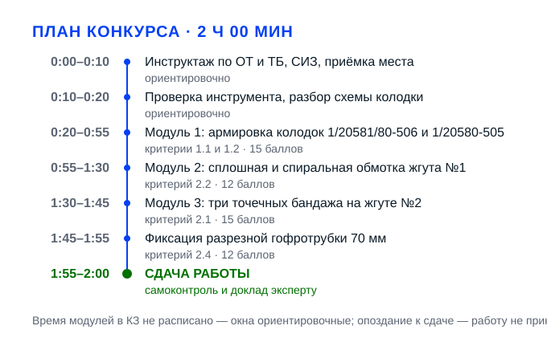
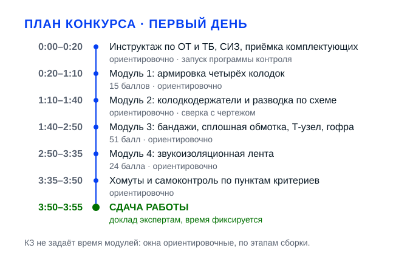
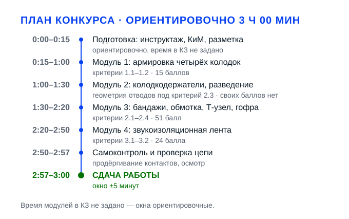

Сборка автомобильных жгутов
Задания ниже — официальные файлы «Абилимпикс» (источник: abilympics-russia.ru), разложенные по категориям. Решения написаны по тексту задания, регламенту и критериям оценки; в них указано, что именно проверяет эксперт.
Школьник
14–16 лет, базовый уровень заданияВ официальном файле категории не разделены отдельными разделами — приводим задание целиком; различия по категориям смотрите в таблице модулей.
Пошаговое решение
Задание для школьников — не собрать жгут целиком, а выполнить его ключевые операции: армировать две четырёхклемные колодки 1/20581/80-506 и 1/20580-505, выполнить сплошную и спиральную обмотку жгута №1, поставить три точечных бандажа на жгут №2 и зафиксировать разрезную гофротрубку длиной семьдесят миллиметров. Из таблицы критериев у школьников работают пункты 1.1, 1.2, 2.1, 2.2 и 2.4: десять баллов за позиционирование контактов, пять за их надёжность, пятнадцать за три бандажа по пять, двенадцать за качество сплошной обмотки и двенадцать за фиксацию гофры; Т-образный узел и звукоизоляционная лента остаются студентам и специалистам. Главный риск — потерять баллы не на технике, а на разметке: колодка, собранная от дальнего края, и бандаж, съехавший на изгиб, выглядят аккуратно и стоят ноль. Время модулей в задании не расписано, окна на плане ориентировочные, на всё два часа.

Задача 1. Пройти инструктаж, принять рабочее место и разобрать схему колодкиПодготовка · 0:00–0:20 · баллы не начисляются, но снимают риски
Конкурсное задание для школьников состоит из трёх модулей, и ни один из них не начинается с провода: сначала инструктаж по охране труда, потом приёмка инструмента и комплектующих, потом разбор схемы сборки колодки. Эти двадцать минут не приносят ни одного балла напрямую, но именно здесь определяется, будет ли армировка собрана с первого раза или её придётся перебирать, теряя время и портя ячейки. Спокойная подготовка экономит потом полчаса.
Действие 1.1. Пройти инструктаж и надеть средства защиты
Шаг 1.1.1
Инструктаж по охране труда и технике безопасности проходим до того, как в руки попадут ножницы и изолента: слушаем, где лежит аптечка, как подать сигнал эксперту при порезе и почему нельзя оставлять ножницы раскрытыми на сборочной панели. В конце ставим подпись в листе инструктажа — без неё к работе не допускают, и это не бюрократия, а условие старта. Заодно уточняем, куда складывать обрезки липкой ленты и где стоит ведро для мусора.
Пункт 2.3 алгоритма для школьников ставит инструктаж первым, а раздел 5.1 требует до начала работы осмотреть место, отрегулировать освещённость и убедиться в наличии комплектующих. Работа с ножницами и липкой лентой — это порезы и потёртости кожи, а спешка на старте как раз и приводит к первому порезу. Участник, который знает порядок действий, не тратит конкурсные минуты на поиски аптечки и объяснения с экспертом.
Подпись в листе стоит, место аптечки и порядок действий при порезе вы можете назвать без паузы, обрезки складываются в отведённую тару, а не под панель. Проверьте себя коротким вопросом: если сейчас порезать палец, куда идти и к кому обращаться — ответ должен быть готов заранее, а не в момент травмы.
Классическая ошибка — отмахнуться от инструктажа «он всё равно ни на что не влияет» и сразу начать раскладывать провода: работу останавливают, время модуля уже идёт, а баллы за организацию снимаются. Вторая — оставить ножницы раскрытыми на панели рядом с жгутом, где лежат провода в один слой.
Эксперт проверяет подпись в листе и наблюдает первые минуты: берут ли ножницы правильно, убирают ли их после реза, не остаются ли лезвия открытыми на рабочей поверхности.
Шаг 1.1.2
Надеваем антистатический халат на все пуговицы и перчатки, волосы убираем под головной убор, рукава застёгиваем или подворачиваем так, чтобы манжета не свисала на панель. Телефон, флешки, напитки и еду оставляем вне рабочей зоны — по особым указаниям конкурсного задания их вообще нельзя проносить на площадку. Халат застёгиваем полностью: пола, которая тянется за рукой, цепляет провод и стаскивает его с ячейки.
Раздел 5.2 требует выполнять работы только в средствах индивидуальной защиты — спецхалате и перчатках, а особые указания прямо перечисляют, что проносить на площадку нельзя. Антистатический халат здесь не украшение: синтетика и трение о панель накапливают заряд, а разряд по контакту — это риск для тонкого наконечника и лишняя причина для замечания.
Халат застёгнут, манжеты не свисают, перчатки сидят по руке и не мешают чувствовать щелчок контакта в ячейке. На столе нет телефона, бутылки и еды. Если перчатка велика и собирается в складку на пальцах — лучше взять размер меньше: в складке теряется чувство посадки.
Прийти в футболке, рассчитывая надеть халат «потом», или работать в перчатках на два размера больше: щелчок контакта не чувствуется, участник давит сильнее и гнёт усик. Отдельная ошибка — положить телефон рядом с панелью, чтобы «следить за временем»: это нарушение особых указаний и повод для замечания.
Эксперт оценивает внешний вид и наличие СИЗ до старта, а дальше следит, остаются ли руки в перчатках на операциях с контактами и не появляется ли на панели посторонний предмет.
Шаг 1.1.3
Осматриваем рабочее место: стол площадью около пяти квадратных метров, проход между рабочими местами шириной от девяноста сантиметров до метра, свет падает слева и не даёт тени на ячейки колодки. Протираем панель насухо, убираем всё, что не относится к заданию, и проверяем, что стул стоит устойчиво. Если лампа бьёт в глаза или, наоборот, ячейки колодки уходят в тень — переставляем её сразу, а не в середине армировки.
Раздел 5.1 обязывает до начала работы осмотреть и привести в порядок место и отрегулировать освещённость, а схема оснащения задаёт площадь и ширину прохода. Мелкая работа с контактами требует ровного света: в тени не видно, сел ли усик за уступ ячейки, и контакт выглядит вставленным, хотя держится только на трении. Это прямая дорога к потере баллов по критерию 1.2.
Стол чистый и сухой, панель не качается, проход свободен, свет ровный и без блика на пластике колодки. Проверьте простым приёмом: положите колодку на панель и посмотрите на ячейки сверху — если внутри ячейки видна тень от края, свет надо поправить.
Работать в полутьме, потому что «и так видно», — самая частая причина того, что контакт вставлен не до щелчка. Вторая ошибка — занять панель инструментом и обрезками так, что жгуту негде лежать: провода свисают с края, тянут колодку и выворачивают уже вставленные контакты.
Эксперт проходит по площадке в первые минуты и отмечает, приведено ли место в порядок до старта: чистая панель и свободный проход читаются как понимание организации труда.
Действие 1.2. Проверить инструмент и комплектующие по перечню
Шаг 1.2.1
Раскладываем комплектующие по перечню и считаем вслух: две колодки 1/20581/80-506 и 1/20580-505, провода с набитыми наконечниками четырёх цветов — Ж, КГ, ЖЗ, ЗЧ, рулон изоленты, разрезная гофротрубка длиной семьдесят миллиметров, ножницы и сборочная панель. Каждую позицию кладём на своё место и отводим под неё зону, чтобы в работе не искать материал по всему столу. Если чего-то нет или количество меньше — сразу говорим эксперту.
Перечень оборудования в разделе 3 конкурсного задания задан для всех категорий, и недостача обнаруживается именно на приёмке, а не в середине модуля. После старта замену выдают только через главного эксперта и только при уважительной причине, поэтому досчитаться до конца лучше сейчас. Порядок на столе — это ещё и скорость: каждая поисковая пауза в работе с проводом стоит дороже, чем минута раскладки.
Все позиции перечня лежат на своих местах, количество совпадает, провода разложены по цветам отдельными пучками. Сомневаетесь в длине гофротрубки — приложите линейку: по перечню она семьдесят миллиметров, и на глаз разница в десять миллиметров не видна.
Начать работу, не пересчитав провода: в середине армировки выясняется, что не хватает одного цвета, и либо ячейка остаётся пустой, либо приходится ставить провод другого цвета — а это минус баллы по критерию 1.1 за позиционирование. Вторая ошибка — сваливать провода в общий пучок, где цвета путаются под руками.
Эксперт смотрит, сверялся ли участник с перечнем и разложены ли материалы по цветам: аккуратная раскладка сразу говорит о том, что человек работал с жгутами раньше.
Шаг 1.2.2
Проверяем инструмент и расходники: ножницы должны резать изоленту одним движением, а не жевать её и не рвать волокна, рулон липкой ленты — быть свежим, клейким и не задубевшим по краю, гофротрубка — без заусенцев и заломов на кромках разреза. Пробуем ленту на ненужном отрезке: она должна липнуть к пальцу и растягиваться примерно на четверть длины, не разрываясь. Тупые ножницы и старая лента — две причины, по которым обмотка выходит с «морщинами».
Критерий 2.2 оценивает качество сплошной обмотки и прямо требует отсутствия пробелов и «морщин» в оплётке, а критерий 2.1 — ровные края бандажа. Рваный край ленты и залом на гофре видны эксперту без лупы, и никакая техника намотки их не скроет. Проверка расходников занимает две минуты и снимает половину причин будущего брака.
Ножницы режут ленту ровно, без затяжек; лента липнет и тянется; кромки гофры гладкие, без острых заусенцев, которые цепляют перчатку. Если лента рвётся при растяжении на треть — она пересушена, просите замену до старта, а не мучайтесь с ней весь модуль.
Работать тупыми ножницами: край ленты получается рваным, волокна торчат, и на обмотке появляются «лохматые» полосы, которые эксперт читает как небрежность. Вторая ошибка — взять ленту, которая не липнет: витки не держатся, бандаж расползается через минуту после наложения.
Эксперт обращает внимание на то, чем участник работает: аккуратный ровный рез и свежая лента видны по качеству кромки на готовом жгуте. Он также смотрит, не пытается ли участник работать затупившимися ножницами вместо того, чтобы попросить замену.
Шаг 1.2.3
Перебираем каждый провод отдельно: наконечник набит плотно и не проворачивается на жиле, изоляция у наконечника не надорвана и не оплавлена, сам наконечник не погнут и не развёрнут. Берём провод за наконечник и за изоляцию рядом с ним, слегка тянем в разные стороны — люфта быть не должно. Проверяем длину: провода в жгуте разные, и если перепутать местами длинный и короткий, обмотка ляжет волной.
Критерий 1.2 даёт пять баллов за то, что все контакты довставлены и исключена возможность выскальзывания, и начинается это свойство не в ячейке колодки, а на самом проводе. Наконечник, набитый на половину жилы, держится до первого натяжения, а потом уходит из колодки вместе с обмоткой. Такой дефект невозможно исправить на готовом жгуте — только перебрать его целиком.
Каждый наконечник сидит на жиле без люфта, изоляция целая, наконечники одного типа не перепутаны. Проверьте на просвет: если у основания наконечника видна жила или, наоборот, изоляция заходит на контактную часть, провод откладываем в сторону и показываем эксперту.
Взять провод, у которого наконечник держится «на честном слове», и поставить его в колодку: при проверке продергиванием он выйдет наружу, и потеряете сразу два балла — за позиционирование по критерию 1.1 и за надёжность по 1.2. Вторая ошибка — тянуть провод за изоляцию у самого наконечника так, что надрывается оболочка.
Эксперт может проверить посадку наконечника на любом проводе до начала армировки и отмечает, осматривал ли участник провода или взял первые попавшиеся.
Действие 1.3. Разобрать схему сборки колодки и маркировку проводов
Шаг 1.3.1
Кладём перед собой схему сборки колодки и читаем её по строкам: в каждой строке указан номер ячейки и цвет провода, который в эту ячейку ставится. Колодки 1/20581/80-506 и 1/20580-505 четырёхклемные, то есть в каждой четыре ячейки, и порядок отсчёта ячеек на схеме идёт от ключа — выступа на корпусе, который не даёт поставить колодку на ответную часть наоборот. Находим ключ на живой колодке пальцем и убеждаемся, что смотрим на ячейки с той же стороны, что и на схеме.
Критерий 1.1 даёт десять баллов за верное позиционирование контактов относительно схемы сборки колодки — по одному баллу за каждый правильно вставленный контакт. Ключ на корпусе и есть точка отсчёта: если начать считать ячейки с другого края, все четыре контакта встанут зеркально, и десять баллов превратятся в ноль при внешне аккуратной работе. Поэтому схему читают до первого контакта, а не после.
Номера ячеек на схеме совпадают с тем, что вы видите на колодке, ключ найден и отмечен маркером или просто запомнен как ориентир. Проговорите вслух порядок: первая ячейка у ключа, дальше по ряду. Если схема читается неоднозначно — это вопрос эксперту до старта, а не догадка в процессе.
Считать ячейки от дальнего края: работа выглядит правильно, контакты сидят плотно, но цвета стоят зеркально относительно схемы, и критерий 1.1 обнуляется целиком. Вторая ошибка — перевернуть колодку в руке и потерять ориентацию по ключу, а потом вставлять провода наугад.
Эксперт подходит к панели в начале армировки и смотрит, лежит ли схема перед участником и сверяется ли он с ней, а не работает по памяти. Отдельно отмечает, отмечен ли ключ колодки: по этой метке потом проверяют всю сборку.
Шаг 1.3.2
Разбираем буквенные обозначения проводов: в маркировке первая буква — основной цвет изоляции, вторая — цвет полосы. Ж — жёлтый, КГ — красный с голубой полосой, ЖЗ — жёлтый с зелёной, ЗЧ — зелёный с чёрной. Раскладываем провода по цветам так, чтобы полоса была видна, и проверяем каждый провод на свет: полоса на тонкой изоляции читается только при хорошем освещении, а при неверном свете зелёная полоса на жёлтом фоне выглядит почти белой.
Критерий 1.1 оценивает позиционирование контакта относительно схемы, а схема задана цветами, поэтому ошибка в расшифровке маркировки равна ошибке в позиционировании. В жгуте четыре похожих провода, и различаются они именно полосой, а не основным цветом: перепутать Ж и ЖЗ легко, а стоит это одного балла за контакт и переделки всего пучка. Понимание цветовых обозначений входит в требования к квалификации школьника.
Каждый провод отнесён к своей группе, полоса видна, цвета не вызывают сомнений. Проверьте себя, назвав цвет вслух для каждого провода: если хотя бы один приходится разглядывать секунду и больше — отложите его в сторону и посмотрите при другом свете.
Определять цвет «на глаз» под жёлтой лампой: жёлтый с зелёной полосой и просто жёлтый выглядят одинаково, и в колодку уходит не тот провод. Вторая ошибка — считать, что полоса это второй провод в пучке, и путать провода при раскладке.
Эксперт проверяет цвета на готовом изделии и сразу видит, стоит ли в ячейке провод того цвета, который задан схемой, — это самый быстрый способ проверить критерий 1.1.
Шаг 1.3.3
Записываем на листе бумаги короткий план работы: сколько контактов и в какие ячейки каждой колодки, где по схеме проходят три точки бандажа, на каком участке ставится разрезная гофротрубка длиной семьдесят миллиметров. Отмечаем на плане порядок операций: сначала армировка двух колодок, потом обмотка жгута, потом бандажи и гофра. Такой лист держим рядом с панелью и вычёркиваем пункты по мере выполнения.
Структура задания в разделе 2.2 разбита на три модуля, и они выполняются последовательно: армировка, обмотка, бандажи с гофротрубкой. План на бумаге нужен не для красоты: в середине работы, когда руки заняты лентой, память подводит, и участник возвращается к схеме, теряя нить. Кроме того, вычеркнутые пункты дают спокойный самоконтроль перед сдачей — видно, что ничего не забыто.
В плане перечислены все операции задания, порядок совпадает с модулями, точки бандажей и место гофры отмечены. Проверьте: если эксперт спросит, что вы уже сделали и что осталось, ответ должен быть по этому листу за пять секунд.
Работать без плана, полагаясь на память: к третьему модулю участник забывает про третий бандаж, и вместо пятнадцати баллов получает десять. Вторая ошибка — записать план так, что самому потом не разобрать, и всё равно возвращаться к схеме.
Эксперт оценивает организацию работы в целом и видит, работает ли участник по плану или перескакивает с операции на операцию. Если плана нет, он задаёт вопрос о порядке операций и по ответу видит, есть ли система.
Задача 2. Армировать колодки 1/20581/80-506 и 1/20580-505Модуль 1 · критерии 1.1 и 1.2 · 15 баллов
Первый модуль — самый дорогой по точности и самый дешёвый по времени: десять баллов дают за верное позиционирование контактов относительно схемы, по одному за контакт, и ещё пять — за то, что контакты довставлены и не могут выскользнуть. Здесь нет ленты и гофры, есть только пластик, металл и щелчок, которым ячейка подтверждает, что усик встал за уступ. Ошибка в этом модуле не исправляется на следующих: перепутанный цвет останется в колодке до сдачи.
Действие 2.1. Подготовить колодки и провода к армировке
Шаг 2.1.1
Кладём обе колодки на панель ключом к себе и фиксируем так, чтобы они не ездили: если есть колодкодержатель — защёлкиваем в нём, если нет — придерживаем левой рукой за корпус, а не за провода. Смотрим в ячейки на свет: внутри не должно быть облоя, стружки и остатков литника, а фиксирующий усик в каждой ячейке должен быть целым и пружинить при касании тонкой отвёрткой. Колодку с надломленным усиком сразу показываем эксперту — в неё контакт не встанет на замок.
Критерий 1.2 даёт пять баллов именно за исключение возможности выскальзывания, а держит контакт в ячейке только пластиковый усик. Если он надломлен, контакт войдёт до упора, щелчка не будет, и при первом же продергивании провод выйдет наружу. Облой на дне ячейки мешает контакту сесть на полную глубину: снаружи он выглядит вставленным, но усик не заскочил за уступ.
Обе колодки закреплены, ячейки чистые, все усики целые и пружинят. Проверьте каждую ячейку пальцем в перчатке: усилие пружинки должно ощущаться, а сама она не должна болтаться. Пустая колодка просматривается насквозь — если в глубине что-то белеет, это облой.
Крепить колодку «на весу», придерживая за провода: при вставке контакта корпус проворачивается, усик не попадает в паз, и его загибает. Вторая ошибка — не осмотреть ячейки и вставлять контакт в забитую ячейку силой, раздавливая облой вместе с фиксатором.
Эксперт смотрит, как участник держит колодку при армировке: закреплённый корпус — признак того, что человек работал с этими разъёмами, а не впервые видит их на конкурсе.
Шаг 2.1.2
Раскладываем провода в том порядке, в котором они пойдут в колодку по схеме: Ж, КГ, ЖЗ, ЗЧ. Каждый провод укладываем наконечником в одну сторону и отгибаем хвост так, чтобы он не лежал поперёк будущего пучка. Если провода короткие, придерживаем их левой рукой веером — так видно цвет и полосу, и не приходится перебирать пучок перед каждым контактом.
Критерий 1.1 строится на соответствии схеме, а схема читается по цветам, поэтому раскладка по порядку — это половина успеха. Когда провода лежат веером в нужной последовательности, участник берёт следующий по счёту провод, а не ищет нужный цвет в общей куче: на четырёх контактах экономится минута, на восьми — уже три. Кроме того, веер не даёт проводам перекрещиваться и путаться при вставке.
Провода лежат в порядке схемы, наконечники смотрят в одну сторону, полосы видны, хвосты не перекрывают ячейки. Проверьте, назвав порядок вслух: первый — Ж, второй — КГ, и так до конца. Если порядок сбился, разложите заново, это быстрее, чем распутывать в процессе.
Держать провода общей связкой и вытягивать нужный из середины: соседние провода тянутся следом, наконечники цепляются друг за друга, а на самом проводе появляется залом изоляции у наконечника. Вторая ошибка — разложить провода наконечниками в разные стороны и разворачивать каждый в руке.
Эксперт видит раскладку в начале модуля и по ней оценивает, понимает ли участник последовательность сборки колодки. Порядок проводов на панели он сравнивает с порядком строк в схеме сборки колодки.
Шаг 2.1.3
Берём один провод и разбираемся с ориентацией контакта: на наконечнике есть фиксирующий язычок-усик, и при вставке он должен смотреть в сторону защёлки ячейки, то есть в ту сторону, где пластиковый уступ. Определяем это на сухой колодке: вводим наконечник в ячейку на пару миллиметров без нажима и пробуем провернуть — правильная ориентация единственная, при ней наконечник входит свободно и не закусывает.
Контакты в автомобильных колодках поляризованы: ячейка имеет паз, а наконечник — выступ, и перепутать положение можно только при усилии. Именно попытка вставить контакт «как получится» загибает усик, после чего он уже не пружинит, и баллы по критерию 1.2 теряются вместе с баллами по 1.1. Проверка на сухом ходе занимает секунды и снимает эту ошибку полностью.
Наконечник входит в ячейку свободно, без закусывания и без перекоса, при провороте встречает упор. Если для входа нужно давить — ориентация неверна, разворачивать нужно контакт, а не наращивать усилие. Убедитесь, что усик не загнут: он должен стоять параллельно корпусу наконечника.
Вставлять контакт «на авось», подбирая положение силой: усик загибается внутрь, контакт садится без щелчка, и участник уверен, что всё хорошо до момента проверки продергиванием. Вторая ошибка — пытаться выпрямить загнутый усик пальцем: он ломается, и ячейка выходит из строя окончательно.
Эксперт может попросить показать, как участник определяет ориентацию контакта, и по ответу видит, понимает ли он устройство замка, а не действует наугад.
Действие 2.2. Вставить контакты в колодку 1/20581/80-506 по схеме
Шаг 2.2.1
Берём провод цвета, который схема ставит в первую ячейку, и держим его за изоляцию в сантиметре от наконечника — так корпус контакта остаётся свободным и видно, как он входит. Вводим наконечник в ячейку строго по оси, без наклона, и дожимаем до щелчка: усилие небольшое, но уверенное, движение одно, без покачиваний. После щелчка отпускаем провод и проверяем пальцем, что корпус контакта стоит заподлицо с пластиком, а не выступает над ним.
Щелчок — это и есть момент, когда усик заскочил за уступ и контакт встал на замок; всё, что делается после, лишь подтверждает его. Критерий 1.1 требует верного позиционирования относительно схемы и ячейки, а критерий 1.2 — того, что контакт не выскользнет. Недожатый контакт выглядит почти так же, как дожатый, но держится на трении, и на продергивании выходит наружу.
Щелчок слышен и ощущается пальцами, контакт стоит вровень с корпусом, провод не качается в ячейке. Проверьте нажатием: если контакт подаётся вперёд ещё на миллиметр — он не сел. На готовом жгуте такой дефект не виден под обмоткой, поэтому проверять нужно сразу.
Давить на провод, а не на наконечник: изоляция сминается, жила уходит внутрь, а контакт остаётся снаружи. Вторая ошибка — вводить наконечник под углом, из-за чего он цепляет край ячейки и заминает усик, и щелчка не происходит, хотя участник уверен, что дожал.
Эксперт подходит к панели именно в момент вставки первых контактов и слушает, есть ли щелчок: по звуку сразу понятно, садится контакт на замок или вдавливается с натягом.
Шаг 2.2.2
Ставим остальные контакты этой колодки по схеме, по одному: взяли провод, сверились со строкой схемы, вставили до щелчка, отложили руку. После каждого контакта возвращаем взгляд к схеме — не к предыдущему проводу, а именно к строке с номером ячейки. Четыре ячейки четырёхклемной колодки проходятся по порядку, и на всю колодку уходит не больше двух минут спокойной работы.
Критерий 1.1 оценивает каждый контакт отдельно, по одному баллу, и ошибка в одной ячейке не обнуляет остальные — но и не компенсируется: десять баллов складываются из верных решений по каждой позиции. Сверка после каждого контакта нужна потому, что память при однообразной работе сбивается на третьем проводе, а цвета Ж и ЖЗ различаются только полосой. Один перепутанный провод — минус балл и переборка всей колодки.
Все ячейки заполнены, цвета совпадают со схемой построчно, контакты стоят вровень с корпусом. Проверьте колодку на просвет с торца: провода должны выходить ровным рядом, без перехлёстов и без провода, идущего наискось через соседнюю ячейку.
Ставить контакты «по памяти», не глядя в схему: на третьем проводе Ж и ЖЗ меняются местами, и участник узнаёт об этом только на сдаче. Вторая ошибка — сначала вставить все провода, а потом проверять: перепутанный провод в четырёхклемной колодке вынимается сложнее, чем ставится, и требует съёмника.
Эксперт сверяет готовую колодку со схемой ячейка за ячейкой — это самый быстрый и самый однозначный способ проверить критерий 1.1. Ошибку он ищет не по общему виду, а по каждой строке схемы, поэтому перестановка двух соседних цветов для него очевидна.
Шаг 2.2.3
Проверяем посадку визуально: наконечники не выступают над плоскостью корпуса, усики в окнах контроля (если они есть в колодке) видны как ровные язычки, провода выходят из ячеек без перекоса. Слегка разводим провода веером и смотрим на колодку сбоку: линия выхода должна быть ровной, без провода, который уходит вверх или вниз. Если в колодке есть фиксирующая крышка или вторичный замок, защёлкиваем её до щелчка.
Критерий 1.2 требует не только того, чтобы контакты были довставлены, но и того, чтобы возможность выскальзывания была исключена — а вторичный замок как раз и есть та деталь, которая держит все контакты сразу. Крышка, оставленная открытой, обнуляет смысл аккуратной армировки: при натяжении жгута контакты выходят из ячеек группой. На сдаче это видно с первого взгляда.
Контакты вровень, провода выходят ровным рядом, крышка или замок защёлкнуты до щелчка и не отходит при нажатии пальцем. Проверьте покачиванием корпуса: ничего не должно щёлкать и люфтить внутри. Проверьте также, что провода не перетянуты у самого выхода: натянутый провод выдаёт себя наклоном.
Забыть про вторичный замок: колодка выглядит собранной, контакты сидят, но при первом продёргивании группа проводов выходит. Вторая ошибка — защёлкнуть крышку, не проверив посадку контактов, и тем самым закрыть себе доступ к дефекту до сдачи.
Эксперт проверяет наличие и посадку вторичного замка отдельно, потому что именно он отвечает за надёжность по критерию 1.2. Он нажимает на крышку пальцем и смотрит, не отходит ли она: незащёлкнутый замок выдаёт себя люфтом.
Действие 2.3. Армировать вторую колодку и сверить обе со схемой
Шаг 2.3.1
Переходим ко второй колодке 1/20580-505 и работаем с ней так же, но по её собственной схеме: порядок цветов у неё другой, и копировать предыдущую колодку нельзя. Находим ключ, отсчитываем ячейки от него, раскладываем провода в новом порядке и вставляем по одному до щелчка. Между колодками делаем короткую паузу в десять секунд: разложить провода заново дешевле, чем перебирать готовую колодку.
В задании школьников модуль 1 описан именно как армировка двух колодок — 1/20581/80-506 и 1/20580-505, и в критерии 1.1 баллы начисляются за каждый верно позиционированный контакт в обеих. Механическая привычка «как в прошлый раз» здесь и подводит: рука ставит цвет по инерции, а схема второй колодки задаёт другое расположение. Пауза перед сменой колодки стоит десять секунд и спасает несколько баллов.
Вторая колодка собрана по своей схеме, ключ найден, цвета не повторяют первую колодку автоматически. Проверьте себя: положите обе колодки рядом и сравните порядок цветов — он должен отличаться так, как задано схемой, а не совпадать случайно.
Собирать вторую колодку «по памяти о первой»: цвета встают по инерции, и половина контактов оказывается не в тех ячейках. Вторая ошибка — перепутать сами колодки, потому что они лежат рядом и отличаются только маркировкой на корпусе.
Эксперт сверяет каждую колодку с её схемой отдельно и отмечает, различает ли участник два разных разъёма или работает с ними как с одинаковыми. Если порядок цветов в двух колодках совпал, это для него сигнал, что вторую собирали по памяти.
Шаг 2.3.2
Сверяем обе колодки со схемой построчно, положив их рядом и водя пальцем по строкам: номер ячейки, цвет провода, фактическое положение. Проверку делаем не по памяти, а с листом перед глазами, и проговариваем вслух каждый цвет — так ошибка слышна раньше, чем видна. Обнаруженное расхождение исправляем сразу, пока колодка не ушла в обмотку. Проверку ведём медленно, без спешки: спешка здесь дороже всего.
Критерий 1.1 даёт по баллу за контакт, и сверка «глаза в схему» — единственный способ поймать зеркальную ошибку до того, как её увидит эксперт. После обмотки и установки гофры проверить цвета можно только прозвонкой, а это уже отдельная операция и потерянное время. Две минуты сверки перед обмоткой — самая выгодная инвестиция модуля.
Все строки схемы отмечены, расхождений нет, обе колодки лежат рядом и читаются без затруднений. Если сомневаетесь в одном проводе — выньте его и поставьте заново: съёмник или тонкая отвёртка с отжатием усика занимают меньше времени, чем объяснение на сдаче.
Сверять «на глаз», пробегая взглядом по колодке: глаз цепляется за общий порядок и не видит перестановку двух соседних проводов. Вторая ошибка — отложить сверку до самоконтроля в конце, когда провода уже закрыты обмоткой и лентой.
Эксперт делает свою сверку в конце модуля, и расхождение, найденное им, стоит участнику баллов, которые были почти в руках. Свою сверку он делает по листу, а не по образцу, и расхождение фиксирует в протоколе.
Шаг 2.3.3
Укладываем провода от обеих колодок в направлении будущего жгута: собираем их в один пучок, расправляем пальцами от колодки к хвосту, убираем петли и перехлёсты. Пучок должен лежать на панели свободно, без натяжения у ячеек, потому что натянутый провод тянет контакт из колодки и создаёт постоянную нагрузку на усик. Колодки оставляем на расстоянии, которое задано схемой, а не так, как удобно руке.
Дальше по заданию идёт обмотка жгута и установка гофротрубки, и всё это ложится на подготовленный пучок. Если провода перехлёстнуты, обмотка получится с «горбом», а перекрытие слоёв станет неравномерным — это уже минус по критерию 2.2 за качество сплошной обмотки. Натянутый у колодки провод — скрытый дефект: он не виден, но работает против контакта всю жизнь жгута.
Провода лежат параллельно, без петель, у ячеек есть небольшой запас, колодки стоят на расстоянии по схеме. Проведите ладонью по пучку от колодки к хвосту: под рукой не должно быть бугров и перекрёстных проводов.
Стянуть провода в тугой пучок сразу у колодки: провод натягивается, контакт выходит из замка, и на продергивании это обнаруживается. Вторая ошибка — оставить провода лежать так, как они упали, с петлёй посередине, которая потом превратится в складку под обмоткой.
Эксперт смотрит на пучок перед обмоткой: ровно уложенные провода читаются как понимание того, что обмотка лишь фиксирует уже правильную укладку. Бугор под будущей обмоткой он замечает сразу, потому что смотрит пучок на просвет вдоль оси.
Действие 2.4. Продёрнуть каждый контакт и убедиться, что он не выскользнет
Шаг 2.4.1
Проверяем каждый контакт продергиванием: берём провод за изоляцию в сантиметре от наконечника, тянем назад вдоль оси ячейки с усилием примерно два-три килограмма и держим секунду. Контакт не должен ни выйти, ни сместиться даже на миллиметр, а в колодке не должно быть слышно щелчков. Проходим так все ячейки обеих колодок, по порядку номеров, чтобы ни одна не осталась непроверенной.
Пункт 5 алгоритма для школьников прямо требует проверки правильности выполненного действия — продернуть каждый контакт и убедиться, что нет выскальзывания. Критерий 1.2 даёт за это пять баллов, и проверка делается руками участника, а не эксперта: он лишь повторяет её выборочно. Усилие в два-три килограмма выбрано не случайно — оно больше любого натяжения, которое возникнет при монтаже жгута в автомобиле.
Все контакты держат, ни один не сместился, щелчков при натяжении нет. Отмечайте проверенные ячейки на плане галочкой: к концу модуля их восемь, и запомнить все наизусть трудно. Контакт, который вышел, — это не «брак провода», а недожатая вставка, и лечится она повторной постановкой до щелчка.
Тянуть за сам провод с усилием «на глазок», не дотягивая до нужного: слабое натяжение не выявит недожатый контакт, и дефект уйдёт в готовое изделие. Вторая ошибка — проверять только те контакты, которые показались подозрительными: выскальзывает как раз тот, который выглядел нормально.
Эксперт выборочно продергивает два-три контакта на каждой колодке и смотрит, совпадает ли его результат с тем, что заявил участник. Если контакт вышел у него в руках, участнику задают вопрос, как он проверял посадку.
Шаг 2.4.2
Добавляем проверку на боковую нагрузку: покачиваем каждый провод в стороны примерно на пятнадцать градусов, два-три движения, и смотрим на корпус контакта. Он должен стоять неподвижно в ячейке, без люфта и без постукивания. Так же проверяем провод на вытягивание под углом — не строго назад, а вбок и назад одновременно, потому что именно так нагружается жгут на изгибе при монтаже.
Критерий 1.2 говорит об исключении возможности выскальзывания, а выскальзывает контакт чаще не от прямого натяжения, а от бокового качания: усик держит осевую нагрузку хуже, чем поперечную. Проверка под углом выявляет контакты, у которых усик встал не за уступ, а рядом с ним. Такие дефекты не видны глазом и не слышны при вставке.
Контакт не люфтит, провод не стучит в ячейке, корпус наконечника не выходит за плоскость пластика. Если слышен щелчок при покачивании — усик не зацеплен, контакт нужно вынуть съёмником и поставить заново.
Считать продергивание достаточной проверкой и пропустить боковую нагрузку: часть контактов держится только за счёт трения и выходит при первом же изгибе жгута. Вторая ошибка — качать провод с большим размахом и самому расшатать посадку.
Эксперт проверяет посадку контактов и на прямом натяжении, и на качании: вторая проверка занимает у него несколько секунд, но отсекает именно скрытые дефекты.
Шаг 2.4.3
Записываем результат проверки на лист плана: сколько контактов проверено, есть ли замечания, что переделано. Если контакт вышел — не вдавливаем его обратно пальцем, а вынимаем съёмником или тонкой отвёрткой, отжав усик через окно контроля, выпрямляем его и ставим заново до щелчка. Колодку, в которой усик сломан, показываем эксперту и просим замену до того, как жгут уйдёт в обмотку.
Пункт 9 алгоритма для школьников — самоконтроль за выполненными действиями, и он заканчивается не общими словами «всё хорошо», а записью, к которой можно вернуться. Вдавливание вышедшего контакта пальцем — худшее из возможных решений: усик загибается внутрь, ячейка теряет фиксацию окончательно, и вместо одного балла теряются два. Замена колодки до обмотки — штатная процедура, после обмотки её уже не провести.
В плане отмечены все проверенные контакты, замечаний не осталось, переделанные позиции видны. Убедитесь, что ни один провод не был вставлен «второй раз» без вынимания: следы повторной вставки на усике заметны как потёртость пластика.
Вдавить вышедший контакт обратно и считать вопрос закрытым: через минуту он выйдет снова, а усик уже не держит. Вторая ошибка — скрыть дефект и не сказать эксперту о сломанной ячейке: на сдаче это обнаружится, и разговор будет неприятным.
Эксперт сверяет записи участника с фактическим состоянием колодок и отдельно смотрит ячейки, где были замечания. Его интересует, отмечены ли проверенные ячейки: по отметкам видно, проверяли все или выборочно.
Задача 3. Выполнить сплошную и спиральную обмотку жгута №1Модуль 2 · критерий 2.2 · 12 баллов
Второй модуль — работа с липкой лентой: сначала сплошная обмотка, где каждый виток ложится на половину предыдущего, потом спиральная, где лента идёт с шагом и пучок остаётся открытым. Двенадцать баллов по критерию 2.2 дают за перекрытие ровно в пятьдесят процентов и за отсутствие пробелов и «морщин» в оплётке. Здесь важнее не скорость, а одинаковое натяжение и одинаковый угол от первого витка до последнего: обмотка читается как ровная полоса или как брак.
Действие 3.1. Подготовить жгут №1 к обмотке
Шаг 3.1.1
Кладём схему и определяем границы обмотки: где она начинается у колодки, где заканчивается у хвоста пучка и какой участок остаётся свободным под разрезную гофротрубку длиной семьдесят миллиметров. Отмечаем границы маркером на изоляции или малярной лентой — тонкой полоской, которую потом снимаем. Обмотка не должна заходить на торец колодки: лента, намотанная на корпус разъёма, мешает посадке на ответную часть.
Критерий 2.2 оценивает качество сплошной обмотки, и первое, что видит эксперт, — где обмотка начинается и где заканчивается. Лента, заехавшая на колодку, сразу читается как ошибка: разъём перестаёт садиться до упора, а на жгуте остаётся неопрятный наплыв. Свободный участок под гофру нужен потому, что трубку ставят на провода, а не поверх обмотки, и её концы фиксируют отдельными витками.
Границы отмечены, начало обмотки отстоит от торца колодки на несколько миллиметров, участок под гофру оставлен свободным. Проверьте: приложите гофротрубку к пучку — она должна лечь на провода, не раздвигая витки обмотки.
Начать обмотку прямо от торца колодки: лента заходит на пластик, колодка перестаёт вставляться в ответную часть, а снять ленту без следов уже не получится. Вторая ошибка — обмотать весь пучок целиком и потом вырезать окно под гофру, порвав витки.
Эксперт осматривает переход от колодки к обмотке в первую очередь: это место видно лучше всего и сразу показывает аккуратность работы. Он измеряет линейкой расстояние от торца колодки до первого витка и сравнивает со схемой.
Шаг 3.1.2
Выравниваем пучок: провода укладываем параллельно друг другу, без перехлёстов и петель, и приглаживаем ладонью от колодки к хвосту несколько раз. Пучок должен стать плоским или слегка овальным, одинаковым по толщине по всей длине. Если один провод выбивается из ряда, укладываем его в середину пучка, а не поверх: поверху он даст бугор под обмоткой. На это уходит не больше минуты, а выигрыш — вся обмотка.
Сплошная обмотка ложится на пучок как на форму, и все неровности она повторяет. Бугор от провода, уложенного поверху, превращается в «горб» с натянутыми и ослабленными витками рядом, а ослабленный виток — это будущая «морщина», за которую критерий 2.2 снимает баллы. Ровный пучок одинаковой толщины даёт ровную обмотку почти без усилий: лента идёт сама, стоит только держать натяжение.
Пучок ровный по толщине, провода параллельны, бугров нет. Проведите по нему пальцем в перчатке: под пальцем не должно быть ступенек. Проверьте с торца — сечение пучка одинаковое по всей длине, без утолщений.
Обматывать пучок в том виде, в каком он лежит: перехлёст внутри даёт утолщение, обмотка идёт волной, и на сдаче это выглядит как небрежность. Вторая ошибка — выровнять пучок руками в перчатках с шершавой поверхностью и разлохматить изоляцию.
Эксперт смотрит на пучок до обмотки и после: ровный пучок даёт ровную оплётку, и это видно без измерений. Он проводит пальцем по пучку до обмотки и после: ровный пучок даёт ровную оплётку без усилий.
Шаг 3.1.3
Закрепляем начало обмотки: прижимаем конец ленты к пучку клейкой стороной вниз и делаем два витка на одном месте, не смещаясь вдоль пучка. Первый виток кладём с небольшим натяжением, второй — точно по первому, чтобы края совпали. Только после этого начинаем двигаться вдоль пучка: два витка на месте дают замок, который держит всю обмотку и не даёт ей сползти при натяжении.
Критерий 2.1 отдельно требует, чтобы края верхнего слоя совпадали с краями предыдущего, и это правило начинается с первого витка. Начало, закреплённое одним витком, разъезжается при первом же движении руки: лента проворачивается вокруг пучка, обмотка идёт косо, и перекрытие перестаёт быть пятидесятипроцентным. Два витка на месте — это стандартный приём жгутового производства, он же применяется при фиксации гофротрубки.
Начало обмотки держится, при потягивании вдоль пучка не сползает, края двух первых витков совпадают. Проверьте пальцем: под лентой не должно быть воздушного пузыря, а сама лента должна быть прижата по всей ширине.
Начать обмотку с одного витка и сразу пойти вдоль пучка: лента проворачивается, первый виток уходит по спирали, и весь рисунок обмотки сбивается. Вторая ошибка — приклеить начало, не прижав его, и потом ловить отстающий конец посреди работы.
Эксперт проверяет начало обмотки на отрыв: поддевает край ногтем и смотрит, держится ли замок из двух витков. Отрыв начала обмотки — самый частый дефект на сдаче, поэтому проверяют его первым.
Шаг 3.1.4
Берём рулон в правую руку так, чтобы лента сходила с верхней стороны рулона и ложилась на пучок клейкой стороной внутрь, а левой придерживаем пучок у колодки. Ведём обмотку от колодки к хвосту, держа ленту под углом примерно сорок пять — шестьдесят градусов к оси пучка. Рулон при этом слегка оттягиваем назад, создавая натяжение около двадцати — тридцати процентов: лента должна тянуться, но не рваться и не сужаться вдвое.
Угол и натяжение — две переменные, из которых складывается качество обмотки по критерию 2.2. При угле меньше сорока пяти градусов виток ложится почти поперёк, лента идёт широкими полосами и морщится на изгибах; при угле больше шестидесяти витки становятся почти продольными, и перекрытие теряется. Слабое натяжение даёт пузыри и «морщины», сильное — перетянутый, жёсткий пучок и суженную ленту, которая не закрывает нужную ширину.
Лента ложится ровно, без складок, рулон идёт равномерно, пучок не перетянут: при сжатии пальцами он пружинит. Проверьте первые пять витков на просвет: перекрытие должно быть одинаковым, примерно половина ширины ленты, что для стандартной ленты в девятнадцать миллиметров составляет около девяти-десяти миллиметров.
Тянуть ленту изо всех сил «чтобы держалось»: пучок становится жёстким, лента сужается и не закрывает положенную ширину, а на изгибах идут белые полосы растянутого клея. Вторая ошибка — держать рулон слишком далеко от пучка и терять контроль над углом.
Эксперт смотрит на положение рук и на сам характер движения: ровный, одинаковый ритм виден по обмотке без всяких замеров. По наклону рулона он понимает, держит ли участник угол или ведёт ленту как получится.
Действие 3.2. Выполнить сплошную обмотку с перекрытием 50 процентов
Шаг 3.2.1
Ведём обмотку вдоль пучка, укладывая каждый следующий виток так, чтобы он перекрывал предыдущий ровно наполовину: для ленты в девятнадцать миллиметров это значит, что свободным остаётся около девяти миллиметров. Движение руки равномерное, без ускорений: шаг вдоль пучка на один оборот рулона должен быть одинаковым от начала до конца. Глаз держим не на рулоне, а на границе предыдущего витка — именно по ней выравнивается перекрытие.
Критерий 2.2 прямо задаёт перекрытие новым слоем предыдущего на пятьдесят процентов и отсутствие пробелов — это два измеримых признака, по которым выставляют двенадцать баллов. Перекрытие меньше половины даёт тонкую оплётку, которая не защищает провода от перетирания, и при осмотре видны просветы между витками. Перекрытие больше половины утолщает жгут, лента идёт волной и морщится, потому что ей некуда ложиться ровно.
Перекрытие одинаковое по всей длине, просветов между витками нет, обмотка выглядит как ровная полоса с одинаковым шагом. Проверьте на участке в десять сантиметров: посчитайте витки — при равномерной работе их число на одинаковых отрезках совпадает.
Гнать обмотку быстро, не глядя на границу предыдущего витка: шаг гуляет, в одном месте витки наезжают друг на друга, в другом остаётся просвет, и критерий 2.2 теряет баллы за пробелы. Вторая ошибка — вести обмотку рывками, останавливаясь на каждом витке: на остановках лента морщится.
Эксперт проверяет обмотку на просвет и на ощупь: пробелы видны как светлые полосы, а неравномерный шаг чувствуется пальцем как ступеньки. Он считает витки на десятисантиметровом участке и сравнивает результат с соседним участком.
Шаг 3.2.2
Держим натяжение и угол постоянными по всей длине: лента должна ложиться с легким натягом, пучок под ней остаётся гибким, а на изгибах витки не топорщатся. На поворотах трассы, если пучок меняет направление, слегка уменьшаем шаг и придерживаем ленту большим пальцем, чтобы она легла по внутреннему радиусу без складки. Каждые десять сантиметров приглаживаем обмотку пальцем в перчатке — так сразу видно, где лента легла слабо.
Критерий 2.2 отдельно называет «морщины» в оплётке — это следствие двух причин: слабого натяжения и неверного угла на изгибе. Морщина не только некрасива, она разбалтывается в эксплуатации и открывает провод. Приглаживание по ходу работы — самый дешёвый контроль: рука чувствует пузырь раньше, чем глаз его увидит, и исправить можно сразу, перемотав участок в два сантиметра.
Обмотка ровная, без складок и пузырей, на изгибах лента прилегает по всей ширине, пучок пружинит при сжатии. Проверьте ногтем: под лентой не должно быть воздушных полостей, а край витка не должен отходить при легком поддевании.
Перетянуть пучок у колодки: провод выходит из замка, а обмотка становится жёсткой и топорщится на изгибах. Вторая ошибка — наоборот, ослабить натяжение на повороте и оставить складку, которую потом не разгладить.
Эксперт прощупывает обмотку по всей длине: складки и пузыри чувствуются сразу, даже если внешне оплётка выглядит ровной. Морщину он находит на ощупь, а не на глаз, поэтому приглаживание по ходу работы для него заметно.
Шаг 3.2.3
Закрываем конец сплошной обмотки: делаем два витка на одном месте, не смещаясь, затем обрезаем ленту ножницами под углом примерно сорок пять градусов и приглаживаем кончик пальцем так, чтобы он лёг по ходу обмотки, а не торчал. Если по схеме дальше начинается спиральная обмотка или ставится бандаж, конец не обрезаем коротко, а оставляем переход внахлёст — об этом следующий шаг.
Критерий 2.1 требует, чтобы края верхнего слоя совпадали с краями предыдущего, и это касается не только бандажей: конец обмотки, срезанный под прямым углом и не приглаженный, образует ступеньку, за которую цепляется ответная деталь при монтаже. Два витка на месте в конце дают такой же замок, как в начале, и не дают обмотке раскрутиться. Срез под углом нужен потому, что косой край ложится плашмя и не создаёт утолщения.
Конец обмотки держится, кончик приглажен и не отходит, ступеньки нет. Проведите пальцем поперёк пучка: переход должен быть плавным, без бугра. Если кончик отстаёт — прижмите его ещё раз, пока клей свежий, потом он уже не прилипнет.
Оборвать ленту руками «чтобы быстрее»: край получается рваным и лохматым, а на обмотке остаётся торчащий хвост, который эксперт видит сразу. Вторая ошибка — обрезать ленту коротко, без двух фиксирующих витков: обмотка начинает расходиться от конца.
Эксперт осматривает именно концы обмотки: начало и конец — те места, где брак виден без разглядывания всей длины. Кончик, срезанный под углом и приглаженный, он отличает от оборванного края сразу.
Действие 3.3. Выполнить спиральную обмотку и осмотреть жгут
Шаг 3.3.1
Спиральную обмотку ведём с шагом примерно в ширину ленты, то есть каждый следующий виток отстоит от предыдущего на девятнадцать-двадцать миллиметров, и между ними остаётся открытый участок пучка. Шаг держим одинаковым: он отмеряется краем ленты, а не на глаз, поэтому глаз всё время на предыдущем витке. Натяжение такое же, как при сплошной обмотке, угол тот же — сорок пять — шестьдесят градусов, меняется только шаг вдоль пучка.
В модуле 2 школьник выполняет обмотку двух видов, и спиральная нужна там, где жгут должен оставаться гибким и где по схеме не требуется полная защита. Критерий 2.2 оценивает качество оплётки и требует отсутствия пробелов — применительно к спирали это значит, что шаг не должен «прыгать»: там, где витки сблизились, пучок выглядит толще, а там, где разошлись, — оголён. Равномерность и есть главный признак качества спирали.
Шаг одинаковый по всей длине, витки параллельны друг другу, открытые участки пучка одинаковой ширины. Проверьте на отрезке в двадцать сантиметров: должно уместиться одинаковое число витков, и расстояние между любыми двумя соседними витками должно совпадать на глаз без линейки.
Вести спираль «как получится», ускоряясь к концу: шаг растёт, витки становятся реже, и пучок в конце остаётся почти голым. Вторая ошибка — сделать шаг меньше ширины ленты, и тогда спираль превращается в небрежную сплошную обмотку с нахлёстами и морщинами.
Эксперт сравнивает шаг на разных участках жгута: спираль с одинаковым шагом читается как работа по правилу, а не по настроению. Он отмеряет шаг линейкой в двух местах и сравнивает: расхождение больше двух миллиметров видно.
Шаг 3.3.2
Переходим от сплошной обмотки к спиральной без уступа: последний виток сплошной кладём точно по краю предыдущего, а первый виток спирали начинаем от того же края, не сдвигая ленту вбок. Если по схеме участки идут в обратном порядке, сначала закрываем спираль двумя витками на месте, а уже потом переходим в сплошную. Переход приглаживаем пальцем и проверяем, что в этом месте пучок не толще, чем на соседних участках.
Критерий 2.1 говорит о совпадении краёв слоёв, и на переходе между видами обмотки это правило проявляется сильнее всего: сдвиг на пару миллиметров даёт ступеньку, которая видна как утолщение и цепляется за крепёж при монтаже. Ровный переход — признак того, что участник понимает логику обмотки, а не просто наматывает ленту. Кроме того, на переходе чаще всего и образуется морщина, за которую снимают баллы.
Переход плавный, без утолщения и без сдвига вбок, лента на стыке прилегает по всей ширине. Проведите пальцем вдоль пучка через место перехода: он не должен спотыкаться о край ленты. Если палец спотыкается, переход перематывают заново, а не приглаживают.
Начать спираль со сдвигом в сторону: на стыке появляется уступ, лента идёт косо, и дальше весь шаг сбивается. Вторая ошибка — не пригладить переход и оставить подвёрнутый край, который потом отходит. Третья частая ошибка — намотать на стыке лишний виток и получить бугор.
Эксперт осматривает место перехода отдельно: именно там видно, держит ли участник постоянный угол и натяжение или меняет хват. Ступеньку на стыке он проверяет пальцем, потому что на глаз она почти не читается.
Шаг 3.3.3
Осматриваем обмотку целиком, медленно поворачивая жгут в руках: ищем просветы между витками, морщины, отстающие края, следы растянутого клея, участки, где лента легла шире или уже. Найденный дефект исправляем сразу — перематываем участок в два-три сантиметра, а не приглаживаем сверху. В конце проводим ладонью по всей длине: обмотка должна быть одинаковой на ощупь от начала до конца.
Критерий 2.2 даёт двенадцать баллов за качество сплошной обмотки, и проверка идёт по трём признакам: перекрытие в пятьдесят процентов, отсутствие пробелов, отсутствие морщин. Осмотр в руках под разными углами выявляет то, что не видно на панели: например, ослабленный виток с нижней стороны пучка. Исправление на месте занимает минуту, а переделка после установки гофры уже невозможна без разбора.
Просветов нет, морщин нет, обмотка одинаковой толщины и плотности по всей длине, концы зафиксированы. Проверьте на просвет у лампы: свет не должен проходить между витками на сплошном участке. Отдельно проверьте места у бандажей: там лента чаще всего ложится с наплывом.
Осматривать обмотку только сверху, не поворачивая жгут: нижняя сторона остаётся непроверенной, а именно там чаще всего оказывается слабый виток. Вторая ошибка — заметить дефект и не перемотать, надеясь, что эксперт не увидит.
Эксперт осматривает жгут при хорошем свете и поворачивает его в руках так же, как вы: качество оплётки — один из самых наглядных критериев. Он поворачивает жгут под лампой и смотрит на просвет, поэтому слабый виток снизу не спрячется.
Задача 4. Поставить три точечных бандажа и зафиксировать разрезную гофротрубкуМодуль 3 · критерии 2.1 и 2.4 · 27 баллов
Третий модуль — самый дорогой в задании школьника: пятнадцать баллов за три точечных бандажа по пять каждый и двенадцать за фиксацию разрезной гофротрубки на стволе проводов. Бандаж — это короткая обмотка в одной точке в два с половиной или три витка, у которой края верхнего слоя совпадают с краями предыдущего. Гофра держится на двух концах по схеме: два витка на проводах, потом два витка на самой трубке, и при этом трубка не должна быть перетянута.
Действие 4.1. Разметить точки бандажей и подготовить гофротрубку
Шаг 4.1.1
Находим на схеме три точки, где должны стоять бандажи, и переносим их на жгут: отмеряем рулеткой или линейкой расстояние от торца колодки до каждой точки и отмечаем место тонкой полоской малярной ленты или едва заметной риской на обмотке. Точки наносим по одной, сразу подписывая номер, чтобы не перепутать порядок. Разметку делаем до того, как в руки попадёт лента: на готовом бандаже исправить положение уже нельзя.
Критерий 2.1 оценивает каждый бандаж отдельно и даёт пять баллов за бандаж, максимум пятнадцать. Положение бандажа задано чертежом жгута и разметкой на сборочной панели, поэтому сдвиг на сантиметр — это уже несоответствие схеме, даже если сам бандаж намотан идеально. Три точки, отмеренные заранее, дают спокойную работу: рука идёт в отмеченное место, а не ищет его по памяти после каждого витка.
Три точки отмечены и подписаны, расстояния совпадают со схемой, метки не стёрлись. Проверьте рулеткой от торца колодки до каждой метки ещё раз, до наложения ленты: исправлять разметку на обмотке дешевле, чем снимать намотанный бандаж.
Размечать точки «на глаз» и ставить бандажи там, где удобно держать руку: положение не совпадёт со схемой, и каждый бандаж потеряет часть баллов, даже будучи аккуратным. Вторая ошибка — отметить точки маркером так, что метка расплывается и её не видно под лентой.
Эксперт прикладывает к жгуту шаблон или линейку и проверяет положение бандажей относительно схемы — это первое, что оценивается по критерию 2.1. Он пользуется той же разметкой на панели, поэтому сдвиг точки на сантиметр для него очевиден.
Шаг 4.1.2
Проверяем, что отмеченные точки не попадают на изгиб пучка и на участок, где будет стоять гофротрубка. Бандаж на изгибе ложится с натяжением с одной стороны и слабо — с другой, и края слоёв перестают совпадать. Если метка всё-таки попала на поворот, сдвигаем её по схеме в сторону прямого участка и показываем изменение эксперту до наложения ленты, а не после.
Критерий 2.1 требует, чтобы края верхнего слоя обмотки совпадали с краями предыдущего, и на изгибе это физически трудно: лента тянется по внешнему радиусу и морщится по внутреннему. Бандаж, наложенный на изгиб, выглядит косым и с наплывом. Гофра занимает свой участок длиной семьдесят миллиметров, и бандаж, попавший под неё, будет закрыт трубкой — то есть пятнадцать баллов превратятся в ноль без видимой причины.
Все три точки стоят на прямых участках, ни одна не попадает под гофру, метки видны. Проверьте, приложив гофротрубку: между её торцом и ближайшей меткой должно остаться свободное место, иначе бандаж уйдёт под трубку.
Оставить метку на изгибе и намотать бандаж как получится: края не совпадут, а на внутренней стороне появится складка. Вторая ошибка — поставить бандаж вплотную к торцу гофры, и при её фиксации закрыть бандаж витками ленты.
Эксперт осматривает каждый бандаж со всех сторон и отдельно смотрит на его положение относительно гофротрубки. Он смотрит на бандаж с двух сторон и сразу видит, лёг ли он на изгиб: края там не совпадают.
Шаг 4.1.3
Берём разрезную гофротрубку длиной семьдесят миллиметров и проверяем её: разрез должен идти по всей длине ровно, без задиров и заусенцев, кромки не рваные, диаметр одинаковый. Раскрываем трубку по разрезу двумя руками, разводя кромки настолько, чтобы внутрь свободно прошёл пучок, но не больше: гофра — упругая деталь, и при излишнем раскрытии на кромке появляется белая полоса, которая потом треснет.
Критерий 2.4 оценивает фиксацию трубки на стволе проводов в двенадцать баллов, и начинается эта оценка с состояния самой трубки. Задир на кромке цепляет перчатку, а при смыкании кромки не совпадают, и в разрез видно провода. Кроме того, длина задана перечнем оборудования — семьдесят миллиметров, и обрезать трубку «по месту» нельзя: она должна встать на участок, отведённый схемой.
Трубка целая, разрез ровный, кромки гладкие, длина семьдесят миллиметров. Проверьте линейкой: разница в пять миллиметров на глаз не видна, а на оценке соответствия схеме сказывается. Убедитесь, что трубка не сплющена и держит круглое сечение в руках.
Ставить трубку с задиром на кромке: при смыкании кромки не совпадают, между ними остаётся щель, через которую видно провода, и двенадцать баллов теряются. Вторая ошибка — раскрыть трубку слишком широко и надломить её по гофре.
Эксперт проверяет трубку до установки и после: состояние кромок и совпадение разреза видны без инструментов. Задир на кромке он находит пальцем в перчатке, поэтому состояние трубки проверяют до установки.
Шаг 4.1.4
Укладываем пучок в раскрытую трубку: заводим провода в разрез по одному, начиная с верхнего, и следим, чтобы ни один провод не остался снаружи. Затем сводим кромки разреза и добиваемся их совпадения по всей длине — щели быть не должно. Трубку ставим на участок, отмеченный по схеме, не сдвигая её вдоль пучка, и придерживаем пальцами, пока не зафиксируем первый конец.
Критерий 2.4 требует, чтобы трубка стояла на стволе проводов и была зафиксирована с обоих концов: трубка, надетая на часть пучка или с проводом, выходящим через разрез, не защищает жгут и читается как грубая ошибка сборки. Совпадение кромок важно ещё и потому, что лента, намотанная на разошедшуюся трубку, стягивает кромки неравномерно и деформирует гофру. Положение по схеме проверяют линейкой, как и бандажи.
Все провода внутри трубки, кромки сомкнуты по всей длине без щели, трубка стоит на отмеченном участке. Посмотрите на трубку на свет: через разрез не должно быть видно отдельных проводов, только ровную линию стыка.
Оставить один провод снаружи трубки: он выходит через разрез, трётся о кромку и на сдаче виден сразу. Вторая ошибка — сомкнуть кромки с перехлёстом, одна за другую: трубка деформируется, диаметр уменьшается, и провода внутри оказываются зажатыми.
Эксперт осматривает трубку с торцов и по стыку: через торец видно, все ли провода внутри, а по стыку — совпали ли кромки. Через торец трубки он видит, все ли провода внутри, и это его первая проверка по критерию 2.4.
Действие 4.2. Наложить три точечных бандажа
Шаг 4.2.1
Ставим первый бандаж в отмеченную точку: прижимаем конец ленты клейкой стороной к пучку и делаем два с половиной или три витка строго на одном месте, не смещаясь вдоль жгута. Каждый следующий виток кладём точно по предыдущему, добиваясь совпадения краёв: бандаж должен получиться ровным по ширине, без конуса и без ступеньки. Закончив, обрезаем ленту ножницами под углом и приглаживаем кончик по ходу витка.
Критерий 2.1 задаёт три признака качественного бандажа: два с половиной — три витка, совпадение краёв верхнего слоя с краями предыдущего и аккуратность, и стоит каждый бандаж пять баллов. Два с половиной витка — это не произвольное число: половина витка нужна, чтобы замок не разошёлся, а третий виток уже даёт лишнее утолщение. Совпадение краёв проверяется просто: бандаж должен выглядеть как ровный поясок одинаковой ширины.
Бандаж ровный по ширине, края слоёв совпадают, витков два с половиной или три, кончик приглажен. Проверьте ногтем: под лентой нет воздушной полости, а край последнего витка не отходит при легком поддевании.
Наматывать бандаж «на ходу», сдвигаясь вдоль пучка: вместо пояска получается короткая спираль с косыми краями, и критерий 2.1 теряет баллы сразу по двум признакам. Вторая ошибка — намотать четыре-пять витков «для надёжности»: бандаж становится толстым, выступает над обмоткой и выглядит как бугор.
Эксперт осматривает бандаж с двух сторон и считает витки, разворачивая жгут в руках: количество витков и совпадение краёв — самые быстрые для проверки признаки.
Шаг 4.2.2
Ставим второй и третий бандажи в свои отмеченные точки, каждый раз заново прижимая конец ленты и делая два с половиной или три витка на одном месте. Между бандажами меняем хват только после того, как обрезали и пригладили кончик предыдущего: незакрытый конец цепляется за перчатку и разматывает уже готовый бандаж. Все три бандажа должны быть одинаковыми по ширине и плотности — это видно, когда жгут лежит целиком.
Критерий 2.1 даёт по пять баллов за каждый бандаж, максимум пятнадцать, и одинаковость трёх поясков — это и есть тот признак, по которому эксперт решает, работал ли участник по правилу или наматывал как придётся. Разные по ширине бандажи на одном жгуте читаются как небрежность, даже если каждый по отдельности аккуратен. Три точки заданы схемой, и пропуск одной стоит пяти баллов.
Все три бандажа на месте, одинаковой ширины, концы обрезаны и приглажены, точки совпадают с разметкой. Сосчитайте их на жгуте вслух: три, а не два и не четыре — лишний бандаж тоже несоответствие схеме.
Пропустить третий бандаж, увлёкшись гофрой: пятнадцать баллов превращаются в десять, и это самая обидная потеря модуля. Вторая ошибка — ставить бандажи вплотную друг к другу и потерять разметку после первого.
Эксперт считает бандажи и сравнивает их положение с разметкой на сборочной панели, а не только с собственным представлением о правильном жгуте. Он сравнивает бандажи между собой: разная ширина сразу говорит о работе без правила.
Шаг 4.2.3
Контролируем качество всех трёх бандажей: смотрим на края слоёв с обеих сторон пучка, проверяем, что ни один бандаж не перетянут и не оставил вмятины на изоляции под ним, а лента не разошлась по стыку. Слегка сжимаем пучок рядом с бандажом: под пальцем не должно быть ступеньки, бандаж должен быть чуть толще обмотки, но не бугром. Обнаруженный перекошенный бандаж перематываем, а не приглаживаем сверху.
Критерий 2.1 оценивает аккуратность, и аккуратность здесь — это ровные края и одинаковое натяжение на всех трёх поясках. Перетянутый бандаж вдавливается в изоляцию и со временем протирает её, а недотянутый расползается при первом изгибе. Проверка пальцем занимает полминуты и выявляет оба дефекта до того, как их увидит эксперт.
Края всех трёх бандажей ровные, натяжение одинаковое, вмятин на изоляции нет, стыки не разошлись. Проверьте жгут на изгиб: бандажи должны оставаться на месте, не съезжая вдоль пучка. Проверьте и обратную сторону: ступенька там встречается чаще, чем сверху.
Оставить перетянутый бандаж, потому что внешне он выглядит аккуратно: изоляция под ним смята, и на сдаче это видно как вмятина. Вторая ошибка — не проверить края с нижней стороны пучка, где чаще всего и оказывается ступенька.
Эксперт прощупывает бандажи и смотрит на изоляцию под ними: вмятина от перетяжки — типичный дефект, который он ищет целенаправленно. Он смотрит на изоляцию под бандажом: вмятина от перетяжки видна как блестящая полоса.
Действие 4.3. Зафиксировать гофротрубку с обоих концов
Шаг 4.3.1
Фиксируем первый конец трубки по правилу из критерия: сначала два витка ленты на проводах перед торцом гофры, затем два витка на самой гофротрубке. Ленту ведём от проводов к трубке, каждый виток укладываем по предыдущему, с умеренным натяжением. Первые два витка на проводах создают упор, в который упирается торец трубки, а два витка на гофре прижимают её к этому упору и не дают сдвинуться вдоль пучка.
Критерий 2.4 прямо описывает порядок: фиксация конца гофротрубки начинается двумя витками на проводах, затем два витка на самой гофротрубке, и всё это стоит двенадцать баллов вместе с фиксацией второго конца и требованием не перетянуть трубку. Если начать сразу с гофры, лента ложится на гребни, трубка сдвигается по пучку, и упора, который держит её на месте, просто нет. Порядок витков — не формальность, а конструкция замка.
На проводах перед трубкой лежат два витка, на гофре ещё два, переход ровный, торец трубки упирается в намотку. Проверьте пальцем: витки на проводах не должны быть толще витков на гофре, а между ними не должно быть просвета.
Намотать все четыре витка сразу на гофру: лента ложится по гребням, трубка не имеет упора и сдвигается вдоль пучка при первом же натяжении. Вторая ошибка — сделать один виток на проводах и один на гофре, сократив схему «для скорости»: критерий 2.4 считает витки.
Эксперт разворачивает жгут и считает витки на каждом конце трубки: два на проводах и два на гофре — это самая формализованная часть оценки модуля. Он считает витки на проводах и на гофре отдельно, потому что порядок намотки задан критерием.
Шаг 4.3.2
Переходим ко второму концу трубки и фиксируем его так же: два витка на проводах за торцом, затем два витка на гофре, с таким же натяжением и таким же углом, как на первом конце. Работаем, придерживая трубку второй рукой, чтобы она не сдвинулась с места, пока наматывается второй замок. После намотки проверяем, что трубка стоит ровно на отмеченном участке и не сместилась в сторону первого конца.
Критерий 2.4 требует фиксации с обоих концов, и это логично: трубка, закреплённая с одной стороны, при монтаже сдвигается и открывает провода именно с незакреплённого конца. Симметрия витков на двух концах тоже оценивается — она показывает, что участник работал по правилу, а не закрывал то, что успел. Двенадцать баллов набираются только при условии, что оба конца оформлены одинаково.
Оба конца трубки зафиксированы по четыре витка, трубка стоит на своём участке, симметрия сохранена. Проверьте, потянув трубку в обе стороны по очереди: она не должна сдвигаться больше чем на миллиметр.
Закрепить только один конец, решив, что второго достаточно: со свободной стороны трубка отходит, и критерий 2.4 теряет баллы целиком, а не половину. Вторая ошибка — сдвинуть трубку при намотке второго конца и выйти за границы участка по схеме.
Эксперт проверяет оба конца и отдельно смотрит, не сдвинулась ли трубка относительно разметки: смещение видно по метке на обмотке. Симметрию концов он проверяет, положив жгут на панель и сравнив оба замка рядом.
Шаг 4.3.3
Проверяем главное требование критерия — трубка не перетянута: она должна сохранять круглое сечение, а провода внутри — свободно двигаться. Сжимаем трубку пальцами: она пружинит и восстанавливает форму, а не остаётся вмято́й. Проверяем и обратное: трубка не болтается, не проворачивается вокруг пучка и не сползает при натяжении. Затем осматриваем стык разреза по всей длине — он должен быть сомкнут.
Критерий 2.4 отдельно оговаривает, что гофротрубка не должна быть перетянута изолентой: перетянутая гофра теряет диаметр, провода в ней зажаты, и при вибрации изоляция перетирается о гребни. Это тот дефект, который не виден на глаз, но легко проверяется пальцами. Одновременно нужно убедиться, что фиксация надёжна: слишком слабая намотка даёт сдвиг трубки, а это тоже потеря баллов по тому же критерию.
Трубка круглая по всей длине, пружинит при сжатии, провода внутри двигаются, при натяжении трубка не сползает, стык сомкнут. Проверьте все три признака по очереди: сечение, подвижность проводов, надёжность фиксации.
Перетянуть трубку «чтобы держалось крепче»: гофра садится, провода зажимаются, и на сдаче это читается как дефект, за который снимают баллы по критерию 2.4. Вторая ошибка — недотянуть и оставить трубку подвижной, полагаясь на то, что «она и так сидит».
Эксперт сжимает трубку пальцами и проверяет подвижность проводов внутри — это его стандартная проверка на перетяжку, и выполняется она на обоих концах.
Задача 5. Провести самоконтроль, прозвонить цепь и сдать работуСамоконтроль · пункт 9 алгоритма · влияет на все критерии
Последняя часть задания не добавляет новых операций, но возвращает баллы, потерянные по невнимательности: недожатый контакт, пропущенный бандаж, отставший край обмотки. Самоконтроль идёт по тому же плану, который составлен на старте, и заканчивается прозвонкой цепи — проверкой целостности, без которой жгут считается несобранным. Затем изделие предъявляют эксперту и сдают рабочее место, и на этом конкурсное время заканчивается.
Действие 5.1. Пройти чек-лист и прозвонить электрическую цепь
Шаг 5.1.1
Берём свой план и идём по нему сверху вниз, не пропуская пунктов: армировка — все ячейки обеих колодок заполнены, цвета совпадают со схемой, вторичный замок защёлкнут; обмотка — начало и конец зафиксированы, перекрытие ровное, пробелов и морщин нет; бандажи — три штуки, каждый в своей точке, края совпадают; гофра — стоит на месте, закреплена с двух концов по четыре витка, не перетянута. Каждый пункт отмечаем галочкой только после фактической проверки руками.
Пункт 9 алгоритма для школьников прямо называется самоконтролем за выполненными действиями, и это единственная возможность поймать ошибку до эксперта. Баллы по всем критериям — 1.1, 1.2, 2.1, 2.2 и 2.4 — уже набраны или потеряны к этому моменту, но несколько из них возвращаются здесь: недожатый контакт, съехавший бандаж, отставший кончик ленты. Проверка по плану занимает пять минут и стоит десятка баллов.
Все пункты плана отмечены, ни один не пропущен, замечаний не осталось. Если что-то нашлось — исправлено сразу, а не записано в уме. Пройдите по жгуту в том же порядке, в котором собирали: так проверка идёт по памяти работы, а не по догадке.
Проверять «в целом», пробегая глазами: глаз не видит перепутанного цвета в третьей ячейке и не считает витки на бандаже. Вторая ошибка — отложить самоконтроль на последние две минуты, когда исправлять уже нечем.
Эксперт наблюдает, как участник проверяет свою работу: системная проверка по плану читается как профессиональная привычка и влияет на общее впечатление от изделия.
Шаг 5.1.2
Прозваниваем цепь мультиметром в режиме проверки сопротивления: один щуп на контакт в первой колодке, второй на соответствующий контакт во второй, и так по всем парам, которые заданы схемой. Исправный провод показывает от нуля до одного ома, обрыв — единицу или бесконечность на экране. Отдельно проверяем, что между соседними контактами одной колодки сопротивления нет: это исключает случайное замыкание, например через защемлённую жилу.
Целостность электрической цепи входит в требования к квалификации школьника, и без прозвонки изделие нельзя считать собранным: внешне безупречный жгут с перебитой жилой не работает, а найти такой дефект после монтажа почти невозможно. Прозвонка занимает три-четыре минуты и подтверждает сразу два критерия — верное позиционирование контактов по 1.1 и надёжность посадки по 1.2, потому что выскочивший контакт даёт обрыв.
Все пары звонятся, сопротивление в пределах от нуля до одного ома, замыканий между соседними контактами нет. Запишите результаты в план: если какая-то пара не звонится, сразу проверьте посадку контактов в обеих колодках, начиная с той, где провод короче.
Прозвонить только одну пару и решить, что «остальные такие же»: обрыв чаще всего оказывается именно в той паре, которую не проверили. Вторая ошибка — держать щупы на изоляции или на пластике колодки и получить ложный обрыв, а потом искать несуществующую неисправность.
Эксперт может попросить показать результат прозвонки: умение пользоваться мультиметром и объяснить показания входит в требования к квалификации. Если участник не может объяснить показания прибора, балл за понимание цепи не начисляют.
Шаг 5.1.3
Убираем со стола всё, что не относится к изделию: обрезки ленты и гофры в мусорную тару, ножницы на место, рулетку и маркер в инструментальный ящик, лист плана в сторону. Протираем панель насухо, убираем следы клея, если они остались. Жгут оставляем лежать на панели ровно, не подвешивая за колодку: подвешенный жгут тянет контакты и деформирует обмотку до прихода эксперта.
Раздел 5.2 требует в течение всего конкурсного времени содержать рабочее место в надлежащем порядке и чистоте, а обрезки ленты на панели — это ещё и риск: они липнут к перчатке и к жгуту, портя внешний вид готового изделия. Порядок на столе входит в общую оценку организации работы. Жгут, подвешенный за колодку, к моменту осмотра успевает деформироваться, и участник теряет баллы на ровности, которую сам же и сделал.
Стол чистый и сухой, инструмент на местах, обрезков нет, жгут лежит на панели свободно. Проверьте углы панели и место под ней: мелкие обрезки чаще всего остаются там, и эксперт их видит. Отдельно проверьте, не осталось ли обрезков на полу под стулом.
Оставить обрезки «до конца конкурса»: они липнут к изделию и к рукам, а рабочее место выглядит неубранным. Вторая ошибка — повесить жгут на крюк или на край панели за колодку и тем самым нагрузить контакты.
Эксперт осматривает рабочее место перед оцениванием изделия, и порядок на столе влияет на общее впечатление от работы. Обрезки под панелью он находит, потому что осматривает место снизу, а не только сверху.
Действие 5.2. Предъявить изделие эксперту и сдать место
Шаг 5.2.1
Сообщаем экспертам об окончании выполнения конкурсного задания — это отдельный пункт алгоритма, и делаем это сразу, как только закончили, а не «когда доедет последний виток». Докладываем коротко: армировка двух колодок выполнена, обмотка жгута сделана, три бандажа поставлены, гофротрубка зафиксирована с двух концов, цепь прозвонена. Если что-то не успели или сделали не по схеме — говорим об этом сами, до начала осмотра.
Пункт 12 алгоритма для школьников прямо требует сообщить экспертам об окончании работы, и от этого зависит, когда начнётся оценивание: пока участник не доложил, изделие может считаться незавершённым. Честный доклад о незакрытых операциях не спасает баллы, но позволяет эксперту оценить работу по факту, а не по догадке. Молчание о дефекте, который потом найдут, всегда стоит дороже.
Доклад сделан, эксперт подошёл к панели, изделие готово к осмотру. Проверьте по плану, все ли пункты закрыты: если остался невыполненный, о нём говорим сразу, а не ждём вопроса. Если эксперт занят, дождитесь его у панели и не начинайте разбирать изделие.
Продолжать работу после того, как время вышло, или, наоборот, доложить, не закончив последнюю операцию и не сказав об этом. Вторая ошибка — подозвать эксперта жестом и молча показать на жгут: доклад должен быть словами и по существу.
Эксперт фиксирует время окончания по докладу участника и подходит к панели именно после него — до доклада осмотр не начинается. Он записывает время доклада в протокол и сравнивает его с контрольным временем сдачи.
Шаг 5.2.2
Предъявляем изделие: кладём жгут на панель так, чтобы были видны обе колодки, обмотка, бандажи и гофротрубка, и убираем руки. Держим жгут за колодки или за свободные участки проводов, но не за обмотку: отпечатки и потёртости на ленте эксперт видит как дефект. Отвечаем на вопросы спокойно и по делу: в какую ячейку поставлен какой цвет, где находятся точки бандажей, сколько витков на концах гофры, что показала прозвонка.
Критерии 1.1, 2.1, 2.2 и 2.4 оцениваются осмотром, и от того, как изделие предъявлено, зависит, увидит ли эксперт то, что сделано. Жгут, свёрнутый в клубок, скрывает и достоинства, и дефекты, но дефекты при разворачивании всё равно найдутся, а впечатление уже будет испорчено. Точные ответы на вопросы работают как подтверждение: участник понимает, что сделал, а не повторял движения за инструкцией.
Жгут лежит ровно, все элементы видны, руки убраны, на вопросы дан точный ответ. Если эксперт просит повернуть жгут — поворачиваем сами, за колодки, не давая ему тянуть за провода. Руки держите на виду, чтобы эксперт видел, что вы не поправляете изделие в момент осмотра.
Крутить жгут в руках, показывая его со всех сторон и заминая обмотку: на ленте остаются следы, и оценка за качество оплётки снижается. Вторая ошибка — отвечать на вопросы неуверенно или спорить с экспертом вместо того, чтобы объяснить своё решение.
Эксперт осматривает изделие при хорошем свете и задаёт два-три вопроса по схеме: по ответам видно, понимает ли участник, что и зачем он делал. По ответам он отличает участника, который понимает схему, от того, кто повторял движения.
Шаг 5.2.3
После осмотра убираем рабочее место окончательно: инструмент сдаём по перечню, остатки материалов возвращаем, панель протираем, мусор выносим. Если что-то испортили или сломали — говорим сразу, до ухода с площадки, а не оставляем разбираться следующему. Спецодежду снимаем после того, как эксперт закончил осмотр и разрешил покинуть рабочее место. Уходим только после разрешения эксперта.
Раздел 5.2 обязывает содержать место в порядке в течение всего времени работы, а организация и логистика входят в общую оценку: сданное место — это последнее, что видит эксперт. Честный доклад о поломке избавляет от разбирательства после конкурса, а испорченный инструмент, найденный после участника, переносится в личное дело. Уходить раньше разрешения нельзя: осмотр может потребовать уточнений.
Стол пустой, инструмент сдан, мусор вынесен, о проблемах сказано. Пройдите по площадке глазами эксперта: если бы вы оценивали эту работу, что бы отметили — этот взгляд и есть последняя проверка. Убедитесь, что перечень сданного совпадает с перечнем выданного.
Уйти сразу после доклада, оставив обрезки и инструмент на столе: место оценивается после работы, и баллы за организацию снимаются. Вторая ошибка — промолчать о сломанном инструменте или испорченном материале.
Эксперт осматривает место после ухода участника и отмечает, в каком состоянии оно оставлено, — это последний пункт, который попадает в протокол. Он проверяет наличие инструмента по перечню и отмечает, всё ли возвращено на место.
Студент
учащиеся колледжей и техникумовВ официальном файле категории не разделены отдельными разделами — приводим задание целиком; различия по категориям смотрите в таблице модулей.
Пошаговое решение
Студенческая категория компетенции «Сборка автомобильных жгутов» — это полноценная сборка дверного жгута на сборочной панели: четыре колодки (2108-3724350, 1-480435-0, 7123-8345 и 282193-1), провода с набитыми наконечниками, изолента, звукоизоляционная лента, разрезная гофротрубка длиной 70 мм, ножницы и хомуты. Работа разбита на четыре модуля и оценивается в 100 баллов: армировка колодок, установка заготовки в колодкодержатели с разведением проводов по схеме, обмотка липкой лентой с бандажами, Т-образным узлом и гофротрубкой, затем обмотка звукоизоляционной лентой. Порядок шагов ниже выстроен так, как удобно идти руками, с размерами, натяжением и признаками, по которым эксперт отличает аккуратную сборку от «примерно похожей». Читайте не как список, а как инструкцию: каждый шаг объясняет, что делать, зачем именно так, как проверить результат и на чём обычно теряют баллы.

Задача 1. Войти в работу: допуск, СИЗ, инструмент, программа контроляПодготовка · условие допуска к модулям 1–4
Первый модуль начинается не с провода, а с допуска: инструктаж, антистатический халат и перчатки, разложенный инструмент, включённый компьютер с программой контроля ручных операций и прочитанная рабочая инструкция. По КЗ этот блок идёт первым пунктом алгоритма для студентов, и он же решает, с каким настроем вы войдёте в армировку. Здесь не набирают баллы за качество, зато здесь их теряют: непроверенная изолента, тупые ножницы или не включённая программа всплывут в середине обмотки, когда переделывать будет дорого.
Действие 1.1. Пройти инструктаж и надеть средства защиты
Шаг 1.1.1
Инструктаж по охране труда и технике безопасности слушаем до того, как коснёмся панели. Запоминаем три вещи: где кнопка аварийной остановки, кому сообщать о порезе или поломке инструмента и куда складывать обрезки ленты и гофры. После инструктажа расписываемся в журнале — по КЗ прохождение инструктажа стоит первым пунктом алгоритма и без подписи участника к работе не допускают. Там же уточняем у эксперта границы своего рабочего места и правило замены комплектующих: любые сомнения решаем до старта, а не в середине сборки.
По КЗ участник обязан выполнять только ту работу, по которой проинструктирован, поэтому инструктаж — это не бюрократия, а условие допуска к площадке. Кроме того, он задаёт рамку поведения: где лежит инструмент, куда идти с обрезками, как позвать эксперта, не покидая зону. Нарушения по охране труда считаются отдельно от качества сборки, и снятые за них баллы уже не вернуть аккуратной обмоткой.
Вы можете без подсказки показать аварийную кнопку, назвать человека, которому сообщаете о проблеме, и место для обрезков. Подпись в журнале стоит. Границы рабочего места понятны настолько, что вы показываете их рукой, а не словами «ну, вот тут примерно».
Пройти инструктаж «по диагонали» и начать работу, не зная, где аварийная остановка: при порезе о кромку колодки или заедании ножниц теряются секунды, а любая травма останавливает сборку целиком. Вторая ошибка — не уточнить границы места и занять соседнюю зону, заставив её своим разложенным проводом.
Эксперт фиксирует допуск до старта: подпись в журнале, наличие СИЗ, понимание правил площадки. Дальше он смотрит на поведение в течение всей смены, а не только на входе.
Шаг 1.1.2
Надеваем антистатический халат: застёгиваем на все пуговицы, манжеты садим на запястье, чтобы рукав не свисал на панель и не цеплял провод. Под халат — ничего блестящего и ничего свисающего: часы, браслеты, длинные цепочки снимаем и убираем в сумку, волосы убираем под головной убор, если он предусмотрен. Перчатки надеваем по указанию эксперта — на армировку они часто мешают чувствовать щелчок усика, но при работе с кромками колодок и ножницами защищают пальцы.
Антистатический халат в перечне того, что участник вправе взять на площадку, и он же защищает сборку: синтетика и шерсть дают статический разряд, а разряд рядом с открытыми контактами — это риск для тонких проводников и для точности работы. Свободный рукав и болтающиеся украшения цепляются за разведённые провода и сдвигают уже уложенную схему, а сдвиг приходится исправлять обмоткой, то есть терять время и качество.
Халат застёгнут, манжеты держат рукав, украшений на руках нет, волосы не падают на панель. Проверьте себя движением: поднимите руки вверх и наклонитесь над панелью — ничего не должно свисать и касаться провода. Если рукав всё же длинный, подворачиваем его до локтя.
Работать в свободной толстовке с болтающимися рукавами: рукав задевает отвод и сдвигает его с разметки, а замечает это участник уже после обмотки, когда переделка означает снять ленту. Вторая ошибка — оставить кольцо или часы «они не мешают»: металл царапает корпус колодки.
Эксперт смотрит на СИЗ в первые минуты: застёгнут ли халат, убраны ли волосы, нет ли украшений. Аккуратный внешний вид читается как готовность к точной работе.
Шаг 1.1.3
Убираем из рабочей зоны всё, что нельзя проносить на площадку: телефон, флешки, наушники, напитки и еду. По КЗ эти предметы запрещены, поэтому телефон уходит в сумку или в шкаф, а не лежит «экраном вниз» на краю панели. Бутылку воды, если пить захочется, оставляем вне зоны и берём только в регламентированный перерыв, который объявляет эксперт. Сумку ставим так, чтобы она не мешала проходу шириной 0,9–1 м между рабочими местами.
Запрет на телефоны и напитки введён не для строгости: жидкость рядом с открытой колодкой и проводами — это короткое замыкание после подачи питания, а телефон в руке отвлекает в тот момент, когда отсчитывается время операции. Проход между местами по нормам оснащения должен оставаться свободным, в том числе для участника на кресле-коляске, поэтому сумка и рюкзак не могут стоять в проходе.
На столе только комплектующие, инструмент и документация. Телефон не виден в рабочей зоне, напитков нет, проход свободен на всю ширину. Если нужен перерыв — вы знаете, что спросить разрешения нужно у эксперта, а не решать самому.
Оставить телефон на панели «на всякий случай»: это прямое нарушение особых указаний КЗ, и разговор с главным экспертом занимает время конкурса. Вторая ошибка — поставить бутылку на свободный угол панели, где она мешает укладке ствола.
Эксперт проверяет рабочую зону на запрещённые предметы, обычно в первые минуты и повторно в середине смены. Найденный телефон фиксируется как нарушение.
Действие 1.2. Принять и проверить комплектующие
Шаг 1.2.1
Осматриваем рабочее место целиком: панель стоит устойчиво, колодкодержатели на своих местах и не шатаются, свет падает на панель спереди и не даёт блика от белого корпуса колодки. Регулируем освещение так, чтобы тень от руки не закрывала ячейки, в которые вставляем контакты. Площадь места по нормам оснащения — около 5 м², и её хватает только при порядке: инструмент справа, комплектующие слева, документация перед глазами.
По КЗ перед началом работы участник обязан осмотреть и привести в порядок рабочее место и отрегулировать освещенность. Это не ритуал: в ячейку колодки 282193-1 контакт входит узкой стороной, и при плохом свете усик легко загнуть, а загнутый усик — это минус балл за позиционирование и минус балл за отсутствие выскальзывания.
Панель не качается, колодкодержатели затянуты, тень от руки не падает на рабочую зону. Проверьте рукой: покачайте панель легким нажимом — люфт недопустим. Свет должен давать ровную заливку без тёмных пятен в углах панели.
Работать при свете, падающем сбоку: тень от собственной руки закрывает именно ту ячейку, в которую вы вставляете контакт, и вместо щелчка получается погнутый усик. Вторая ошибка — оставить шатающийся колодкодержатель: при натяжении провода он повернётся, и разводка уйдёт с разметки.
Эксперт оценивает организацию места с первого прохода: устойчивость оснастки, свет, порядок раскладки. Беспорядок виден сразу, даже если жгут собран правильно.
Шаг 1.2.2
Раскладываем комплектующие по перечню КЗ и считаем: четыре колодки — 2108-3724350, 1-480435-0, 7123-8345 и 282193-1; провода с набитыми наконечниками цветов Ж, КГ, ЖЗ и ЗЧ; изолента; звукоизоляционная лента; разрезная гофротрубка длиной 70 мм; ножницы; хомуты. Колодки ставим в ряд по номерам, провода — пучками по цвету, ленты — так, чтобы рулон разматывался без перекрута. Сразу откладываем в сторону всё, что вызывает сомнение: надорванную изоляцию, смятый наконечник, колодку с трещиной у замка.
Приёмка — единственный момент, когда нехватку ещё можно закрыть без потери времени: дальше замена идёт только через эксперта. Пересчёт по цветам нужен потому, что армировка оценивается по числу верно позиционированных контактов — 1 балл за контакт, до 10 баллов, и одного недостающего провода достаточно, чтобы потерять и балл за позицию, и балл за довставленные контакты.
Все позиции перечня отмечены, количество проводов каждого цвета сходится с заданием, дефектных деталей в работе нет. Сомнительные детали лежат отдельно и названы эксперту до старта. Если чего-то не хватает — вы знаете, чего именно и сколько.
Начать армировку, не пересчитав провода: нехватка обнаруживается на третьей колодке, когда часть контактов уже вставлена, и приходится либо оставлять пустую ячейку, либо разбирать собранное. Вторая ошибка — взять в работу провод со смятым наконечником: он входит туго, усик не защёлкивается и контакт выскальзывает при первой же проверке.
Эксперт видит, работаете ли вы по перечню или на глаз: разложенные по цветам провода и отложенный брак читаются как профессиональная приёмка. Отдельно он смотрит, не осталось ли на столе неучтённых проводов.
Шаг 1.2.3
Проверяем инструмент и расходники по одному. Ножницы: лезвия смыкаются по всей длине, рез ровный, без зажёвывания — на изоленте это видно сразу, рваный край потом «лохматится» на обмотке. Изолента: клейкий слой живой, рулон не пересох, лента не тянется как резинка. Звукоизоляционная лента: без заломов и слипшихся участков. Гофротрубка: разрез ровный, длина 70 мм, рёбра не надорваны. Провода: изоляция без порезов, наконечники набиты до упора.
Тупые ножницы дают рваный край ленты, а рваный край — это «морщины» и неплотное прилегание, за которые снимают баллы и за сплошную обмотку, и за бандажи. Пересохшая изолента не держит натяжение: виток сползает, и бандаж перестаёт совпадать по краям. Проверка занимает минуту, а переделка обмотки на стволе — это снятая лента, очистка провода и повтор всей операции.
Лента режется чисто, без бахромы, клеится к пальцу и к проводу, не сползает. Гофра 70 мм садится на ствол с небольшим зазором и не трещит при сжатии. Наконечники не прокручиваются на проводе при лёгком повороте пальцами.
Взять ножницы «какие дали» и рвать ленту руками: край получается неровным, а неровный край верхнего слоя не совпадёт с краем предыдущего — прямой минус по критерию точечного бандажа. Вторая ошибка — растянуть изоленту при отрыве: она теряет клейкость на концах.
Эксперт может попросить показать рез ленты или качество наконечника. Аккуратный инструмент на столе — часть впечатления о подготовке. Он же фиксирует, названы ли дефекты вслух, а не просто отложены в сторону.
Действие 1.3. Включить программу контроля и разобрать рабочую инструкцию
Шаг 1.3.1
Включаем компьютер и запускаем программу контроля ручных операций — по КЗ это третий пункт алгоритма для студентов, до знакомства с рабочей инструкцией. Входим под своим номером или фамилией, как скажет эксперт, выбираем своё рабочее место и убеждаемся, что программа видит панель и готова принимать отметки об операциях. Если окно зависло или не находит рабочее место, зовём эксперта сразу, а не пытаемся перезапускать систему самостоятельно в разгар смены.
Программа фиксирует порядок и время ручных операций, то есть работает как объективный след вашей сборки: по ней видно, выполнена ли армировка до установки колодок в держатели или наоборот. Если система не запущена, часть работы останется без подтверждения, и доказать, что операция выполнена по инструкции, будет нечем. Запуск занимает пару минут и делается до того, как руки заняты проводом.
Программа открыта, ваше рабочее место активно, индикатор состояния не показывает ошибку. Проверьте, что в списке операций отображаются этапы именно вашего задания, а не соседнего. Убедитесь, что клавиатура и мышь не мешают раскладке на столе.
Начать сборку, отложив запуск программы «на потом»: к моменту первой отметки руки заняты, а порядок операций уже нарушен, и подтверждать его приходится задним числом. Вторая ошибка — самостоятельно перезагружать компьютер, теряя время конкурса.
Эксперт проверяет, что программа запущена и работает, обычно в первые минуты модуля. Отсутствие отметок по операциям видно в отчёте. Отсутствие отметок по операциям он сверяет с журналом программы после смены.
Шаг 1.3.2
Читаем рабочую инструкцию по сборке жгута — не пролистываем, а разбираем четыре вещи: схему сборки каждой колодки (какой цвет в какую ячейку), чертёж жгута с точками отводов, легенду цветовых и цифровых обозначений проводов и границы зон обмотки. Буквы в маркировке читаем как цвета: Ж — жёлтый, К — красный, Г — голубой, З — зелёный, Ч — чёрный, Б — белый, С — синий, Р — розовый; в двухбуквенных обозначениях первая буква — основной цвет, вторая — цвет полосы. Сверяем прочитанное с разметкой на панели.
По КЗ студент должен понимать схему сборки колодки и цветовые обозначения проводов — это отдельное требование к квалификации, и оно напрямую превращается в баллы: 10 баллов за верное позиционирование контактов начисляются по схеме, а не по памяти. Чертёж жгута задаёт точки выхода отводов, и Т-образный узел оценивают именно на совпадение с чертежом и разметкой панели — 12 баллов.
Вы можете, не глядя в лист, сказать, сколько отводов у жгута и из каких точек они выходят. Легенда цветов понятна без догадок: для каждого провода в комплекте вы называете цвет и ячейку. Инструкция лежит перед глазами в зоне видимости, а не в сумке.
Прочитать инструкцию «по верхам» и собирать по памяти: на четвёртой колодке цвета путаются, и два провода меняются местами — это минус 2 балла по позиционированию плюс переделка армировки. Вторая ошибка — убрать инструкцию в сторону, чтобы «не мешала», и потом искать точку отвода на глаз.
Эксперт следит, сверяется ли участник со схемой по ходу работы. Уверенное чтение чертежа отличает студенческую категорию от школьной. Он может попросить показать на чертеже точку отвода — это проверка чтения схемы.
Задача 2. Армировать колодки контактами по схемеМодуль 1 · 15 баллов
Армировка — самая «мелкая» часть задания и самая дорогая по числу ошибок: по КЗ за каждый верно вставленный контакт дают 1 балл, максимум 10 баллов, и ещё 5 баллов за то, что все контакты довставлены и исключена возможность выскальзывания. Работа идёт с четырьмя колодками — 2108-3724350, 1-480435-0, 7123-8345 и 282193-1, — и у каждой своя схема посадки. Здесь важно не столько усилие, сколько последовательность: сначала читаем схему, потом раскладываем провода по цветам, потом вставляем контакт за контактом, сверяя ячейку, и только в конце проверяем всё на выскальзывание.
Действие 2.1. Подготовить колодки и провода к армировке
Шаг 2.1.1
Берём колодку 2108-3724350 и кладём её перед собой замком вверх, как она будет стоять в колодкодержателе. Находим на корпусе маркировку и ключ — выступ или паз, который не даёт поставить колодку неправильно. Дальше по очереди раскладываем остальные три: 1-480435-0, 7123-8345 и 282193-1, каждую на своё место, подписанное номером. Колодки не бросаем в общую кучу: у 282193-1 мелкие ячейки, и её корпус легко принять за соседний.
Порядок колодок в работе совпадает с порядком в схеме и в перечне КЗ, и это экономит не секунды, а ошибки: перепутанная колодка означает, что контакты вставлены по чужой схеме, а переделывать армировку на глазах эксперта дороже, чем разложить детали заранее. Ориентация замком вверх нужна потому, что усик контакта должен попасть в свой паз, а не в зеркальный.
На столе четыре колодки, каждая на подписанном месте, замком в одну сторону. Вы можете показать ключ на корпусе и объяснить, почему колодку нельзя перевернуть. Ни одна колодка не лежит на краю панели, где её можно смахнуть рукавом.
Свалить колодки в кучу и брать ту, что под руку: две из четырёх похожи по габариту, и контакты вставляются по схеме соседней — минус все баллы за позиционирование на этой колодке. Вторая ошибка — держать колодку замком вниз: усик попадает в зеркальный паз и загибается.
Эксперт смотрит на раскладку в начале модуля: разложенные по номерам колодки — признак того, что участник понимает, с чем работает. Порядок колодок на столе он тоже отмечает: он показывает, готов ли участник к армировке.
Шаг 2.1.2
Раскладываем провода по цветам: Ж, КГ, ЖЗ, ЗЧ — каждый пучок отдельно, провода распрямляем от колодки к наконечнику, не перегибая у самого контакта. Проверяем наконечник на каждом проводе: он набит до упора, не прокручивается, изоляция не надрезана у перехода в клемму. Провода, которые по схеме идут в одну колодку, сразу откладываем вместе — так армировка идёт без поиска нужного цвета в общей массе.
Цвет в этой компетенции — основной адрес провода: схема сборки колодки задаёт не номер позиции, а цвет и ячейку, и ошибка в цвете — это ошибка в цепи. Разложенные пучки сокращают время поиска, а время здесь критично: армировка идёт первой, и её задержка съедает резерв, который нужен на обмотку и Т-образный узел. Проверка наконечника до установки дешевле, чем извлечение контакта из колодки после.
Каждый пучок лежит отдельно, провода не спутаны, наконечники ровные, изоляция целая. Потяните провод у наконечника: он не должен прокручиваться и выходить из клеммы. Если наконечник сидит криво — отложите провод и покажите эксперту до установки.
Вставлять провод с надорванной изоляцией у клеммы: при натяжении в обмотке изоляция расходится, и контакт оголяется — это брак, который видно на финальном осмотре. Вторая ошибка — разложить провода «россыпью» и искать нужный цвет на третьей колодке.
Эксперт оценивает, насколько осознанно участник обращается с цветами. Пучки по цвету — видимый признак того, что схема прочитана. Если пучки перепутаны, он задаёт вопрос о цвете провода и слушает ответ.
Шаг 2.1.3
Открываем схему сборки колодки и разбираем её по ячейкам: для каждой ячейки — свой цвет, своё положение усика, своя сторона ввода. Смотрим на цифровые обозначения: они дублируют цвет и помогают, когда провод двухцветный. Отмечаем на схеме карандашом те ячейки, которые уже заполнены, — простая отметка снимает вопрос «я это уже вставил или ещё нет». Если схема дана в увеличенном виде, держим её рядом с колодкой на одном уровне глаз.
Схема — единственный законный источник того, какой провод куда идёт: по КЗ верность позиционирования оценивают относительно схемы сборки колодки, а не относительно представлений участника. Отметки на схеме защищают от двойной вставки в одну ячейку — ситуации, когда два провода делят один паз, а соседний остаётся пустым, и оба контакта считаются неверно позиционированными.
Схема перед глазами, ячейки отмечены, для каждой позиции вы называете цвет. Количество проводов в пучке совпадает с количеством отмеченных ячеек. Проверьте: ни в одной ячейке не должно быть двух отметок.
Собирать по памяти, глядя на схему «одним глазом»: на колодке 7123-8345 соседние ячейки отличаются на один шаг, и промах на шаг даёт минус балл за контакт плюс минус за выскальзывание. Вторая ошибка — не отмечать заполненные ячейки и вставить провод дважды.
Эксперт подходит и спрашивает, какой провод идёт в конкретную ячейку. Ответ по схеме, а не по памяти — то, что ожидают увидеть. Ответ «примерно сюда» он считает отсутствием понимания схемы.
Действие 2.2. Вставить контакты в колодки
Шаг 2.2.1
Берём провод нужного цвета за изоляцию в 15–20 мм от наконечника, а не за сам наконечник: пальцы на клемме мешают чувствовать посадку. Ориентируем контакт так, чтобы усик смотрел в сторону фиксирующего паза — на корпусе колодки он виден как узкий канал. Вводим контакт в ячейку строго по оси, без наклона, до первого сопротивления. Наклон в этот момент — главная причина загнутых усиков.
Усик — единственный элемент, который держит контакт в колодке, и он же оценивается: по КЗ учитывается положение усика относительно ячейки. Если вводить контакт под углом, усик складывается о кромку паза, контакт входит, но не защёлкивается, и при проверке на выскальзывание выходит наружу — это минус балл за позицию и минус по критерию «исключена возможность выскальзывания».
Контакт вошёл ровно, без перекоса, провод не изогнут у клеммы. Посмотрите на колодку с торца: наконечник должен стоять параллельно соседним, а не под углом. Провод не должен прокручиваться вокруг своей оси в ячейке.
Давить на провод, а не на наконечник: изоляция сминается, провод выходит из клеммы, и контакт остаётся в колодке без провода — восстановить такую пару на месте почти невозможно. Вторая ошибка — вводить контакт с наклоном вбок, ломая усик о кромку.
Эксперт наблюдает за постановкой контакта: берут ли провод за изоляцию, входит ли клемма по оси. По этим двум признакам сразу видно уровень подготовки.
Шаг 2.2.2
Доводим контакт до упора коротким движением большого пальца и слушаем щелчок: усик защёлкивается в окне корпуса. После щелчка слегка подаём провод назад — на 1–2 мм, — чтобы проверить, что фиксатор держит. Если щелчка нет, не давим сильнее, а вынимаем контакт и смотрим, не загнут ли усик: силой посадку не исправить, только испортить соседнюю ячейку.
Щелчок — это физическое подтверждение того, что усик попал в окно фиксации. Без него контакт держится только трением, и при разведении проводов на панели он выйдет из колодки, когда провод натянется. Обратная подача на 1–2 мм показывает то же, что покажет проверка на выскальзывание, только раньше и без риска вырвать провод из клеммы.
Щелчок слышен, контакт не идёт назад при обратной подаче, соседние контакты не сдвинулись. Проверьте посадку на просвет: наконечник должен стоять в одном ряду с остальными, без выступа вперёд или утопания.
Дожимать контакт силой, если щелчка нет: усилие передаётся на корпус, и колодка трескается у замка — деталь приходится менять, а замены на площадке может не быть. Вторая ошибка — считать, что «и так держится», и не проверять обратной подачей.
Эксперт проверяет посадку выборочно, потянув за провод. Отсутствие щелчка он слышит и сам — это одна из самых заметных ошибок армировки. Он также смотрит, не сдвинулись ли соседние контакты при дожатии.
Шаг 2.2.3
Заполняем ячейки по порядку, а не вразнобой: например, слева направо и сверху вниз по схеме. После каждой вставки отмечаем ячейку на схеме карандашом. Если по схеме в колодку идут провода двух цветов, сначала ставим все провода основного цвета, потом — второго: так меньше соблазна перепутать соседние позиции. Закончив колодку, переходим к следующей целиком, а не «докидываем по одному проводу везде».
Последовательное заполнение снижает вероятность пропуска: пустая ячейка в середине ряда заметна, а пустая ячейка на краю — нет. По КЗ за каждый верно вставленный контакт дают 1 балл, максимум 10, и пропущенная позиция — это сразу два минуса: нет балла за контакт и нет 5 баллов за то, что все контакты довставлены. Порядок по цветам помогает и при проверке: глаз быстрее находит несоответствие в однородном ряду.
Все ячейки по схеме отмечены, пустых нет, в каждой ровно один контакт. Пересчитайте провода в пучке и отметки на схеме — числа должны совпасть. Промежуточная проверка после каждой колодки занимает секунды и экономит переделку.
Заполнять колодку «примерно по порядку», перескакивая между рядами: пропуск обнаруживается только на финальном контроле, когда все четыре колодки уже собраны, и разбор занимает время, которого нет. Вторая ошибка — вставить два провода в одну ячейку, раздвинув контакты.
Эксперт смотрит на ритм работы: ровное заполнение ряда за рядом читается как навык, перескакивание — как спешка. Он смотрит и на схему с отметками: если участник её не ведёт, вопрос о пропуске решается не в его пользу.
Шаг 2.2.4
Проверяем каждый контакт на выскальзывание: берём провод у наконечника двумя пальцами и тягой лёгкого, но уверенного натяжения проверяем фиксацию. Не дёргаем резко и не тянем за дальний конец провода — так можно вырвать клемму из изоляции. Проходим все контакты по кругу, в том же порядке, в котором вставляли, и называем про себя номер ячейки: это защищает от пропуска.
По КЗ за довставленные контакты и исключённую возможность выскальзывания дают 5 баллов — это почти треть модуля. Проверка нужна именно здесь, до установки колодки в колодкодержатель: после установки доступ к замку закрыт, и вытащить контакт, не снимая колодку, не получится. Резкая дёргающая проверка опасна тем, что вырывает провод из клеммы и создаёт брак, которого не было.
Ни один контакт не сдвинулся с места и не вышел из ячейки. Корпус не треснул, усики не видны снаружи как отогнутые. Все ячейки заполнены по схеме, число контактов совпадает с числом проводов в пучке. Проверьте посадку на просвет: наконечник не должен утопать глубже соседних.
Проверить только первые два контакта и решить, что остальные «так же встали»: выскальзывает обычно один, и именно он обнуляет 5 баллов за фиксацию. Вторая ошибка — тянуть за провод далеко от клеммы, где изоляция мягкая.
Эксперт выборочно тянет за провода при приёмке модуля. Характерный признак брака — провод, который легко выходит из колодки при лёгком натяжении. Он тянет у самого наконечника: так видно, держит ли усик, а не трение изоляции.
Действие 2.3. Сверить армировку со схемой и закрыть модуль
Шаг 2.3.1
Проходим по каждой колодке сверху вниз и сверяем цвет провода с цветом на схеме в этой ячейке. Работаем по одной колодке: взяли 2108-3724350, сверили все позиции, отложили. Двухцветные провода проверяем по обоим цветам — основной и полоса, — потому что именно здесь чаще всего путают ЖЗ и ЗЧ. Рядом держим схему и, если нужно, легенду цветов из рабочей инструкции.
Сверка по цвету — это и есть критерий 1.1: «все контакты верно позиционированы относительно схемы сбора колодки», 10 баллов, по 1 баллу за контакт. Ошибка в одном проводе стоит один балл, но она же тянет за собой переделку уже собранной колодки, а если её заметит эксперт на приёмке — снимается и балл за фиксацию. Сверка по одному цвету из двух — типичная причина промаха на двухцветных проводах.
Для каждой ячейки вы можете назвать цвет и подтвердить его схемой. Число сверенных позиций совпадает с числом проводов. Ни в одной колодке нет провода, которого нет в схеме, и нет пустой ячейки, которая должна быть занята.
Сверить «в целом, похоже» и не проверять двухцветные провода по полосе: ЖЗ и ЗЧ отличаются только вторым цветом, и на глаз в пучке это неочевидно — минус балл и переделка. Вторая ошибка — сверять все четыре колодки одновременно, перескакивая взглядом.
Эксперт при приёмке модуля сверяет выборочные позиции со схемой. Позиционирование — первое, что он проверяет, потому что это 10 из 15 баллов модуля. Он задаёт вопрос по конкретной ячейке, чтобы услышать цвет, а не «этот».
Шаг 2.3.2
Проверяем корпуса колодок на механические повреждения: трещины у замка, следы перекоса ячеек, отогнутые усики, видимые снаружи. Осматриваем колодку с четырёх сторон и на просвет со стороны ввода. Если нашли повреждение — сразу говорим эксперту и просим замену, не дожидаясь установки в колодкодержатель. Отдельно проверяем, что провод не пережат кромкой корпуса.
Треснувший корпус не держит контакты: при натяжении провода на панели замок расходится, и весь пучок выходит из колодки — модуль армировки обнуляется. Пережатая кромкой изоляция проявится позже, на проверке целостности цепи, и будет выглядеть как ошибка сборки, хотя причина в постановке контакта. Замена колодки до установки — минута, после установки — потеря разводки.
Корпус целый, замок сходится без усилия, ячейки ровные, усики не выходят за габарит. Изоляция нигде не поджата кромкой. Колодка в руке не «играет» — нет люфта между половинами корпуса. Перекос половины корпуса заметен на просвет как светлая полоса.
Оставить колодку с трещиной «она же держится»: при первой же проверке на выскальзывание замок расходится, и контакты выходят гурьбой. Вторая ошибка — не заметить пережатую изоляцию у кромки и закрыть модуль с этим дефектом.
Эксперт осматривает колодки на приёмке модуля, в том числе на просвет. Трещина у замка — основание не принимать модуль. Пережатую кромкой изоляцию он находит, отгибая провод у выхода из корпуса.
Шаг 2.3.3
Закрываем модуль армировки по правилу: колодки собраны, проверены на выскальзывание, сверены со схемой, корпуса целые. Отмечаем в программе контроля ручных операций выполнение операции, если это предусмотрено, и убираем со стола лишнее: обрезки, снятые бирки, отложенный брак. Колодки укладываем в том порядке, в котором будем ставить их в колодкодержатели, чтобы следующий модуль начался без поиска.
Армировка по КЗ — первый модуль, и её результат становится фундаментом разводки: колодка, собранная с ошибкой, не даст правильно развести провода по панели, а ошибка разводки потянет за собой Т-образный узел. Отметка в программе фиксирует порядок операций, а уложенные по порядку колодки экономят время на установке, где каждая колодка должна попасть в свой колодкодержатель.
Все четыре колодки собраны и проверены, стол очищен от обрезков, брак отложен и назван эксперту. Порядок колодок совпадает с порядком посадочных мест на панели. Вы можете перечислить, что именно проверили, не подглядывая в записи.
Закрыть модуль «потом проверю»: проверка откладывается на этап обмотки, когда колодки уже в держателях, а доступ к замку закрыт. Вторая ошибка — оставить обрезки и снятые бирки на панели: они попадут под обмотку и создадут бугор.
Эксперт принимает модуль целиком: армировка, проверка, порядок на столе. Частично выполненный модуль не зачитывается как выполненный. Он же смотрит, убраны ли обрезки: они под обмоткой превращаются в бугор.
Задача 3. Установить заготовку в колодкодержатели и развести провода по схемеМодуль 2 · разводка по чертежу и разметке панели
Второй модуль по КЗ — установка заготовки жгута в колодкодержатели и разведение проводов согласно схеме на сборочной панели. Здесь задаётся геометрия всего изделия: точки выхода отводов, длину ветвей и направление ствола потом уже не изменить, потому что обмотка их закрепит. Ошибка в этом модуле не проявляется сразу, но всплывает на Т-образном узле, где по КЗ проверяют надёжность фиксации отвода «из нужной точки, согласно чертежу жгута и разметки на сборочной панели», — это 12 баллов, и они держатся на том, насколько точно вы развели провода сейчас.
Действие 3.1. Поставить колодки в колодкодержатели
Шаг 3.1.1
Находим на сборочной панели посадочные места и читаем их маркировку: каждое место подписано номером колодки или её обозначением по чертежу. Берём колодку 2108-3724350 и ищем её гнездо, затем по очереди 1-480435-0, 7123-8345 и 282193-1. Колодки берём в том порядке, в котором раскладывали после армировки, и держим провода пучком вниз, чтобы они не ложились на соседние гнёзда и не мешали посадке.
Колодка, поставленная не в своё гнездо, меняет всю геометрию: провода пойдут к чужим точкам, и чертёж перестанет совпадать с изделием. При этом ошибка не выглядит грубой — панель симметрична, а два гнезда могут быть рядом. Маркировка на панели и в чертеже совпадает с перечнем КЗ, поэтому сверка по номеру занимает секунды и снимает целый класс ошибок.
Для каждой колодки вы можете показать её гнездо и назвать номер, который на нём написан. Ни одна колодка не лежит на панели «между гнёздами». Провода не перекрывают соседние посадочные места. Номера на панели читаются без наклона корпуса.
Ставить колодку в первое подходящее по размеру гнездо: 7123-8345 и 282193-1 близки по габариту, и подмена обнаруживается только на разводке, когда провода уже уложены. Вторая ошибка — держать колодку проводами вверх, закрывая замок и мешая посадке.
Эксперт проверяет соответствие колодок гнёздам на приёмке модуля, сверяя с чертежом. Подмена видна по направлению проводов. Он просит назвать номер гнезда для каждой колодки — это быстрый способ проверить ориентацию.
Шаг 3.1.2
Ставим колодку в колодкодержатель ключом вверх — так, как она стояла у нас на столе при армировке. Вводим до упора и фиксируем защёлкой держателя: у большинства панелей колодка садится с лёгким щелчком или поворотом фиксатора на четверть оборота. Провода выводим в сторону разводки, не поджимая их корпусом держателя. Если колодка входит туго, не давим, а смотрим, не мешает ли усик или край держателя.
Ключ вверх — это не формальность: от ориентации зависит, в какую сторону выходят провода и как лягут отводы по разметке. Зажатый провод у корпуса — скрытый дефект: изоляция сминается, а при натяжении в обмотке провод натягивается и тянет колодку из держателя. Фиксация защёлкой нужна потому, что при разводке вы будете натягивать провода, и незафиксированная колодка провернётся.
Колодка сидит плотно, не качается при нажатии пальцем, защёлка закрыта. Провода выходят свободно и не поджаты кромкой. Ориентация ключа одинаковая у всех четырёх колодок и соответствует чертежу. Защёлка должна быть закрыта до конца, а не «наполовину».
Вставить колодку, не защёлкнув фиксатор: при первом же натяжении провода она повернётся на 10–15 градусов, и отвод уйдёт с разметки — минус по Т-образному узлу. Вторая ошибка — прижать провод корпусом, чтобы «не мешал».
Эксперт покачивает колодки при приёмке. Люфт в держателе — признак незакрытой защёлки. Он также нажимает на колодку сверху: пружинящий ход означает, что фиксатор не сел.
Шаг 3.1.3
Проверяем посадку всех четырёх колодок по трём признакам: плотность в гнезде, ориентация ключа, свободный выход проводов. Дальше смотрим на провода у выхода из колодки: они должны идти вниз или в сторону разводки, а не загибаться петлёй через край панели. Если провод лежит на соседнем гнезде, перекладываем его сейчас, пока он не придавлен обмоткой.
Ровная посадка колодок — условие точной разводки: если колодка стоит с перекосом, провода пойдут к своим точкам по кривой, и на чертеже это будет выглядеть как смещённый отвод. Петля у выхода из колодки при обмотке превратится в бугор, а бугор — это «морщина» в оплётке, за которую снимают баллы и за сплошную обмотку, и за бандажи.
Все колодки сидят без люфта, ключи в одну сторону, провода выходят свободно и не перекрещиваются у корпуса. Петли и заломы у выхода отсутствуют. Проверьте рукой: проведите пальцем вдоль выхода проводов — не должно быть резких изгибов.
Оставить колодку с перекосом «обмотка стянет»: обмотка стянет, но отвод уйдёт в сторону, и Т-образный узел встанет не по чертежу. Вторая ошибка — не заметить петлю у выхода и закрыть её лентой. Третья ошибка — оставить провод под колодкой: его не видно, но он пережат.
Эксперт осматривает посадку колодок перед разводкой. Перекос и петли он отмечает сразу, потому что они влияют на геометрию всего жгута. Петлю у выхода он ищет, отводя провод пальцем в сторону.
Действие 3.2. Развести провода по разметке панели
Шаг 3.2.1
Начинаем со ствола: укладываем основные провода по линии разметки от одной колодки к другой, придерживая пучок пальцами и не растягивая его. Провода ложатся параллельно, без перекрещиваний, каждый на своё место в пучке — сначала те, что идут до дальнего отвода, сверху те, что ответвляются раньше. Пучок держим в руке как кабель: подхватываем снизу, ведём по панели, а не тянем за колодку.
Ствол — основа жгута, и его линия задаёт длину всех ветвей: если ствол уложен с лишним запасом, отводы окажутся короче и не дойдут до своих точек, а если натянут — провода будут тянуть колодки из держателей. По КЗ разведение проводов согласно схеме на сборочной панели — отдельный модуль, и оценивается оно через геометрию: точки отводов, направление ветвей, отсутствие лишних петель.
Ствол лежит по линии разметки на всём протяжении, без прогибов в сторону. Провода в пучке не перекрещиваются и не перекручиваются между собой. Длина пучка совпадает с расстоянием между колодками без натяжения и без провиса.
Тянуть провода за колодку, чтобы «дотянуть» до точки: колодка выходит из защёлки, а изоляция у наконечника растягивается. Вторая ошибка — уложить ствол с провисом «на всякий случай»: провис потом некуда деть, и он превратится в петлю под обмоткой.
Эксперт смотрит на линию ствола относительно разметки: ровная линия без волн — признак того, что участник укладывает пучок, а не подтягивает провода. С торца панели волны видны лучше, чем сверху.
Шаг 3.2.2
Выводим отводы: по чертежу находим точку выхода каждого отвода на стволе и точку, куда он идёт, и укладываем провода по разметке панели. Отвод отделяем от ствола в нужном месте, выводим под углом, который задан чертежом, и укладываем до посадочного места. Если отвод идёт в Т-образный узел, оставляем в точке выхода ровный участок — на нём будет вязаться узел, и там не должно быть изгиба.
Точка выхода отвода — то, что по КЗ проверяют в критерии 2.3: «надёжность фиксации отвода из нужной точки, согласно чертежу жгута и разметки на сборочной панели», 12 баллов. Если отвод выведен на 10 мм раньше или позже, узел встанет не по чертежу, и баллы снимаются даже при аккуратной вязке. Ровный участок в точке выхода нужен потому, что узел вяжется на прямом проводе, а на изгибе лента ложится с зазором.
Каждый отвод выходит из своей точки, отмеченной на панели, и приходит в свою точку назначения. Угол отвода совпадает с чертежом. В точке будущего узла провод прямой, без излома и без петли. Отвод не должен пересекать соседние провода.
Вывести отвод «примерно там» и подогнать под разметку натяжением: точка смещается, и узел встаёт не по чертежу. Вторая ошибка — сделать отвод с петлёй, чтобы «хватило длины»: петля под обмоткой даст бугор.
Эксперт сверяет точки отводов с чертежом и разметкой. Это самая частая причина снятия баллов за Т-образный узел при внешне аккуратной работе. Он сравнивает угол отвода с чертежом на глаз, стоя у панели.
Шаг 3.2.3
Проверяем натяжение каждого провода: он должен лежать на панели свободно, без «струны» и без провиса, с лёгкой слабиной в 1–2 мм на изгибе. Смотрим на пересечения: провода не должны перекрещиваться, если по чертежу они идут параллельно. Проглаживаем пучок пальцами вдоль разметки — так видно, где провод ушёл в сторону. Проверяем, что ни один провод не лежит поверх колодки или под ней.
Натянутый провод работает как пружина: при обмотке он стягивает пучок, лента ложится с перекосом, а колодка выходит из держателя. Провис, наоборот, даёт петлю, которая после обмотки превращается в утолщение и ломает геометрию. Перекрещивание проводов, идущих параллельно, — видимая ошибка разводки: на приёмке её видно сразу, а исправить после обмотки невозможно.
Провода лежат ровно, без струны и провиса, перекрещиваний нет. Пучок читается как единая линия по разметке. Проведите пальцем поперёк пучка — провода не должны пружинить под пальцем. Пучок при подъёме пальцем возвращается на разметку без натяга.
Оставить один провод в натяг и надеяться, что обмотка это скроет: лента ляжет винтом, и критерий «качество сплошной обмотки» (12 баллов) просядет. Вторая ошибка — не заметить перекрест двух проводов в середине ствола.
Эксперт проверяет натяжение, приподнимая пучок пальцем: провод не должен отходить от разметки и не должен быть натянут как струна. Натянутый провод он находит по звуку: щёлкнет, если отпустить.
Действие 3.3. Сверить разводку с чертежом и закрыть модуль
Шаг 3.3.1
Берём чертёж жгута и сверяем: число отводов, точки их выхода, направления и точки назначения. Считаем отводы вслух и показываем пальцем на каждый — так не пропускаешь. Отдельно проверяем ветви, которые идут к дальним колодкам: они длиннее и чаще укладываются с ошибкой направления. Если на чертеже есть размеры участков, прикладываем их к разметке панели и убеждаемся, что границы зон обмотки совпадают.
Сверка с чертежом — единственный способ поймать ошибку до обмотки: после обмотки разводку не исправить, а переделка означает снять ленту с проводов, что почти всегда портит изоляцию. По КЗ геометрия жгута оценивается через Т-образный узел и фиксацию гофротрубки, то есть ошибка разводки проявится не сразу, а на двух критериях по 12 баллов.
Количество отводов совпадает с чертежом, каждая точка выхода и назначения проверена отдельно. Границы зон обмотки, отмеченные на панели, совпадают с чертежом. Вы можете перечислить отводы по порядку, не глядя в лист.
Сверить «на глаз, всё на месте»: один отвод, выведенный из соседней точки, при беглом взгляде неотличим, а на узле даёт перекос. Вторая ошибка — сверять по памяти, не открывая чертёж, особенно если смена длинная и внимание уже притупилось.
Эксперт сверяет разводку с чертежом до начала обмотки, потому что после неё исправлять нечего. Совпадение точек — прямой путь к баллам за узел. Он просит показать точку выхода отвода, который идёт к дальней колодке.
Шаг 3.3.2
Отмечаем на панели или запоминаем границы зон, где будет лента: сплошная обмотка, три точечных бандажа, Т-образный узел, гофротрубка 70 мм. Проверяем, что в этих местах пучок ровный, провода не нахлёстывают друг на друга и не образуют ступеньку. Если в зоне обмотки провод лежит поверх остальных, аккуратно перекладываем его в пучок — под лентой ступенька станет «морщиной».
Лента не умеет скрывать неровности: она их подчёркивает. Ступенька в зоне обмотки даёт бугор, а бугор — это пробел между витками и потеря плотности, за которые снимают баллы по критериям 2.2 и 3.1 (по 12 баллов). Ровный пучок в зонах обмотки — это то, что делает обмотку быстрой: виток ложится сам, без подгонки.
В каждой зоне обмотки пучок ровный, провода лежат в один слой, ступенек нет. Границы зон понятны без чертежа. Проведите пальцем по пучку в зоне узла — поверхность должна быть гладкой. Ступеньку ищите на границе зоны, где начинается лента.
Начать обмотку на пучке с уступом: лента провисает над ступенькой, образуется «морщина», и перекрытие 50% не выдерживается. Вторая ошибка — не отметить границы зон и обмотать лишний участок, где по чертежу должна быть гофра.
Эксперт осматривает пучок перед обмоткой. Ровный пучок в зонах узла и гофры — условие аккуратного результата. Ступеньку он ищет на границе зоны, где начинается лента.
Шаг 3.3.3
Закрываем модуль: разводка сверена, зоны обмотки размечены, колодки зафиксированы. Отмечаем выполнение операции в программе контроля ручных операций, если программа ведёт этот этап. Убираем со стола черновики и обрезки, оставляем перед глазами чертёж жгута и схему сборки колодок — они понадобятся при обмотке. Проверяем, что панель не завалена инструментом, который может упасть на пучок.
Порядок операций фиксируется программой, и подтверждение этапа разводки до обмотки — это доказательство, что работа шла по инструкции, а не «как получилось». Чистое место перед обмоткой нужно потому, что ножницы и рулон ленты должны лежать на своих местах: искать их в пучке проводов — потеря времени и риск порезать изоляцию.
Этап отмечен, стол свободен, чертёж на месте, инструмент разложен. Пучок лежит ровно, ничего не свисает с края панели. Вы готовы начать обмотку, не вставая с места. Ножницы должны лежать закрытыми, а рулон — на краю панели.
Оставить на панели ножницы рядом с пучком: при неловком движении лезвие цепляет изоляцию, и порез провода обнаруживается на проверке целостности цепи. Вторая ошибка — не отметить этап, из-за чего в отчёте программы порядок операций выглядит нарушенным.
Эксперт проверяет, закрыт ли этап в программе и в каком состоянии оставлено место перед обмоткой. Разложенный инструмент он оценивает как часть организации рабочего места.
Задача 4. Обмотать жгут липкой лентой: бандажи, сплошная обмотка, Т-узел, гофраМодуль 3 · критерии 2.1–2.4, 51 балл
Третий модуль — самый весомый по баллам: точечные бандажи (2,5–3 витка, края верхнего слоя совпадают с краями предыдущего, 5 баллов за бандаж, до 15 за три), сплошная обмотка с перекрытием 50% и без пробелов и «морщин» (12 баллов), Т-образный узел с фиксацией отвода из нужной точки (12 баллов) и разрезная гофротрубка 70 мм, зафиксированная с обоих концов по схеме «два витка на проводах, два витка на гофре» (12 баллов). Здесь всё решает натяжение ленты и глазомер: слишком слабо — бандаж сползает, слишком сильно — пережимается пучок и гофра.
Действие 4.1. Поставить три точечных бандажа
Шаг 4.1.1
Находим на панели три точки бандажей по чертежу и отмечаем их пальцем или карандашной меткой рядом с пучком, не на проводе. Отмеряем от ближайшей колодки или от отвода, как указано на чертеже, и проверяем, что расстояние одинаковое у всех трёх, если по чертежу оно одинаковое. Отрезаем ножницами три полоски изоленты длиной примерно 80–100 мм — этого хватает на 2,5–3 витка с запасом на удержание пальцами.
По КЗ каждый бандаж оценивают по двум признакам: 2,5–3 витка и совпадение краёв верхнего слоя с краями предыдущего. Значит, точки надо знать заранее: бандаж, поставленный на 10 мм в стороне от чертежа, формально аккуратен, но не фиксирует пучок в заданной точке. Нарезанные заранее полоски экономят время и позволяют не отвлекаться на ножницы в момент, когда лента уже приклеена к пучку.
Три точки отмечены и совпадают с чертежом, полоски нарезаны ровно, без бахромы. Длина полоски позволяет сделать 2,5–3 витка и ещё удержать конец пальцем. Метки не оставлены на самом проводе. Расстояние между бандажами проверьте по разметке панели.
Ставить бандаж «где удобно руке»: смещённый бандаж не держит пучок в нужной точке, и при проверке жгут «дышит» между колодками. Вторая ошибка — отрезать полоску впритык: конец выскальзывает из-под пальца, и виток получается неполным.
Эксперт сверяет положение бандажей с чертежом. Смещение видно даже без линейки, потому что рядом есть разметка панели. После этого он смотрит на намотку: точки без правильных витков баллов не дают.
Шаг 4.1.2
Кладём первый виток на пучок под углом примерно 30–45 градусов к оси, прижимаем начало большим пальцем и ведём ленту вокруг пучка с лёгким натяжением: она должна облегать провода, но не вдавливаться в изоляцию. Делаем 2,5–3 витка, каждый следующий точно поверх предыдущего, без смещения в сторону. Край верхнего слоя совмещаем с краем предыдущего — именно это проверяют по критерию. Конец прижимаем и разглаживаем пальцем по ходу намотки.
2,5–3 витка — это оптимум: два витка держат слабо, четыре и больше дают утолщение и «морщины», а критерий требует именно 2,5–3. Совпадение краёв — признак того, что лента ложится ровно, без винта: если край «убежал», значит натяжение было неравномерным и бандаж пойдёт волной. Натяжение важно и для фиксации: слабый бандаж сползает при разводке, сильный пережимает провода и деформирует пучок.
Витки лежат один на другом, края совпадают по всей окружности, утолщения нет. Бандаж не проворачивается вокруг пучка при попытке повернуть его пальцами. Ширина бандажа одинаковая по всей длине. Проверьте бандаж на просвет: полос предыдущего слоя быть не должно.
Наматывать «на глаз», не совмещая края: верхний слой ложится винтом, и на просвет видны полосы предыдущего — минус балл из пяти за этот бандаж. Вторая ошибка — тянуть ленту изо всех сил: пучок сжимается, а на границе бандажа появляется ступенька.
Эксперт осматривает бандаж на просвет и проверяет число витков, разворачивая пучок в руках. Совпадение краёв — главный визуальный признак. Он считает витки вслух: 2,5–3 — норма, четыре он уже считает дефектом.
Шаг 4.1.3
Ставим второй и третий бандажи так же, как первый, и сразу сравниваем их между собой: ширина, натяжение, совпадение краёв должны быть одинаковыми. После установки проходим по всем трём и проверяем, что бандаж не перекрывает зону будущей сплошной обмотки и не наезжает на гофру. Если бандаж встал криво, снимаем его сразу: размотанная изолента тянет за собой волокна и оставляет липкий след, который потом собирает пыль.
Три одинаковых бандажа — это 15 баллов, три разных — 10–12: критерий оценивает каждый бандаж отдельно, по 5 баллов, и разнобой в ширине читается как небрежность. Проверка границ нужна потому, что зоны по чертежу не пересекаются: бандаж, залезший в зону сплошной обмотки, создаст ступеньку, а она даст «морщину» на 12-балльном критерии.
Все три бандажа одинаковой ширины и натяжения, края совпадают, границы зон соблюдены. Ни один бандаж не перекрывает разметку сплошной обмотки. Бандажи не сползают при лёгком сдвиге пальцем. Сравнивайте бандажи, держа пучок на одном уровне глаз.
Дотянуть кривой бандаж, намотав сверху ещё виток: утолщение останется, а края разойдутся ещё сильнее. Вторая ошибка — поставить бандаж поверх зоны сплошной обмотки и потом обматывать через него. Третья ошибка — поставить бандаж поверх узла, где лента не ляжет ровно.
Эксперт сравнивает бандажи между собой: одинаковость — признак отработанного навыка, разнобой — спешки. Он также проверяет, не перекрыл ли бандаж зону сплошной обмотки.
Действие 4.2. Выполнить сплошную обмотку липкой лентой
Шаг 4.2.1
Начинаем сплошную обмотку с двух витков на проводах у границы зоны, указанной на чертеже: первый виток ложится на пучок, второй — поверх него с перекрытием примерно 50%. Дальше ведём ленту по спирали вдоль пучка, придерживая рулон так, чтобы он разматывался с постоянным натяжением. Следим за кромкой: каждый новый виток должен перекрывать предыдущий наполовину, а не на треть и не на две трети.
Перекрытие 50% — прямой критерий КЗ: «перекрытие новым слоем предыдущего на 50%; отсутствие пробелов и морщин в оплётке», 12 баллов. Два витка на старте нужны для того, чтобы начало обмотки не распустилось: свободный край ленты при натяжении провода отходит и открывает провод. Постоянное натяжение обеспечивает и плотность, и ровную кромку — при ослаблении лента ложится волной, при перетяжке пучок сужается и следующие витки идут с зазором.
Кромка обмотки идёт ровной линией, без «ступенек». На просвет не видно провода между витками. Ширина обмотки соответствует зоне на чертеже. Начало держится, не отходит при лёгком поддевании ногтем. Проверьте кромку на всём протяжении, а не только у начала.
Начать обмотку с одного витка и сразу гнать спираль: начало отходит, и первый сантиметр остаётся открытым — пробел, за который снимают баллы. Вторая ошибка — вести ленту без натяжения, «чтобы не порвать»: витки ложатся свободно и съезжают.
Эксперт смотрит на начало обмотки: два витка на проводах и ровная кромка читаются как понимание технологии, а не как намотка «чтобы закрыть». Он также проверяет, не отходит ли начало при поддевании ногтем.
Шаг 4.2.2
Ведём обмотку до конца зоны, не отрывая рулон без необходимости: каждая остановка — это потенциальный зазор. Рулон держим под углом к пучку и проворачиваем пучок, а не руку вокруг него — так натяжение остаётся ровным. На отводах и изгибах уменьшаем шаг: на повороте витки расходятся, и перекрытие нужно держать чуть больше 50%, иначе на внешней стороне изгиба появится пробел. Ленту не растягиваем до побеления: она теряет клейкость.
Изгибы и отводы — места, где обмотка чаще всего расходится: на внешней стороне поворота лента натягивается сильнее и истончается, а на внутренней собирается в складки. Именно там появляются «морщины», которые прямо названы в критерии. Проворачивание пучка вместо обмотки «вокруг руки» даёт равномерное натяжение и сохраняет ровную кромку на всей длине.
На всей длине обмотки перекрытие одинаковое, пробелов нет, складок нет. На изгибах лента лежит плотно, без отставания. Проведите пальцем вдоль обмотки: поверхность ровная, без пузырей и заломов. Особое внимание — внешней стороне изгиба.
Обматывать «вокруг руки», поворачивая кисть: натяжение гуляет, кромка идёт волной, и на середине зоны появляется пробел. Вторая ошибка — натянуть ленту на изгибе так, что она истончается и рвётся. Третья ошибка — обматывать на весу, без опоры пучка на панель.
Эксперт осматривает обмотку на просвет и на ощупь, особенно на изгибах. Ровная кромка и одинаковое перекрытие — то, что он ищет. Он смотрит обмотку на изгибах под углом к свету: там видны мельчайшие зазоры.
Шаг 4.2.3
Заканчиваем обмотку двумя витками на проводах, как и начинали: последний виток ложится поверх предыдущего с тем же перекрытием, конец прижимаем и разглаживаем. Отрезаем ленту ножницами ровно, под углом к кромке, а не отрываем: рваный край потом задирается. Проверяем границу зоны — обмотка должна закончиться там, где указано на чертеже, не заходя на место гофры или узла.
Два витка в конце — та же логика, что и в начале: свободный край должен быть прижат слоем ленты, иначе он поднимется при первой же проверке. Ровный рез ножницами даёт аккуратную кромку, а рваный край с бахромой виден на приёмке и читается как небрежность. Границы зон важны потому, что гофра и узел занимают свои участки: обмотка, зашедшая на них, создаст лишнее утолщение.
Конец обмотки прижат, кромка ровная, граница совпадает с чертежом. При поддевании ногтем край не отходит. Обмотка не заходит на зону гофры и на место узла. Разрез должен быть ровным, без бахромы по краю.
Оборвать ленту руками: край получается рваным, волокна торчат, и на кромке появляется «лохматость», которую видно на фото приёмки. Вторая ошибка — закончить обмотку одним витком, и конец поднимается. Третья ошибка — оставить на кромке волокна, которые потом собирают пыль.
Эксперт смотрит на конец обмотки: ровный рез и прижатый край — деталь, по которой видно, доводит ли участник работу до конца. Ровный рез он отличает от рваного по кромке: у рваного видна бахрома.
Действие 4.3. Связать Т-образный узел
Шаг 4.3.1
Находим точку отвода по чертежу и разметке панели: место, где ветвь отделяется от ствола. Проверяем, что в этой точке провод прямой и отвод выходит под нужным углом. Отрезаем полоску изоленты длиной около 120–150 мм — узел требует больше витков, чем бандаж. Придерживаем отвод рукой в нужном положении: он не должен «уезжать» в сторону при первом витке.
Т-образный узел — 12 баллов по КЗ, и оценивают в нём три вещи: аккуратность, отсутствие пробелов и надёжность фиксации отвода из нужной точки согласно чертежу и разметке. То есть сначала нужно правильно выбрать точку, а уже потом вязать: узел, связанный на 10 мм в стороне, формально аккуратен, но баллов не даёт. Удержание отвода рукой нужно потому, что при первом витке он стремится лечь вдоль ствола.
Точка узла совпадает с разметкой, отвод выходит под углом по чертежу, провод в месте вязки прямой. Полоска ленты достаточной длины. Отвод держится в нужном положении без усилия. Полоска должна позволить сделать не меньше шести витков.
Вязать узел там, где удобно, и потом «подтянуть» отвод: точка смещается, и критерий фиксации из нужной точки не выполняется. Вторая ошибка — взять короткую полоску и не дотянуть узел до конца. Третья ошибка — не удержать отвод и связать узел под углом.
Эксперт сверяет точку узла с чертежом и разметкой до того, как смотреть на аккуратность. Несовпадение точки — минус баллы независимо от качества вязки.
Шаг 4.3.2
Вяжем узел в два приёма: сначала два-три витка вокруг ствола с захватом основания отвода, затем два-три витка вокруг самого отвода у его основания, снова с перекрытием 50%. Витки ведутся крест-накрест, чтобы узел держал отвод в двух направлениях, а не только прижимал его к стволу. Каждый виток прижимаем пальцем и только потом ведём следующий, иначе лента сползает к основанию и узел получается рыхлым.
Крестообразная вязка распределяет нагрузку: при натяжении отвода узел не разъезжается, а работает как замок. Перекрытие 50% и здесь обязательно — пробелы в узле прямо названы в критерии, а узел с пробелом перестаёт фиксировать отвод. Прижатие каждого витка пальцем даёт плотность: без него лента ложится свободно, и после первого натяжения узел «садится», оставляя зазор.
Узел плотный, витки лежат один на другом без зазоров, отвод не шевелится при лёгком потягивании. Переход со ствола на отвод без ступеньки. На просвет провода не видно. Осмотрите узел и с обратной стороны ствола.
Вязать узел в одну сторону, обматывая только ствол: отвод держится за счёт трения и сдвигается при натяжении — минус по надёжности фиксации. Вторая ошибка — вести витки, не прижимая, и получить рыхлый узел с зазорами.
Эксперт пробует узел на прочность, отводя отвод в сторону. Люфт в узле — признак того, что вязка выполнена без захвата основания. После проверки он смотрит, не разошлись ли витки у основания отвода.
Шаг 4.3.3
Заканчиваем узел двумя витками на отводе и прижимаем конец. Разглаживаем узел пальцем по ходу витков, чтобы лента легла по форме, а не стояла углом. Проверяем аккуратность: нет торчащих концов, нет складок, узел не толще остальной обмотки больше чем в полтора раза. Если узел получился слишком толстым, лучше переделать сразу — под гофрой и звукоизоляцией утолщение станет заметным бугром.
Аккуратность — первый из трёх признаков в критерии 2.3. Толстый узел мешает последующей обмотке: лента на него не ложится ровно, и на границе появляется «морщина». Разглаживание по форме придаёт узлу законченный вид и убирает воздух между витками, который потом превращается в пузырь.
Узел ровный, без торчащих концов и складок, толщина сопоставима с обмоткой. Отвод выходит из нужной точки под нужным углом. При осмотре сбоку узел не выделяется бугром. Складку на внутренней стороне витка разгладьте ладонью.
Оставить торчащий конец ленты «он сам прилипнет»: при обмотке он поднимется и даст «лохматость» на кромке. Вторая ошибка — намотать узел в шесть-семь слоёв, получив бугор, который потом не закрыть. Третья ошибка — оставить узел с зазором у основания отвода.
Эксперт оценивает узел визуально с двух сторон: со стороны ствола и со стороны отвода. Торчащие концы и бугры он отмечает. Он смотрит на узел сбоку: бугор на стволе заметен даже под лентой.
Действие 4.4. Установить и зафиксировать разрезную гофротрубку
Шаг 4.4.1
Берём разрезную гофротрубку длиной 70 мм, раскрываем разрез пальцами и надеваем на ствол в месте, указанном на чертеже. Разрез разворачиваем вниз или внутрь, чтобы он не смотрел наружу — так трубка держит форму и не расходится. Сдвигаем её по пучку до совпадения с разметкой, проверяя, что оба конца трубки лежат на проводах, а не на колодке и не на узле.
Длина 70 мм задана перечнем КЗ, и это не случайная цифра: трубка защищает участок пучка, который в автомобиле проходит через острый край или подвижное соединение. Если сдвинуть её на узел, она не сядет ровно, а если оставить на колодке — закроет замок и помешает фиксации. Разрез внутрь — стандартный приём: наружу он цепляется за соседние детали и раскрывается при изгибе.
Трубка стоит по разметке, оба конца на проводах, разрез обращён вниз или внутрь. Трубка не перекрывает узел и не заходит на корпус колодки. При сжатии пальцами она пружинит, не трещит. Трубка должна сидеть по разметке, без сдвига вперёд или назад.
Натянуть гофру на узел или на колодку, чтобы «было короче»: трубка садится с перекосом, и фиксация концов не получается. Вторая ошибка — оставить разрез наружу: при обмотке лента проваливается в щель, и конец трубки расходится.
Эксперт проверяет положение трубки по чертежу и направление разреза. Смещение на 10 мм видно сразу по разметке. Он сверяет длину трубки с чертежом: 70 мм — это размер из перечня КЗ.
Шаг 4.4.2
Фиксируем первый конец строго по схеме КЗ: два витка на проводах перед трубкой, затем два витка на самой гофротрубке. Первые два витка ложатся на пучок плотно, с перекрытием 50%, и заходят на край трубки на 2–3 мм; следующие два витка идут по гофре, попадая в канавки между рёбрами, а не поверх гребней. Ленту ведём с умеренным натяжением — гофра не должна сжаться.
Схема «два витка на проводах, два витка на гофре» прямо прописана в критерии 2.4: фиксация начинается 2 витками на проводах, затем 2 витка на самой гофротрубке. Такая последовательность нужна потому, что лента должна сначала схватиться за гладкий провод, а потом зацепиться за рёбра — иначе конец трубки выходит из-под обмотки. Витки в канавках держат трубку от продольного сдвига, а не только прижимают её.
Два витка на проводах и два на гофре видны отчётливо, край трубки закрыт обмоткой на 2–3 мм. Трубка не сжата: рёбра сохранили форму. Потяните трубку вдоль пучка — она не сдвигается. Витки на гофре должны лежать в канавках, а не на гребнях.
Намотать все четыре витка на гофру, пропустив провода: лента не держится за гладкую поверхность и конец трубки выходит — минус по критерию 2.4. Вторая ошибка — перетянуть ленту так, что гофра сминается и теряет защитные свойства.
Эксперт считает витки и смотрит, на чём они лежат. Схема «2 + 2» — то, что он проверяет буквально. Он отдельно проверяет, не сжата ли гофра: сплющенные рёбра видны с первого взгляда.
Шаг 4.4.3
Фиксируем второй конец так же: два витка на проводах за трубкой, затем два витка на гофре. После этого проверяем оба конца одновременно: трубка не двигается ни вперёд, ни назад, обмотка на обоих концах одинаковая по ширине. Обрезаем концы ленты ровно, прижимаем и разглаживаем. Если между витками на гофре видна щель, добавляем ещё полвитка в канавку.
Критерий 2.4 требует фиксации с обоих концов: трубка, закреплённая с одной стороны, при натяжении пучка сползает и открывает защищаемый участок. Одинаковая ширина обмотки на двух концах — визуальный признак аккуратности, а аккуратность входит в оценку того же критерия вместе с запретом перетягивать гофру изолентой.
Трубка зафиксирована с двух сторон, обмотка одинаковая, щелей нет, гофра не перетянута. Сдвиньте трубку пальцем в обе стороны — движения нет. На просвет между витками не видно провода. Рёбра гофры должны остаться выпуклыми, без вмятин от ленты.
Закрепить только один конец, решив, что второго хватит: трубка сползает при первой проверке натяжения, и критерий не выполняется. Вторая ошибка — замотать гофру в два слоя «для надёжности»: трубка сминается, и это прямо названо в критерии как дефект.
Эксперт проверяет оба конца и пробует сдвинуть трубку. Перетянутая гофра видна по сплющенным рёбрам. Он также смотрит на просвет между витками: щель на гофре заметна сразу.
Задача 5. Обмотать звукоизоляционной лентой и сдать жгутМодуль 4 · критерии 3.1–3.2, 24 балла
Четвёртый модуль — работа со звукоизоляционной лентой: сплошная обмотка (12 баллов) и Т-образный узел (12 баллов), с теми же требованиями, что и у изоленты, — перекрытие 50%, отсутствие пробелов и «морщин», фиксация отвода из нужной точки. Лента толще и менее податлива, поэтому рука идёт медленнее, а ошибки заметнее: там, где изолента прощает неровность, звукоизоляция даёт складку. Завершается всё хомутами, финальным самоконтролем и докладом экспертам об окончании — по КЗ это последние пункты алгоритма для студентов.
Действие 5.1. Выполнить сплошную обмотку звукоизоляционной лентой
Шаг 5.1.1
Находим на чертеже зону, которая обматывается звукоизоляционной лентой, и отмеряем её по разметке панели. Отрезаем ножницами полосу нужной длины с запасом 20–30 мм: звукоизоляционная лента толще изоленты, и на каждый виток её уходит больше. Кладём ленту липким слоем вверх, расправляем, чтобы не было заломов, и проверяем, что она не слиплась в рулоне. Держим рулон так, чтобы он разматывался без перекрута.
Звукоизоляционная лента по КЗ — отдельный материал с отдельными 12 баллами за сплошную обмотку, и её задача не только закрыть пучок, но и гасить вибрацию и шум. Толстая лента требует больше длины на виток: полоса, отрезанная «как изолента», заканчивается на середине зоны, и обмотку приходится стыковать, а стык — это пробел. Залом на ленте не разглаживается и остаётся складкой навсегда.
Полоса отрезана с запасом, заломов нет, лента не слиплась. Длина полосы позволяет пройти всю зону без стыковки. Липкий слой живой: лента прилипает к пальцу и к проводу. Проверьте полосу на просвет: залом виден как светлая полоса.
Отрезать полосу «на глаз» и стыковать на середине: стык даёт утолщение и пробел, за которые снимают баллы по критерию 3.1. Вторая ошибка — работать с заломленной лентой: складка останется на оплётке. Третья ошибка — резать ленту тупыми ножницами: край получается с бахромой.
Эксперт смотрит, как участник обращается с материалом: ровная полоса без заломов — признак того, что лента подготовлена, а не вырвана из рулона. Отдельно он проверяет длину полосы: стыковка на середине зоны видна.
Шаг 5.1.2
Начинаем с двух витков на проводах у границы зоны и ведём спираль с перекрытием 50%, как изолентой, но медленнее и с меньшим натяжением: звукоизоляционная лента не тянется, и попытка натянуть её даёт складки на внутренней стороне витка. Каждый виток прижимаем ладонью, а не кончиками пальцев — так лента ложится по форме пучка. На изгибах и у отвода шаг уменьшаем, чтобы не было расхождения витков.
Критерий 3.1 повторяет требования к изоленте: перекрытие 50%, отсутствие пробелов и «морщин». Разница в материале: толстая лента почти не растягивается, поэтому её нельзя «натянуть в форму» — её можно только уложить. Прижатие ладонью распределяет усилие по ширине полосы, и виток садится без воздушных карманов, которые на толстой ленте превращаются в бугры.
Перекрытие одинаковое по всей длине, пробелов нет, складок нет. Обмотка лежит по форме пучка, без воздушных карманов. На изгибе лента не отстаёт от провода. Проведите ладонью — поверхность ровная. Складку ищите на внутренней стороне поворота.
Тянуть звукоизоляционную ленту, как изоленту: она не тянется, кромка идёт волной, а на внутренней стороне витка появляются складки — прямые «морщины» по критерию. Вторая ошибка — прижимать кончиками пальцев, оставляя воздух под лентой.
Эксперт осматривает обмотку на просвет и на ощупь. Складки на толстой ленте видны сразу, их не скрыть разглаживанием. Он смотрит на изгибы: именно там толстая лента даёт складку.
Шаг 5.1.3
Заканчиваем зону двумя витками на проводах, прижимаем конец ладонью и разглаживаем по направлению намотки. Обрезаем ножницами ровно, под небольшим углом, чтобы кромка не топорщилась. Проверяем границы: обмотка должна закончиться по чертежу, не заходя на место Т-образного узла и не открывая участок, который должен быть закрыт. Если конец отстаёт, прижимаем его ещё одним полувитком.
Прижатый конец — это то, что удержит обмотку при проверке натяжения пучка: свободный край толстой ленты поднимается и открывает провод. Ровный рез даёт аккуратную кромку, а кромка входит в оценку «отсутствие морщин». Границы зоны важны потому, что узел вяжется на свободном участке: лента, зашедшая на него, не даст узлу лечь ровно и создаст ступеньку.
Конец прижат и не отстаёт, кромка ровная, границы совпадают с чертежом. При поддевании ногтем край не поднимается. Обмотка не заходит на зону узла. Границу зоны сверьте с чертежом и разметкой панели, а не на глаз.
Оборвать ленту и оставить торчащий край: он поднимается, и на кромке появляется «лохматость», которую видно на приёмке. Вторая ошибка — закончить обмотку, не проверив границу, и зайти на зону узла. Третья ошибка — не прижать конец и оставить его под обмоткой узла.
Эксперт проверяет кромку и границы зоны. Торчащий конец толстой ленты заметен издалека. Он смотрит на кромку против света, где отставший край даёт тень.
Действие 5.2. Связать Т-образный узел звукоизоляционной лентой
Шаг 5.2.1
Находим по чертежу и разметке точку отвода, который закрывается звукоизоляционным узлом, и проверяем, что отвод выходит из нужного места под нужным углом. Отрезаем полосу длиной около 150 мм: толстая лента требует больше длины на тот же узел. Придерживаем отвод в рабочем положении и начинаем с двух-трёх витков вокруг ствола с захватом основания отвода, затем переходим на сам отвод.
Критерий 3.2 оценивает узел теми же тремя признаками, что и узел из изоленты: аккуратность, отсутствие пробелов, надёжность фиксации отвода из нужной точки по чертежу и разметке. Точка выхода здесь важнее аккуратности: узел, связанный не там, не выполняет свою функцию разделения ветвей, и баллы снимаются целиком. Захват основания отвода — то, что не даёт ветви отойти от ствола.
Точка узла совпадает с разметкой, отвод выходит под углом по чертежу, полоса достаточной длины. Отвод держится в нужном положении без усилия. Провод в месте вязки прямой. Полоса должна хватить на витки вокруг ствола и вокруг отвода.
Взять полосу «как на изоленту»: её не хватает, узел остаётся недотянутым, и конец торчит. Вторая ошибка — вязать узел в стороне от размеченной точки, чтобы удобнее было руке. Третья ошибка — вязать узел на изгибе: лента ляжет с зазором.
Эксперт сверяет точку узла с чертежом, а потом смотрит на вязку. Несовпадение точки снимает баллы независимо от аккуратности. Разметку панели он тоже учитывает: точка должна совпадать и с ней.
Шаг 5.2.2
Вяжем узел крест-накрест: витки вокруг ствола, затем витки вокруг отвода, каждый следующий поверх предыдущего с перекрытием 50%. Толстую ленту прижимаем ладонью после каждого витка, чтобы она села по форме. Не стараемся сделать узел «намертво»: перетянутая звукоизоляционная лента сминает пучок и выдавливает провод из-под витков. Заканчиваем двумя витками на отводе и прижимаем конец.
Крестообразная вязка держит отвод в двух направлениях, а перекрытие 50% закрывает просветы между витками — без него в узле остаются щели, прямо названные в критерии как дефект. Прижатие ладонью нужно из-за толщины: лента не облегает сама, её надо уложить. Чрезмерное натяжение на этом материале вредно: пучок сжимается, и узел теряет форму.
Узел плотный, витков достаточно, просветов нет. Отвод не шевелится при лёгком потягивании. Пучок под узлом не сжат: провода сохранили круглое сечение. Переход со ствола на отвод без ступеньки. Просветов между витками быть не должно, даже на изгибе.
Намотать узел в один слой и без захвата отвода: он держится только за счёт трения и расходится при натяжении. Вторая ошибка — перетянуть ленту, смяв пучок: провода деформируются, а узел выглядит сплюснутым.
Эксперт пробует узел, отводя отвод в сторону, и смотрит на сечение пучка. Сплющенный пучок виден сразу. Он также смотрит, не выдавило ли витки на повороте: у толстой ленты это частая беда.
Шаг 5.2.3
Оформляем переход: разглаживаем витки по направлению намотки, убираем складки на внутренней стороне поворота, прижимаем кромку. Обрезаем концы ровно и убираем обрезки со стола, чтобы они не попали под следующую обмотку. Проверяем узел с двух сторон — со стороны ствола и со стороны отвода — и сравниваем его с узлом из изоленты: они должны быть сопоставимы по аккуратности, хотя материалы разные.
Аккуратность — первый признак в критерии 3.2, и оценивают её визуально, с двух сторон. Разглаживание убирает воздух, который на толстой ленте даёт бугры; убранные обрезки — профилактика дефекта, который потом спишут на небрежность обмотки. Сопоставимость с узлом из изоленты показывает, что участник владеет обоими материалами, а не только привычным.
Узел ровный, без складок и торчащих концов, толщина сопоставима с обмоткой. Отвод выходит из нужной точки. Обрезков на столе и на пучке нет. При осмотре сбоку узел не выделяется бугром. Кромка должна быть прижата по всей длине витка.
Оставить складку на внутренней стороне поворота: она не разгладится и будет видна на приёмке как «морщина». Вторая ошибка — не убрать обрезки, которые прилипли к липкому слою и остались под обмоткой. Третья ошибка — оставить под лентой обрезок: он даст бугор на оплётке.
Эксперт осматривает узел с двух сторон и на просвет: ищет под лентой обрезки, волокна и пыль, а на внутренней стороне поворота — складки. Он же сравнивает этот узел с узлом из изоленты: оба закрывают свои критерии на 12 баллов, и разница видна сразу. Смотрит он это на приёмке модуля 4.
Действие 5.3. Поставить хомуты, проверить жгут и сдать работу
Шаг 5.3.1
Ставим хомуты в точках, указанных на чертеже: разводим замок, обхватываем пучок, продеваем хвост в замок и затягиваем до плотного прилегания, но без вдавливания в изоляцию. Хвост обрезаем ножницами в 2–3 мм от замка, а не отламываем: отломанный хвост оставляет острый шип. Замок разворачиваем вниз или внутрь, чтобы он не цеплялся при монтаже в автомобиле. Проверяем, что хомут не пережимает пучок и не сползает по обмотке.
Хомуты — последний пункт алгоритма студентов по КЗ перед завершением сборки, и они фиксируют пучок в заданных точках: без них жгут «дышит» и при монтаже трётся о кузов. Перетянутый хомут передавливает изоляцию и меняет сечение провода, а необрезанный хвост — это острый край рядом с соседними деталями. Замок внутрь — стандартное требование эргономики монтажа.
Хомуты стоят по чертежу, затянуты плотно, но пучок не сдавлен. Хвосты обрезаны ровно и коротко, шипов нет. Хомут не проворачивается вокруг пучка и не сдвигается вдоль него при лёгком усилии. Хвост хомута не должен выступать за замок больше чем на 3 мм.
Затянуть хомут «до упора»: изоляция сминается, а на проводе остаётся вмятина, которая проявится как повреждение при проверке. Вторая ошибка — оставить хвост длиной 10–15 мм: он торчит и цепляется. Третья ошибка — поставить хомут поверх гофры: она сминается.
Эксперт проверяет хомуты на затяжку и на положение замка, а также осматривает пучок на месте хомута — нет ли вмятины. Длину обрезанного хвоста он оценивает на глаз: 2–3 мм от замка.
Шаг 5.3.2
Проходим финальный самоконтроль по всем критериям КЗ, по одному пункту: армировка — все контакты по схеме и не выскальзывают; бандажи — три штуки, 2,5–3 витка, края совпадают; сплошная обмотка — перекрытие 50%, без пробелов и морщин; Т-образный узел — отвод из нужной точки, без пробелов; гофротрубка — 70 мм, зафиксирована с двух концов по схеме «2 + 2», не перетянута; звукоизоляция — обмотка и узел. Осматриваем жгут на просвет и на ощупь.
Самоконтроль — предпоследний пункт алгоритма по КЗ, и он реально приносит баллы: большинство потерянных баллов связано не с неумением, а с незамеченным дефектом. Осмотр на просвет показывает пробелы, которые не видны при взгляде сверху, а осмотр на ощупь выявляет отставшие кромки и бугры. Проход по пунктам критериев гарантирует, что ни один из них не забыт.
Каждый пункт проверен и подтверждён: контакты не выскальзывают, бандажей три, перекрытие ровное, узел на месте, гофра зафиксирована с двух сторон, звукоизоляция без складок. Дефектов не осталось или они исправлены до сдачи.
Проверить «в целом, красиво» и не пройти по пунктам: пропущенный дефект — например, незакрытый край гофры — стоит 12 баллов, а исправление занимало минуту. Вторая ошибка — проверять только что сделано недавно и не смотреть на армировку.
Эксперт при приёмке идёт по тем же пунктам, что и критерии. Участник, который провёл самоконтроль, отвечает на вопросы уверенно. Он может попросить показать узел и место фиксации гофры.
Шаг 5.3.3
Сообщаем экспертам об окончании выполнения конкурсного задания — по КЗ это финальный пункт алгоритма, и без него работа не считается сданной. Перед докладом убираем со стола обрезки, инструмент складываем на место, ножницы закрываем, ленты убираем в отведённое место. Отмечаем завершение в программе контроля ручных операций, если программа ведёт этот этап. Жгут оставляем на панели в том виде, в котором его будут оценивать, и не поправляем его после доклада.
Доклад об окончании — формальная граница работы: с этого момента время останавливается, и дальнейшие правки не учитываются. Порядок на столе входит в общее впечатление и в организационные пункты, а разложенный инструмент — ещё и требование охраны труда. Жгут после доклада трогать нельзя: эксперты оценивают именно то состояние, которое зафиксировано в момент сдачи.
Эксперт уведомлён, время окончания зафиксировано, рабочее место убрано, инструмент на месте. Жгут лежит на панели так, что все зоны доступны для осмотра. Вы можете назвать, какие модули выполнили. Инструмент должен лежать так, как его выдали.
Дождаться, пока эксперт сам подойдёт: время идёт, а работа формально не сдана, и это трактуется как нарушение регламента. Вторая ошибка — после доклада «поправить» узел, сдвинув его с размеченной точки.
Эксперт фиксирует время сдачи и принимает работу по протоколу. Доклад — часть организационных требований КЗ. Он же следит, чтобы после доклада участник не трогал жгут.
Специалист
работающие профессионалыВ официальном файле категории не разделены отдельными разделами — приводим задание целиком; различия по категориям смотрите в таблице модулей.
Пошаговое решение
Разбор конкурсного задания регионального чемпионата «Абилимпикс» 2026 по компетенции «Сборка автомобильных жгутов» для категории «Специалисты». Задание одно: собрать дверной жгут на сборочной панели из предоставленных комплектующих — четырёх колодок (2108-3724350, 1-480435-0, 7123-8345, 282193-1), проводов с набитыми наконечниками, изоляционной и звукоизоляционной ленты, разрезной гофротрубки длиной 70 мм. Работа идёт по рабочей инструкции и делится на четыре модуля: армировка колодок, установка заготовки в колодкодержатели с разведением проводов по схеме, обмотка липкой лентой с установкой гофротрубки и работа со звукоизоляционной лентой. Оценивается всё по восьми критериям — от позиционирования контактов до обмотки с перекрытием 50 процентов и обоих Т-образных узлов. Ниже — пошаговый разбор: что делать, зачем и как проверить результат.

Задача 1. Войти в смену и подготовить рабочее местоОрганизация · вход во все четыре модуля
Подготовка занимает первые минуты, но определяет всё остальное: армировку, разведение, обмотку и финал. В конкурсном задании категории «Специалисты» четыре модуля идут по одной рабочей инструкции, и ошибка, допущенная на входе — не тот цвет провода, перевёрнутая колодка, тупые ножницы — потом тянется через весь жгут и снимает баллы сразу в нескольких критериях. Поэтому сначала инструктаж по охране труда, потом проверка комплектующих и инструмента, потом чтение рабочей инструкции и разметка, и только после этого первая колодка в руках.
Действие 1.1. Пройти инструктаж и войти в рабочую зону
Шаг 1.1.1
Садимся на инструктаж по охране труда и технике безопасности и слушаем его до конца, даже если слышали то же самое на тренировке: на площадке меняются расположение розеток, порядок вызова эксперта и место для отходов. Уточняем два практических момента — где лежат запасные комплектующие, если контакт согнулся, и как именно зовут эксперта при возникновении вопроса. В конце расписываемся в листе инструктажа: без подписи к выполнению задания не допускают.
Инструктаж — обязательный первый пункт алгоритма выполнения задания для специалистов, и он идёт до любого действия с проводами. Кроме формального допуска, здесь закладывается поведение в нештатной ситуации: участник, который знает, к кому идти с испорченным контактом, теряет минуту, а не десять. Эксперты отдельно отмечают, соблюдает ли участник требования безопасности за всё время работы, вплоть до чистоты рабочего места.
Признак того, что шаг закрыт, простой: подпись в листе инструктажа стоит, а на два вопроса — про замену комплектующих и про вызов эксперта — есть внятный ответ. Проверьте, что вы поняли, где находится аптечка и куда складывать обрезки изоленты: мусор на панели позже будет мешать читать схему.
Типичная ошибка — прослушать инструктаж вполуха, считая его формальностью, и потом искать эксперта по всему залу, когда сломается усик контакта. Вторая — начать трогать комплектующие до инструктажа: это нарушение порядка, за которое снимают допуск, и никакие баллы за армировку уже не спасут.
Эксперт фиксирует факт прохождения инструктажа до старта и дальше смотрит, как участник ведёт себя в зоне: работает ли в халате и перчатках, не оставляет ли инструмент на краю панели.
Шаг 1.1.2
Надеваем антистатический халат — он застёгнут полностью, рукава не болтаются над сборочной панелью, потому что свободный рукав цепляет провод и стаскивает его с размеченной трассы. Перчатки берём тонкие, по размеру: в слишком свободных не чувствуешь щелчка контакта в колодке, а именно по щелчку и определяется, сел ли контакт в ячейку. Телефон, флешки, напитки и еду оставляем вне рабочей зоны — в перечне особых указаний они прямо запрещены.
Антистатический халат заявлен в задании как единственное, что участник может взять с собой на площадку, и он же закрывает требование работать в средствах индивидуальной защиты. Аккуратность одежды связана с оценкой напрямую: эксперты смотрят на участника в течение всех четырёх модулей, а не только на входе. Перчатки — техническая необходимость: наконечники и кромки колодок острые, без перчаток к третьему модулю пальцы сбиты и точность падает.
Халат застёгнут на все пуговицы и не мешает поднимать руки над панелью; перчатки сидят по кисти, не собираются в складку у запястья. Проверьте подвижность: сожмите и разожмите кулак, возьмите ножницы — если материал мешает, меняйте перчатки сразу, а не после первой колодки.
Работать без перчаток «так пальцами чувствительнее» — прямой путь к потёртостям и к замечанию по охране труда. Не менее частая ошибка — оставить телефон в кармане халата: его обнаружат при проверке, и разговор будет неприятным.
Эксперт проверяет средства защиты на входе и отмечает, остаются ли руки в перчатках к концу работы, когда начинается обмотка лентой. Халат и перчатки он видит при каждом подходе к столу, поэтому снимать их «на минутку» не стоит: замечание по охране труда идёт отдельной строкой в протоколе.
Шаг 1.1.3
Осматриваем рабочее место и приводим его в порядок: сборочная панель стоит устойчиво, не качается при нажатии, разметка на ней не затёрта и читается без наклона. Регулируем освещение так, чтобы тень от собственной руки не падала на место установки контакта — на мелких ячейках это решающий фактор. Проход между рабочими местами должен оставаться свободным шириной около метра, а зона участника — не менее пяти квадратных метров, как задано в требованиях к оснащению.
Требования безопасности перед началом работы прямо перечисляют осмотр места и регулировку освещённости, и это не бюрократия: на панели площадью пять квадратных метров легко потерять обрезок ленты, который потом прилипнет к липкому слою обмотки и даст «морщину» на три балла. Устойчивая панель нужна потому, что при разведении проводов вы тянете за жгут, и качающаяся панель сбивает геометрию отводов.
Проверьте рукой: панель не шатается, струбцины или опоры затянуты, разметка видна, тени на рабочей зоне нет. Пройдите по своему участку глазами: на полу нет обрезков, у прохода ничего не лежит, стул не мешает отходить назад.
Оставить на панели обрезки изоленты и стружку от зачистки — они попадут под обмотку и в колодку. Вторая ошибка — работать в полутьме, «потом отрегулирую»: именно в таких условиях путают соседние ячейки, а каждый неверно вставленный контакт стоит один балл.
Эксперт обходит площадку перед стартом и смотрит на организацию: чистая ли зона, свободен ли проход, хватает ли света. Эти наблюдения идут в общую оценку организации работы.
Действие 1.2. Принять и проверить комплектующие
Шаг 1.2.1
Раскладываем провода по цветам и сверяем с рабочей инструкцией: в комплект входят провода с набитыми наконечниками восьми цветовых групп — Ж, КГ, ЖЗ, ЗЧ, РК, ЧБ, СК, Б. Каждую группу кладём отдельной дорожкой, подписываем бумажкой или запоминаем место, чтобы потом не перебирать пучок в поисках нужного оттенка. Считаем количество проводов в каждой группе и сверяем с тем, что требует схема дверного жгута.
Цвет и маркировка — единственный быстрый признак при разведении жгута, и путаница между, например, ЖЗ и ЗЧ обнаруживается уже на панели, когда провод уложен и обрезан по длине. Критерий 1.1 даёт по одному баллу за каждый верно позиционированный контакт, всего до десяти баллов, и почти все потери там происходят из-за цвета, а не из-за техники вставки.
Все восемь групп разложены и видны целиком, количество в каждой совпадает с инструкцией, ни один провод не лежит поперёк соседней дорожки. Проверьте на просвет: наконечники набиты ровно, без перекоса, изоляция не надорвана у входа в наконечник.
Свалить провода общей кучей «разберусь по ходу»: на разбор уходит время модуля, а в спешке берут похожий по цвету провод и получают неверный контакт. Вторая ошибка — не пересчитать комплект и обнаружить нехватку уже после обмотки.
Эксперт подходит к столу в начале модуля и смотрит, разложены ли комплектующие по группам: по этому видно, работает участник по инструкции или на ощупь.
Шаг 1.2.2
Берём четыре колодки и проверяем каждую: 2108-3724350, 1-480435-0, 7123-8345 и 282193-1. Смотрим на корпус — нет ли трещин и сколов у ячеек, целы ли фиксирующие усики и замок, читается ли нумерация ячеек. Колодку с поломанным замком сразу откладываем в сторону и меняем у эксперта: до старта замена проходит спокойно, а в середине сборки её уже не будет.
Колодка — посадочное место контакта, и её состояние определяет, сядет ли контакт до щелчка. Критерий 1.2 на пять баллов требует, чтобы все контакты были довставлены и исключена возможность выскальзывания: если усик ячейки смят, контакт войдёт мягко, но при продергивании выйдет, и баллы уйдут вместе с ним. Четыре разных номера означают четыре разные конструкции, и проверять их нужно по отдельности.
Проверка простая и быстрая: проведите пальцем по корпусу, нажмите на замок — он пружинит и возвращается, посмотрите на просвет каждую ячейку, нет ли внутри мусора или смятого пластика. Нумерация на всех четырёх колодках должна читаться без лупы, иначе ориентацию контакта вы будете определять на глаз.
Взять колодку «как есть», не глядя: смятый усик или соринка в ячейке дают контакт, который держится на честном слове. Вторая ошибка — обнаружить дефект после армировки и пытаться вынуть контакт: вынимание почти всегда портит наконечник.
Эксперт может подойти и проверить посадку любого контакта продергиванием; именно так проверяется критерий 1.2, поэтому дефектные колодки лучше заменить заранее.
Шаг 1.2.3
Раскладываем инструмент и расходники по зонам: ножницы — справа под рукой, изолента — на держателе или катушкой на столе, звукоизоляционная лента — отдельно, чтобы не путать её с изоляционной, разрезная гофротрубка длиной 70 мм — в лотке, рядом хомуты, если они есть в комплекте рабочего места. Отрезать ленту удобно заранее на полоски нужной длины, но только после того, как прочитана инструкция.
Порядок на столе — это скорость и качество обмотки. Изоляционная и звукоизоляционная ленты внешне похожи, а критерии у них разные: за сплошную обмотку липкой лентой дают 12 баллов и столько же за сплошную обмотку звукоизоляционной. Перепутать материал на конкретном участке — значит потерять весь блок баллов модуля, даже если обмотка сделана ровно.
Каждый материал на своём месте и подписан, ножницы режут ленту, а не рвут её: проверьте на обрезке — кромка должна быть ровной, без зажёванных волокон. Гофротрубка лежит разрезом вверх, чтобы её не пришлось разворачивать в последний момент.
Резать изоленту ногтем или зубами — кромка получается рваной, и на обмотке появляются «языки», которые эксперт читает как неаккуратность. Вторая ошибка — держать оба вида ленты рядом без подписи и перепутать их на Т-образном узле.
Эксперт смотрит на организацию инструмента косвенно, через результат: рваные кромки ленты, торчащие концы и следы пальцев на клеевом слое видны на обмотке сразу.
Действие 1.3. Прочитать рабочую инструкцию и разметить панель
Шаг 1.3.1
Включаем ПК и открываем рабочую инструкцию по сборке жгута проводов — это документ, по которому выполняется всё задание, и он идёт вторым пунктом в алгоритме для специалистов. Если на площадке запущена программа контроля ручных операций, проверяем, что открыт ваш рабочий пост и все этапы видны в списке. Читаем инструкцию целиком, а не по диагонали: сначала армировка колодок, затем установка заготовки, затем обмотка и звукоизоляция.
Рабочая инструкция — единственный законный источник последовательности операций и адресов контактов; схема на сборочной панели задаёт геометрию, а инструкция — что куда вставлять. Программа контроля ручных операций, если она включена, фиксирует время и порядок этапов, и расхождение с регламентом потом объяснять долго. Кроме того, спокойное чтение в начале экономит минуты в середине.
Инструкция открыта на нужной странице, программа запущена и показывает ваш пост, все четыре модуля понятны по порядку. Проговорите про себя последовательность: армировка, панель, бандажи, обмотка, гофротрубка, звукоизоляция — если какой-то этап не вспоминается, значит, его надо перечитать сейчас.
Начать сборку, не открыв инструкцию «я и так знаю»: на чемпионате схема колодки и адресация контактов отличаются от привычных с тренировки, и первый же провод встаёт не в ту ячейку. Вторая ошибка — читать инструкцию урывками между операциями.
Эксперт видит, работает участник по документу или по памяти, и в спорной ситуации ссылается именно на рабочую инструкцию. Если участник уверенно называет пункт, по которому выполняется операция, вопросов к последовательности у него не возникает.
Шаг 1.3.2
Разбираем схему сборки каждой колодки: где первый контакт, как считается нумерация ячеек, с какой стороны ключ-поляризатор, в какую сторону должен смотреть усик контакта. Четыре колодки — четыре схемы, и переносить привычку с одной на другую нельзя: у 2108-3724350 и у 282193-1 разное расположение замка и разная ориентация усика относительно корпуса. Отмечаем карандашом на бумажной схеме те ячейки, где порядок вставки не очевиден.
Ориентация усика относительно ячейки — это дословная формулировка критерия 1.1, за который дают по баллу за контакт. Контакт, вставленный с перевёрнутым усиком, входит, но не защёлкивается и держится только за счёт трения, поэтому проваливает и критерий 1.2 на пять баллов. Понимание схемы до начала работы — самая дешёвая страховка от этих потерь.
Проверьте себя на одной колодке: покажите пальцем первую ячейку, сторону ключа и направление усика, затем сверьтесь со схемой. Если направление усика приходится угадывать, разбирайте схему дальше — на панели времени на это не будет.
Считать нумерацию ячеек «от замка» на всех колодках одинаково — первая же ошибка даст зеркальную армировку, и переделывать придётся все контакты с выниманием наконечников. Не менее опасно определять ориентацию усика по внешнему виду контакта, не сверяясь со схемой.
Эксперт может попросить объяснить, как определяется положение первого контакта; уверенный ответ показывает, что схема прочитана, а не просмотрена. Чаще всего спрашивают про ориентацию усика — это и есть самый частый источник ошибок в армировке.
Шаг 1.3.3
Размечаем сборочную панель под жгут: сверяем с чертежом точки отводов, длину участков до каждой колодки и места бандажей. Метки ставим тонко и с одной стороны от трассы, чтобы они не уходили под обмотку и не читались потом как часть изделия. Сразу определяем, где будет лежать разрезная гофротрубка длиной 70 мм и где проходит отвод для Т-образного узла.
Разметка на панели — это тот ориентир, по которому эксперты проверяют надёжность фиксации отвода из нужной точки: критерии 2.3 и 3.2 отдельно упоминают соответствие чертежу жгута и разметке на сборочной панели. Если вы развели отвод на сантиметр в сторону, обмотка будет идеальной, а двенадцать баллов за узел вы не получите. Разметка ещё и держит длину: жгут нельзя укоротить после обмотки.
Пройдите пальцем по меткам и сверьте каждую с чертежом: точки отводов на своих местах, расстояние до колодок совпадает, метки не стёрты. Проверьте, что разметка не попадёт под обмотку — на панели должно остаться видно, где заканчивается участок под гофротрубку.
Размечать «примерно» и надеяться на глазомер — самый дорогой способ потерять баллы за узел: отвод сместится, и Т-образный узел ляжет не по чертежу. Вторая ошибка — ставить метки маркером прямо по трассе, а потом обнаруживать их под прозрачной кромкой ленты.
Эксперт сверяет положение отводов с чертежом и метками на панели, поэтому аккуратная разметка облегчает и его проверку, и вашу защиту: если отвод стоит на метке, спорить не о чем, а если он смещён, это видно по разметке, которую вы же и наносили.
Задача 2. Армировать четыре колодки по схемеМодуль 1 · критерии 1.1–1.2 · 15 баллов
Первый модуль — армировка колодок 2108-3724350, 1-480435-0, 7123-8345 и 282193-1. Здесь набирается пятнадцать баллов из ста: десять за правильное позиционирование контактов относительно схемы сборки колодки и пять за то, что все контакты довставлены и не могут выскользнуть. Работа мелкая, требует терпения и одинакового усилия на каждый контакт, а проверяется быстро — продергиванием. Поэтому армировку делаем не на скорость, а с контролем после каждой колодки.
Действие 2.1. Подготовить провода к армировке
Шаг 2.1.1
Берём схему сборки первой колодки и раскладываем перед собой только те провода, которые в неё входят: по цвету, по порядку ячеек, слева направо. Удобно выложить их веером так, чтобы наконечники смотрели в одну сторону и были видны усики — тогда не приходится переворачивать провод в руке и терять ориентацию. Остальные провода убираем из рабочей зоны, чтобы не перепутать.
Критерий 1.1 оценивает позиционирование контакта относительно схемы, то есть проверяется не только ячейка, но и соответствие провода этой ячейке. Веер по порядку ячеек превращает вставку в механическую операцию: рука берёт следующий провод, а не ищет его по цвету в куче. На четырёх колодках это экономит те минуты, которые потом нужны на обмотку.
Проверьте: количество проводов в веере совпадает с числом занятых ячеек по схеме, порядок цветов совпадает с порядком ячеек, наконечники смотрят в одну сторону усиком вверх. Если какой-то провод остался лишним, значит, схема прочитана не до конца.
Раскладывать провода «как получилось» и брать их по памяти — при восьми цветовых группах это почти гарантированная путаница ЖЗ и ЗЧ. Вторая ошибка — оставить на столе провода от следующей колодки: они попадают в руку автоматически.
Эксперт смотрит на стол в момент армировки: разложенный веер читается как работа по схеме, куча проводов — как импровизация. Провода, взятые из общей кучи, обычно дают ошибку в цвете уже на третьей колодке, и он это видит по посадке контактов.
Шаг 2.1.2
Проверяем наконечники на всех проводах выбранной группы: набивка плотная, усик не загнут внутрь и не отогнут наружу, изоляция входит в наконечник без надрыва, жилы не торчат за краем. Наконечник с погнутым усиком сразу меняем — он либо не защёлкнется, либо защёлкнется и выйдет при первом продергивании. Особенно внимательно смотрим провода ЖЗ и СК: на них чаще всего заметен перекос набивки.
Усик — это единственный элемент, который держит контакт в ячейке. Критерий 1.2 на пять баллов требует исключить возможность выскальзывания, и эксперт проверяет это именно продергиванием за провод. Погнутый усик даёт ложное ощущение посадки: щелчка нет, но контакт сидит, и обнаруживается это на проверке, когда переделывать уже дорого.
Возьмите провод за изоляцию в пяти миллиметрах от наконечника и покачайте: наконечник сидит монолитно, без люфта, изоляция не сползает. Усик смотрите сбоку на просвет — он должен выступать над корпусом наконечника и пружинить при нажатии ногтем.
Вставлять провод с погнутым усиком, рассчитывая, что «зажмётся»: при проверке контакт выходит, и вы теряете балл за позиционирование и балл за фиксацию одновременно. Вторая ошибка — тянуть провод за изоляцию при проверке так, что она сползает с наконечника.
Эксперт проверяет контакты выборочно и всегда смотрит на наконечник: смятый или перекошенный усик видно сразу, даже без продергивания. Такой контакт он отмечает в протоколе, поэтому заменить провод до вставки дешевле, чем объяснять, почему он не держится.
Шаг 2.1.3
Определяем ключ колодки — сторону, с которой считается первая ячейка, и то, как колодка встанет в колодкодержатель на панели. Кладём колодку перед собой замком к себе, как показано на схеме сборки, и находим ориентир: выступ, паз или цифровую маркировку. Запоминаем это положение, потому что при армировке колодку придётся несколько раз поворачивать в руке.
Ошибка в ключе — самая разрушительная в модуле: контакты встанут зеркально, и вместо десяти баллов за позиционирование вы получите единицы. Кроме того, перевёрнутая колодка потом не сядет в колодкодержатель нужной стороной, и на панели обнаружится, что провода идут в обратном порядке. Ключ определяется один раз и до конца модуля не меняется.
Сверьтесь со схемой по двум признакам: положение замка и положение первого контакта. Попробуйте положить колодку в колодкодержатель — она должна входить свободно, без нажима, и фиксироваться защёлкой. Если входит туго или не садится до конца, вы держите её не той стороной.
Определять первый контакт по краю колодки, не глядя на схему: у 2108-3724350 и 282193-1 нумерация идёт от разных элементов корпуса. Вторая ошибка — армировать колодку, не проверив, как она сядет в держатель.
Эксперт при проверке армировки смотрит на колодку в держателе: если она перевёрнута, порядок проводов на панели сразу выглядит неправильным. Ключ и направление выхода проводов он сверяет с чертежом ещё до обмотки, пока они видны целиком.
Действие 2.2. Армировать колодку 2108-3724350
Шаг 2.2.1
Берём первый провод по схеме, держим его за изоляцию у самого наконечника большим и указательным пальцами, а колодку — другой рукой замком к себе. Вводим наконечник в ячейку строго по оси, без наклона, до упора, и доводим до щелчка: он слышен и ощущается пальцем как короткий провал. Если щелчка нет после уверенного нажатия, не давим сильнее — вынимаем провод, проверяем ориентацию усика и ячейку.
Критерий 1.1 даёт по одному баллу за каждый верно вставленный контакт, и щелчок — объективный признак того, что усик зашёл за уступ ячейки. Вставка с наклоном заминает усик о кромку, контакт входит не до конца, и при продергивании выходит. Ровная осевая вставка — единственный способ получить и посадку, и фиксацию с первого раза.
После каждого контакта проверяйте два признака: щелчок был, наконечник утоплен в корпус колодки заподлицо с соседними. Потяните провод легонько на себя с усилием примерно в килограмм — он должен стоять, а не выезжать.
Давить на провод, пока он не войдёт «силой»: это заминает усик, и контакт держится только трением. Вторая ошибка — вставлять провод, держа его за изоляцию далеко от наконечника: провод гнётся, и часть усилия уходит в изгиб, а не в посадку.
Эксперт стоит рядом в момент армировки и слушает: серия щелчков — признак правильной техники, а тихая вставка «с нажимом» видна по посадке контакта. Щелчок для него единственный звуковой признак, по которому посадка отличается от простого нажима.
Шаг 2.2.2
Заполняем остальные ячейки по схеме, двигаясь по порядку номеров, а не перескакивая через одну. После каждых трёх-четырёх контактов останавливаемся и продергиваем уже вставленные: берём провод у наконечника и тянем на себя коротким движением. Правило простое — не переходим к следующей ячейке, пока предыдущий контакт не подтвердил посадку. Так ошибка не накапливается, и к концу колодки вы точно знаете, что все контакты на месте.
Продергивание — это и есть проверка критерия 1.2, и делать её лучше самому, чем отдавать на суд эксперта. Ритм «вставил три — проверил три» не даёт накопиться ошибке: если контакт не сел, вы узнаёте об этом через десять секунд, а не после обмотки, когда вынимать его уже нельзя без риска.
Каждый провод держится при потягивании, наконечники стоят на одной глубине, свободных ячеек по схеме не осталось. Сверьте цвета с схемой ещё раз, глядя на колодку целиком: последовательность должна читаться как на рисунке.
Проверять посадку, потянув за сам провод в двадцати сантиметрах от наконечника: изоляция тянется, а контакт остаётся на месте, и создаётся ложное впечатление надёжности. Вторая ошибка — заполнять ячейки в произвольном порядке и потом не находить, какая пропущена.
Эксперт проверяет армировку продергиванием по нескольким контактам и отдельно смотрит, нет ли пустых ячеек там, где по схеме должен стоять провод. Пропущенная ячейка видна и без продергивания — по ней сразу читается, что схема просмотрена не до конца.
Шаг 2.2.3
Закрываем колодку так, как предписано рабочей инструкцией: если конструкция предусматривает вторичный фиксатор или крышку, ставим её до щелчка, следя, чтобы она не поджала провода. Проверяем, что все провода выходят в одну сторону и не перекрещиваются у выхода из корпуса. Колодку откладываем отдельно, маркировкой вверх, чтобы не спутать с остальными тремя.
Вторичный фиксатор — это страховка от выскальзывания, то есть прямая работа на критерий 1.2. Перекрещенные у выхода провода потом не дадут уложить жгут по трассе: на панели они будут натягиваться и тянуть колодку из держателя. Маркировка вверх нужна, чтобы при установке в колодкодержатель не гадать, какой стороной колодка уже армирована.
Фиксатор сидит до щелчка и не выступает над корпусом, провода выходят параллельно, без перехлёста. Возьмите колодку в руку и слегка встряхните: ни один провод не должен подавать признаков подвижности.
Проверять посадку, потянув за сам провод в двадцати сантиметрах от наконечника: изоляция тянется, а контакт остаётся на месте, и создаётся ложное впечатление надёжности. Вторая ошибка — заполнять ячейки в произвольном порядке и потом не находить, какая пропущена: на поиск уходит время модуля.
Эксперт осматривает колодку целиком перед установкой на панель: закрытый корпус и ровный выход проводов — признак аккуратной армировки. Недожатый фиксатор он отмечает отдельно, потому что именно он отвечает за невозможность выскальзывания.
Действие 2.3. Армировать колодки 1-480435-0 и 7123-8345
Шаг 2.3.1
Переходим ко второй колодке — 1-480435-0 — и начинаем не с провода, а со схемы: у неё другая последовательность ячеек, и привычный порядок от первой колодки здесь не работает. Раскладываем провода заново под эту схему, веером по номерам ячеек, и только потом берём первый наконечник. Вставку ведём тем же приёмом: по оси, до щелчка, без нажима на излом.
Каждая колодка имеет собственную схему сборки, и критерий 1.1 проверяет соответствие контакта именно ей. Перенос порядка с предыдущей колодки — классическая причина зеркальной армировки: провода встают в ячейки, но не в те, и баллы уходят при внешне аккуратной работе. Пересборка веера занимает меньше минуты.
Сверьте первые три контакта с рисунком схемы, прежде чем заполнять остальные: если они совпали, порядок понят верно. Убедитесь, что все наконечники сели до щелчка и утоплены одинаково, а провода не перекручены у выхода.
Армировать вторую колодку «по памяти» после первой — самая частая ошибка модуля. Вторая — держать схемы двух колодок открытыми одновременно и смотреть не в ту: перед сменой колодки схему нужно закрывать.
Эксперт сравнивает армировку каждой колодки с её собственной схемой, поэтому правильный порядок в трёх колодках из четырёх не компенсирует ошибку в одной.
Шаг 2.3.2
Берём третью колодку 7123-8345 — у неё мелкие ячейки, и здесь важна техника пальцев: колодку держим на весу, ближе к свету, наконечник вводим под углом обзора, при котором видно вход в ячейку. Если палец не проходит к ячейке, помогаем себе, повернув колодку, а не надавливая сильнее. Вставку делаем медленнее, чем на крупных колодках, и после каждого контакта проверяем посадку на ощупь.
Мелкие ячейки — место, где чаще всего заминается усик, потому что участник теряет контроль над осью вставки. Каждый смятый контакт — это минус балл по критерию 1.1 и риск потерять балл по критерию 1.2, а заменить наконечник в разгар модуля можно только через эксперта. Свет и удобный угол обзора здесь стоят дороже скорости.
Проверьте посадку каждого контакта ногтем: наконечник не должен выступать над плоскостью корпуса. Продёрните два-три контакта, до которых легко добраться, и убедитесь, что щелчок был слышен на каждом, а провод не подаётся при потягивании.
Форсировать вставку в мелкую ячейку, потому что «почти вошёл»: именно так ломают усик и портят кромку ячейки, после чего даже правильный контакт перестаёт фиксироваться. Вторая ошибка — работать с этой колодкой в тени собственной руки.
Эксперт проверяет мелкие колодки особенно внимательно: на них видно, работает участник с контролем или на скорость. Смятая кромка ячейки заметна на просвет, и даже правильно вставленный после неё контакт перестаёт фиксироваться.
Шаг 2.3.3
Закрываем обе колодки по инструкции и укладываем их рядом с первой, маркировкой вверх. Затем делаем промежуточную сверку: раскладываем три армированные колодки в порядке схемы и проверяем, что провода каждой выходят в ту сторону, которая нужна для укладки на панели. Если провод смотрит не туда, лучше поправить сейчас, пока не закрыт четвёртый корпус.
Промежуточная сверка ловит ошибки, которые на панели стоят дорого: неверно ориентированная колодка не садится в колодкодержатель, и её приходится разворачивать вместе с уже разведёнными проводами. Пока модуль не закончен, исправление занимает секунды; после установки на панель — минуты и нервы.
Все три колодки лежат маркировкой вверх, провода выходят в нужную сторону, ни один наконечник не выступает из корпуса. Сверьте номера колодок с чертежом: 2108-3724350, 1-480435-0, 7123-8345 — каждая на своём месте.
Сложить армированные колодки в общую кучу: при установке на панель их приходится разбирать по номерам, а провода при этом путаются и тянутся. Вторая ошибка — не проверить направление выхода проводов до установки.
Эксперт может пройти мимо стола и посмотреть, как разложены готовые узлы: порядок на столе он читает как порядок в работе. Колодки, сложенные в кучу, обычно означают, что при установке их будут разбирать по номерам, а провода при этом перепутаются.
Действие 2.4. Армировать колодку 282193-1 и закрыть модуль
Шаг 2.4.1
Армируем последнюю колодку — 282193-1 — по её схеме, тем же порядком: веер проводов по номерам ячеек, вставка по оси до щелчка, продергивание после каждых трёх контактов. На этой колодке особенно внимательно смотрим на ориентацию усика: корпус у неё compact, и перевёрнутый контакт входит заметно легче, чем должен, поэтому лёгкость вставки — повод проверить, а не радоваться.
Критерий 1.1 считает баллы по каждому контакту, и последняя колодка ничем не отличается от первой: ошибка в ней стоит столько же. Кроме того, именно на четвёртой колодке накапливается усталость, и техника вставки размывается — поэтому правило «щелчок и продергивание» здесь важнее, чем в начале модуля.
Все ячейки по схеме заняты, каждый контакт подтверждён продергиванием, наконечники утоплены ровно. Сверьте цвета по всей колодке сразу: последовательность должна совпадать с рисунком без перестановок.
Ускорять работу на последней колодке, чтобы сэкономить время на обмотку: именно здесь появляются непроверенные контакты, а обмотка потом закрывает доступ к ним. Вторая ошибка — не заметить, что контакт вошёл слишком легко, и не проверить ориентацию усика.
Эксперт проверяет армировку после каждого модуля и может выборочно продёрнуть контакты именно на той колодке, которая армирована последней. Лёгкая вставка контакта его настораживает так же, как должна настораживать вас: чаще всего за ней стоит перевёрнутый усик.
Шаг 2.4.2
Проводим общий контроль модуля: берём по очереди все четыре колодки и продергиваем каждый контакт, начиная с первого и заканчивая последним. Отмечаем для себя те контакты, где ощущение посадки было неуверенным, и проверяем их дважды. Затем осматриваем корпуса: нет ли трещин, не выступил ли вторичный фиксатор, все ли провода выходят ровно. Эту проверку делаем один раз и до конца, не отвлекаясь на следующий модуль.
Здесь набираются те самые пятнадцать баллов: десять за позиционирование и пять за то, что контакты не выскальзывают. Полный проход по всем контактам занимает две-три минуты и заменяет собой объяснения с экспертом. Если какой-то контакт вышел при продергивании, его ещё можно переделать — после установки на панель и обмотки такой возможности не будет.
Каждый контакт держится при потягивании, все ячейки по схеме заняты, корпуса целые, фиксаторы на месте. Пройдите по колодкам в порядке номеров и мысленно сверьте с рисунком: любое сомнение в цвете — повод перечитать схему.
Ограничиться выборочной проверкой «на глаз» и пропустить контакты, к которым трудно подобраться. Вторая ошибка — проверять, потянув за пучок проводов целиком: так проверяется не посадка отдельного контакта, а прочность обмотки, которой ещё нет.
Эксперт выборочно продергивает контакты и смотрит на корпус колодки; смятая кромка ячейки или выступающий фиксатор видны без разборки. Пятнадцать баллов модуля набираются целиком или теряются по одному контакту, поэтому он проверяет разные колодки, а не только первую.
Шаг 2.4.3
Откладываем готовые колодки в зону следующего модуля, в порядке установки на панель, и убираем со стола обрезки, стружку и лишние провода. Если на площадке ведётся программа контроля ручных операций, отмечаем в ней завершение армировки и время. Эксперту сообщаем коротко: армировка четырёх колодок закончена, приступаю к установке заготовки на панель.
Порядок на столе и короткий доклад — часть организации работы, которую оценивают наравне с техникой. Отметка в программе контроля, если она используется, фиксирует этап и защищает от вопросов о времени. Сообщение эксперту нужно и вам: он успевает подойти и проверить армировку, пока она ещё видна целиком.
Стол очищен от мусора, колодки лежат в порядке установки, отметка об этапе поставлена. Проверьте, что ни один провод не лежит на краю панели, где его можно смахнуть локтем, и что все четыре колодки видны с рабочего места.
Молча перейти к следующему модулю, оставив на столе обрезки и лишние провода: мусор попадёт под обмотку, а лишний провод легко принять за деталь жгута. Вторая ошибка — не сообщить о завершении этапа, если это предусмотрено регламентом площадки.
Эксперт пользуется моментом, чтобы осмотреть армировку в сборе, и отмечает, насколько участник владеет последовательностью этапов. Короткий доклад о завершении армировки он воспринимает как приглашение к проверке, и это выгодно участнику: армировка ещё видна целиком.
Задача 3. Установить заготовку и развести провода по схемеМодуль 2 · своих баллов нет · геометрия под критерий 2.3
Второй модуль — установка заготовки жгута в колодкодержатели и разведение проводов согласно схеме на сборочной панели. Своих баллов у модуля нет, но именно он решает, получите вы двенадцать баллов за Т-образный узел или нет: критерий прямо требует, чтобы отвод был зафиксирован из нужной точки по чертежу жгута и разметке на панели. Геометрия, заложенная здесь, потом уже не исправляется — обмотка её только закрепляет.
Действие 3.1. Посадить колодки в колодкодержатели
Шаг 3.1.1
Берём размеченную панель и сверяем её с чертежом: каждой колодке соответствует своя позиция, и позиции эти не взаимозаменяемы. Находим держатель для 2108-3724350, ставим его по метке, затем по очереди остальные три — 1-480435-0, 7123-8345, 282193-1. Держатели разворачиваем так, как показано на чертеже: у них есть рабочая сторона, и от неё зависит, куда будут смотреть провода после укладки.
Колодкодержатель задаёт начало координат всего жгута: от него отсчитывается длина первого участка и положение первого отвода. Перепутанная позиция сдвигает всю геометрию, а критерий 2.3 оценивает именно фиксацию отвода из нужной точки. Разворот держателя неверной стороной приводит к тому, что провода ложатся с перекрутом у самого выхода из колодки.
Каждый держатель стоит на своей метке, развёрнут рабочей стороной по чертежу, расстояние между держателями совпадает с разметкой. Сверьте номера колодок с позициями ещё раз, прежде чем что-то защёлкивать.
Ставить держатели «примерно по меткам» и надеяться, что потом подтянется: после обмотки жгут держит форму, и сдвинуть его без деформации уже нельзя. Вторая ошибка — развернуть держатель не той стороной и заметить это по перекрученным проводам на выходе.
Эксперт сверяет установку с чертежом до начала обмотки: несовпадение позиций он отмечает как ошибку сборки, даже если армировка была идеальной. Позиции держателей он проверяет по разметке на панели, поэтому стёртые или сдвинутые метки работают против участника.
Шаг 3.1.2
Защёлкиваем колодки в держателях: колодка входит в посадочное место до щелчка или до упора фиксатора, без перекоса. Держим её двумя пальцами за корпус, а не за провода, чтобы не вытянуть контакт из ячейки. После посадки проверяем люфт: колодка не должна качаться в держателе, иначе при натяжении проводов она повернётся и уведёт за собой всю трассу. Последнюю колодку проверяем так же, как первую.
Жёсткая посадка нужна для точности: при разведении вы будете тянуть провода, и любая подвижность колодки съедает натяжение. Кроме того, качающаяся колодка — риск вытянуть контакт за провод, а это прямой удар по критерию 1.2, который уже набран в первом модуле и может быть перепроверен в конце.
Возьмите колодку и покачайте из стороны в сторону: люфта нет, фиксатор защёлкнут, провода выходят свободно и не натянуты уже на этом этапе. Проверьте каждую из четырёх колодок одинаково, не пропуская последнюю.
Защёлкивать колодку, взявшись за пучок проводов: часть усилия уходит в контакты, и один из них может выйти из ячейки. Вторая ошибка — оставить держатель недожатым и потом ловить колодку, которая проворачивается при обмотке.
Эксперт проверяет посадку рукой: покачал колодку и увидел, держится она или болтается. Люфт он отмечает даже при правильной армировке, потому что качающаяся колодка неизбежно уводит геометрию жгута.
Шаг 3.1.3
Сверяем общую картину: четыре колодки на своих позициях, провода выходят в сторону трассы, ничего не натянуто и не перекрещено у выхода. Смотрим на панель с расстояния вытянутой руки — так видно, совпадает ли расположение колодок с чертежом целиком, а не по отдельности. Если какая-то колодка стоит выше или ниже остальных, исправляем сейчас, пока провода ещё не разведены и не зафиксированы лентой.
Оценка идёт по соответствию чертежу, а не по удобству. Цельный взгляд на панель ловит ошибку, которую не видно вблизи: сдвиг одной колодки на сантиметр меняет длину участка и смещает точку отвода. Пока провода не разведены, такую ошибку можно исправить за десять секунд.
Расположение всех четырёх колодок совпадает с чертежом, провода выходят в нужную сторону, натяжения нет. Сверьтесь с разметкой на панели: метки под колодки должны быть закрыты держателями ровно, без смещения.
Проверять каждую колодку отдельно и не смотреть на панель целиком: смещение становится очевидным именно на общем плане. Вторая ошибка — оставить колодку, которая стоит с наклоном, потому что «провода потом вытянут».
Эксперт отходит на шаг и смотрит на панель целиком — так же, как вы должны были посмотреть сами. Смещение одной колодки на общем плане читается сразу, а вблизи не видно ни вам, ни ему.
Действие 3.2. Развести провода по трассе
Шаг 3.2.1
Начинаем разведение с самого длинного ствола: берём провода от колодки, идущей на дальний конец панели, и укладываем их по размеченной трассе, прижимая пальцем через каждые пять-семь сантиметров. Провода укладываем параллельно, без перехлёстов, порядок слоёв — по чертежу: тот провод, который по схеме идёт сверху, ложится сверху. Сначала проходим ствол целиком, потом возвращаемся к отводам.
Ствол — основа жгута, и от его укладки зависит и геометрия отводов, и качество обмотки. Перехлёст внутри ствола даёт бугор, который потом читается на обмотке как «морщина», а критерий 2.2 требует отсутствия пробелов и морщин в оплётке. Порядок слоёв важен ещё и потому, что отвод из нужной точки должен выходить из-под нужного слоя.
Провода лежат параллельно, без перекрутов, ствол идёт по разметке, натяжение одинаковое у всех проводов. Проведите ладонью по стволу: поверхность должна быть ровной, без бугров и провалов, а порядок слоёв — совпадать с чертежом.
Тянуть провода по одному и потом обнаруживать, что один ушёл под низ и вышел в середине ствола. Вторая ошибка — укладывать ствол не по разметке, а «по кратчайшему пути»: жгут получится короче, и отвод встанет не туда.
Эксперт оценивает жгут по чертежу, и первый признак ошибки — неровный, гуляющий по панели ствол. Перехлёсты внутри ствола он находит на ощупь и отмечает как дефект укладки, даже если обмотка легла ровно.
Шаг 3.2.2
Формируем отводы: в каждой точке по разметке отделяем нужные провода из ствола и уводим их под углом, заданным чертежом — обычно близким к прямому, чтобы узел читался как Т-образный. Длину ветви отмеряем по метке и оставляем небольшой запас, который потом уйдёт под обмотку. Место выхода отвода придерживаем пальцем, чтобы он не «уползал» вдоль ствола.
Критерии 2.3 и 3.2 требуют надёжной фиксации отвода именно из нужной точки, и проверяют это по чертежу и разметке на панели. Отвод, вышедший на сантиметр раньше или позже, ломает всю геометрию узла, даже если обмотка выполнена безупречно. Угол выхода тоже важен: слишком острый угол даёт петлю и морщины на обмотке.
Каждый отвод выходит ровно на своей метке, угол соответствует чертежу, ветвь не короче заданной длины. Проверьте, что при легком подтягивании ветви точка выхода не смещается вдоль ствола, а сам отвод не заваливается на соседние провода.
Отпустить точку выхода и позволить отводу сползти вдоль ствола: потом окажется, что узел вяжется не там, где нарисовано. Вторая ошибка — отмерить ветвь в натяг, без запаса, и получить нехватку длины после обмотки.
Эксперт прикладывает жгут к чертежу и проверяет точки отводов; смещение видно сразу, потому что на панели остались метки. Угол выхода отвода он оценивает вместе с аккуратностью узла, который будет вязаться на этом месте.
Шаг 3.2.3
Выставляем натяжение по всему жгуту: провода должны лежать плотно, но не быть натянутыми как струна. Проверяем на каждом участке — легкое провисание в один-два миллиметра допустимо, а «звон» при щипке означает перетяжку. Особое внимание у выхода из колодок: там провод не должен изгибаться под острым углом, радиус изгиба оставляем плавным. Натяжение проверяем до обмотки, потом его уже не поправить.
Натянутый провод при обмотке стягивает колодку из держателя и тянет контакты — а это риск потери баллов по критерию 1.2, который уже набран. Слишком свободный провод даёт волну, которая на обмотке превращается в складку, и критерий 2.2 фиксирует морщину. Плавный радиус у колодки нужен ещё и потому, что излом у наконечника — самое слабое место жгута.
Проведите пальцем по каждому проводу: натяжение одинаковое, провисаний и «струн» нет, у колодок изгиб плавный. Слегка щёлкните по стволу — звук должен быть глухим, а не звенящим, и провода не должны расходиться в стороны.
Перетянуть жгут «чтобы лежал ровно»: обмотка закрепит натяжение, и при установке в изделие провод будет работать на разрыв. Вторая ошибка — оставить провис у колодки, где он складывается в петлю под обмоткой.
Эксперт щупает жгут и смотрит на выходы из колодок: излом под острым углом он отмечает отдельно. Перетянутый жгут он узнаёт по тому, как колодка сидит в держателе — её тянет в сторону трассы.
Действие 3.3. Проверить геометрию и зафиксировать заготовку
Шаг 3.3.1
Сверяем разведённый жгут с чертежом по трём признакам: точки отводов, длина участков между отводами и положение колодок. Кладём чертёж рядом с панелью и идём по нему сверху вниз, отмечая совпадения. Отдельно смотрим на отсутствие перехлёстов и на то, что ни один провод не уходит под жгут и не выходит с другой стороны. Эту сверку делаем один раз и полностью, а не по частям между другими делами.
Геометрия — то, что уже нельзя исправить после обмотки, и именно её оценивают в критериях 2.3 и 3.2. Сверка по чертежу занимает две минуты и спасает двенадцать баллов за узел. Кроме того, на этом этапе ещё видно каждый провод, и любую ошибку можно исправить переукладкой.
Все точки отводов совпадают с метками, длины участков соответствуют чертежу, перехлёстов нет. Пройдите по жгуту рукой с закрытыми глазами: палец должен чувствовать ровную поверхность без уступов и провалов.
Сверить «на глаз» только общий вид и не проверять длины участков: сдвиг в один сантиметр на обмотке превращается в перекос узла. Вторая ошибка — оставить перехлёст в середине ствола, решив, что под лентой его не видно.
Эксперт сверяет жгут с чертежом до обмотки и после неё; расхождение геометрии он отмечает как ошибку сборки, а не как дефект обмотки. Поэтому проверять геометрию выгодно до того, как лента закроет провода.
Шаг 3.3.2
Фиксируем заготовку, чтобы она не сместилась во время обмотки: если в комплекте есть хомуты, ставим их в местах, указанных рабочей инструкцией, не затягивая до упора. Там, где хомуты не предусмотрены, придерживаем жгут пальцами или временной полоской ленты, которую потом снимаем. Главное — не дать стволу уехать в сторону, когда вы начнёте натягивать изоляционную ленту.
Обмотка тянет жгут за собой: лента накладывается с натяжением, и незакреплённый ствол смещается на несколько миллиметров на каждом витке. В результате отвод уходит из размеченной точки, и критерий 2.3 фиксирует несоответствие чертежу. Хомуты в инструкции стоят не для красоты — они держат геометрию.
Жгут не смещается при попытке сдвинуть его пальцем, хомуты стоят по инструкции и не пережимают провода. Проверьте, что под хомутом не оказалось перехлёста: он даст бугор и морщину на обмотке. Каждый хомут проверяйте отдельно, а не только первый.
Затянуть хомут «намертво»: он пережимает изоляцию, и на этом месте появляется вмятина, которая читается как дефект, а при проверке цепи даёт обрыв. Вторая ошибка — поставить хомуты в произвольных местах, не глядя в инструкцию: они не держат геометрию там, где это нужно.
Эксперт смотрит на места установки хомутов: они должны совпадать с указанными в рабочей инструкции. Пережатый провод под хомутом он отмечает как дефект, потому что именно там потом появляется обрыв.
Шаг 3.3.3
Проверяем целостность электрической цепи до обмотки: если на площадке есть мультиметр или тестер, прозваниваем каждый провод от контакта в колодке до наконечника на другом конце; если проверка ведётся через программу контроля ручных операций, проходим её по инструкции. Заодно проверяем, что нет замыкания между соседними проводами и что ни один наконечник не выскочил при разведении.
Целостность цепи — прямое требование к квалификации специалиста в конкурсном задании: участник должен знать, из чего состоит жгут и как проверить целостность. Проверка до обмотки выгодна ещё и практически: найденный сейчас дефект исправляется за минуту, а после обмотки требует разборки готового изделия и стоит баллов сразу в трёх критериях.
Каждый провод звонится, замыканий между соседними проводами нет, обрывов на участках под хомутами не обнаружено. Результат проверки зафиксируйте — устно эксперту или отметкой в программе, иначе его придётся повторять при сдаче.
Пропустить проверку цепи, полагаясь на «и так всё вставил»: именно на этом этапе вылавливаются контакты, вышедшие при разведении. Вторая ошибка — звонить провод, не отключив питание тестера от соседних цепей, и получить ложное замыкание.
Эксперт может спросить, как проверялась целостность; грамотный ответ с указанием точек прозвонки подтверждает квалификацию. Молчание или ответ «на глаз посмотрел» работает против участника, потому что проверка цепи прямо входит в требования к специалисту.
Задача 4. Обмотать жгут липкой лентой и поставить гофротрубкуМодуль 3 · критерии 2.1–2.4 · 51 балл
Третий модуль — самый дорогой по баллам: три точечных бандажа по пять баллов, сплошная обмотка на двенадцать и фиксация разрезной гофротрубки ещё на двенадцать, итого тридцать девять. Здесь всё решает техника рук: натяжение ленты, перекрытие слоёв и аккуратность краёв. Ошибки этого модуля видны эксперту без измерений, поэтому лучше потратить лишние две минуты на контроль, чем переделывать обмотку на готовом жгуте.
Действие 4.1. Поставить три точечных бандажа
Шаг 4.1.1
Первый бандаж ставим в точке, указанной чертежом: отрезаем полоску липкой ленты длиной около 60–70 мм, прикладываем к жгуту липким слоем вниз и накладываем 2,5–3 витка с натяжением. Первый виток идёт с нажимом, чтобы лента легла на провода без воздушных карманов, а не «обернулась вокруг». Конец прижимаем большим пальцем и разглаживаем по ходу намотки.
Критерий 2.1 даёт по пять баллов за бандаж, максимум пятнадцать за три, и первым делом смотрит на количество витков: 2,5–3, не больше и не меньше. Один виток не держит пучок, четыре и больше создают утолщение, которое на обмотке выглядит как бугор. Натяжение при намотке — то, что отличает бандаж от свободной обёртки.
Витков ровно 2,5–3, лента лежит плотно, без воздушных пузырей, конец приглажен. Проведите пальцем по бандажу: он должен ощущаться как единое кольцо, а не как намотанная спираль с уступами, и не должен проворачиваться вокруг жгута.
Намотать бандаж без натяжения, «лишь бы обернуть»: лента держится на клеевом слое и через минуту начинает сползать, а эксперт видит свободные края. Вторая ошибка — сделать один виток и решить, что этого достаточно.
Эксперт считает витки и проверяет, держится ли бандаж: бандаж, который проворачивается на жгуте, баллов не получает. Пять баллов за бандаж он ставит только при совпадении всех признаков — количества витков, плотности и ровных краёв.
Шаг 4.1.2
Кладём витки так, чтобы края верхнего слоя обмотки совпадали с краями предыдущего: то есть каждый следующий виток ложится точно поверх предыдущего, без смещения вбок и без ступеньки. Если лента чуть шире нужного, не подрезаем её по месту, а ведём виток ровно, придерживая край ногтем. Финал бандажа — ровная кромка с обеих сторон, без «ступенек» и языков.
Совпадение краёв — дословное требование критерия 2.1, и это самый частый источник потери баллов: технически бандаж есть, витков нужное количество, но кромки «лесенкой», и пять баллов превращаются в два-три. Ровные края дают ещё и равномерную толщину: на сплошной обмотке поверх такого бандажа не появляется волна.
Кромки бандажа с обеих сторон идут ровной линией, без уступов и торчащих уголков. Посмотрите на бандаж вдоль жгута: ширина должна быть одинаковой по всей окружности, а не «с одной стороны толще», и лента не должна собираться в складку на изгибе пучка.
Наматывать виток за витком со смещением, как при сплошной обмотке: получается конус, края не совпадают, и критерий 2.1 фиксирует нарушение. Вторая ошибка — поправить край, подрезав ленту ножницами уже на жгуте: кромка получается рваной и липкой.
Эксперт смотрит на бандаж сбоку, вдоль жгута: именно с этого ракурса видно, совпадают края или идут ступенькой. Совпадение краёв — отдельное условие критерия, поэтому аккуратный с виду бандаж с «лесенкой» он оценивает ниже.
Шаг 4.1.3
Ставим второй и третий бандажи в точках по чертежу, каждый раз повторяя ту же технику: отрезать полоску, наложить с натяжением, 2,5–3 витка, края совпадают. Между бандажами проверяем положение: расстояния до отводов и до концов участков должны совпадать с разметкой. После третьего бандажа проходим по всем трём и сравниваем их между собой — они должны выглядеть одинаково.
В жгуте три бандажа, и оцениваются они по пять баллов каждый, то есть неряшливо сделанный третий стоит столько же, сколько первый. Одинаковый вид трёх бандажей — признак стабильной техники, а разнобой читается как случайная работа. Проверка расстояний важна потому, что бандаж фиксирует пучок в конкретной точке, и смещение меняет распределение проводов.
Все три бандажа на своих местах по чертежу, одинаковой ширины и плотности, края ровные. Проверьте, что ни один бандаж не наехал на место будущего отвода или на гофротрубку, и что расстояния между ними совпадают с разметкой.
Поставить бандажи «где удобно» вместо точек по чертежу: они не выполнят своей функции и не совпадут с разметкой. Вторая ошибка — сделать третий бандаж наспех, когда время поджимает: он выглядит иначе, и это видно.
Эксперт осматривает все три бандажа подряд и сравнивает их между собой и с чертежом. Разнобой в исполнении он читает как нестабильную технику, и третий бандаж, сделанный наспех, стоит столько же, сколько первый.
Действие 4.2. Выполнить сплошную обмотку липкой лентой
Шаг 4.2.1
Начинаем сплошную обмотку от колодки: первый виток кладём с натяжением и с небольшим нахлёстом на корпус колодки, чтобы лента не сползала при натяжении. Дальше ведём ленту по стволу, каждый новый виток перекрывает предыдущий примерно наполовину ширины ленты — это и есть требуемое перекрытие 50 процентов. Ведём в одном направлении, не разворачивая катушку на полпути.
Критерий 2.2 на двенадцать баллов требует перекрытия новым слоем предыдущего на 50 процентов, отсутствия пробелов и морщин. Перекрытие меньше половины даёт просветы между витками, больше — утолщение и волну. Единое направление обмотки нужно для того, чтобы при эксплуатации лента не раскручивалась от трения о соседние детали.
Смотрите на обмотку против света: просветов между витками быть не должно. Ширина перекрытия проверяется на глаз по кромке: каждая кромка предыдущего витка должна быть закрыта примерно наполовину, а направление витков — одинаковое по всей длине.
Вести виток с перекрытием «на треть», торопясь: между витками появляются тёмные полосы, которые эксперт читает как пробелы. Вторая ошибка — развернуть катушку и пойти в обратную сторону на середине участка.
Эксперт смотрит обмотку на свет и вдоль жгута: пробелы и разнонаправленные витки видны сразу. Перекрытие он оценивает по кромке предыдущего витка — она должна быть закрыта примерно наполовину.
Шаг 4.2.2
Держим постоянное натяжение: лента должна ложиться плотно, слегка растягиваясь, но не превращаться в тонкую полоску. Тянуть нужно всей кистью, поворачивая катушку вокруг жгута, а не обматывать жгут вокруг катушки — так натяжение ровнее. В местах изгиба и на подходах к отводам натяжение слегка ослабляем, чтобы лента не собралась в складку на внутренней стороне поворота.
Натяжение — главный инструмент против морщин: слабая лента идёт волной, перетянутая — стягивает жгут и даёт складки на изгибах. Критерий 2.2 отдельно упоминает отсутствие морщин, и именно они чаще всего портят оценку при правильном перекрытии. На изгибах физика простая: внутренняя сторона короче, и лишняя длина ленты должна уходить в натяг, а не в складку.
Проведите ладонью по обмотке: поверхность ровная, без бугров, складок и «пузырей». На изгибах лента лежит плотно, не топорщится с внутренней стороны поворота, а провода под обмоткой не сместились со своих мест.
Тянуть ленту изо всех сил, чтобы обмотка была «тугой»: жгут стягивается, провода смещаются, и на обмотке появляются вмятины, которые эксперт читает как перетяжку. Вторая ошибка — ослабить натяжение на повороте и получить складку на внутренней стороне изгиба.
Эксперт проводит рукой по обмотке: морщины и бугры он находит на ощупь, даже если визуально они не бросаются в глаза. Вмятины от перетяжки он отмечает отдельно — они говорят о том, что жгут стянут.
Шаг 4.2.3
Проходим обмоткой весь участок, указанный в инструкции, до конца: у последнего витка прижимаем конец ленты и разглаживаем его, чтобы он не топорщился. На стыке с бандажом или с гофротрубкой ведём ленту вплотную, без зазора, но не наезжая на соседний элемент. Затем проходим весь участок взглядом от начала до конца, проверяя равномерность перекрытия и толщины.
Обмотка должна закрывать ровно тот участок, который задан инструкцией: недобмотка оставляет открытые провода, а перемотка на гофротрубку мешает её фиксации. Ровный конец ленты нужен потому, что торчащий уголок — это первое, что замечают при осмотре. Сплошная обмотка на двенадцать баллов оценивается целиком, а не по участкам.
Обмотка закрывает участок полностью, конец ленты приглажен и не отходит, стыки ровные. Проверьте, что под лентой нет обрезков и соринок — они проступают бугорками, и что границы участка совпадают с чертежом.
Оборвать обмотку «примерно там» и оставить открытый участок провода: это видно и по внешнему виду, и по критерию. Вторая ошибка — оставить неприглаженный конец, который закручивается при транспортировке.
Эксперт измеряет границы обмотки по чертежу и осматривает концы: недобмотка и торчащие концы ленты фиксируются отдельно. Ровный приглаженный конец он считает признаком аккуратной работы.
Действие 4.3. Связать Т-образный узел липкой лентой
Шаг 4.3.1
Находим точку отвода по разметке на панели и придерживаем отвод пальцем именно там, где он выходит из ствола. Проверяем угол: ветвь должна идти под углом, заданным чертежом, и не заваливаться вдоль ствола. Если отвод сполз, возвращаем его на метку до начала вязки — потом это сделать будет невозможно, потому что лента зафиксирует положение и вытянуть ветвь обратно без размотки уже не получится.
Критерий 2.3 оценивает надёжность фиксации отвода из нужной точки согласно чертежу и разметке, то есть геометрия здесь стоит столько же, сколько аккуратность вязки. Отвод, завалившийся вдоль ствола, читается как отсутствие узла. Угол выхода важен ещё и технологически: правильный угол распределяет натяжение ветви по стволу.
Точка выхода отвода совпадает с меткой, угол соответствует чертежу, при легком подтягивании ветви точка не смещается. Сверьтесь с разметкой глазами и пальцем, прежде чем брать ленту в руки, и проверьте, что отвод не отходит от ствола под острым углом.
Начинать вязку, не проверив точку выхода: узел зафиксирует отвод там, где он случайно оказался, и двенадцать баллов уйдут. Вторая ошибка — держать отвод не за ствол, а за саму ветвь, из-за чего она вытягивается.
Эксперт прикладывает жгут к чертежу и смотрит, из какой точки выходит отвод — до того, как оценивать аккуратность вязки. Смещённый отвод он считает ошибкой геометрии, и аккуратный узел её не компенсирует.
Шаг 4.3.2
Вяжем узел: несколько витков ленты накладываем поперёк ствола у основания отвода, затем переходим на саму ветвь и делаем два-три витка вокруг неё, после чего возвращаемся на ствол и закрываем переход. Витки кладём крест-накрест, каждый следующий слегка перекрывает предыдущий, с натяжением, чтобы в месте развилки не осталось пустоты. Разглаживаем ленту пальцем после каждого витка.
Т-образный узел держится не отдельными витками, а их переплетением: поперечные витки на стволе принимают нагрузку ветви, а витки на ветви не дают ей выскользнуть из-под обмотки. Критерий 2.3 требует аккуратности и отсутствия пробелов, поэтому витки должны прилегать друг к другу без щелей. Натяжение в месте развилки особенно важно: пустота под лентой через несколько минут превращается в складку.
В месте развилки нет просветов и пустот, витки прилегают плотно, переход со ствола на ветвь закрыт лентой. Проверьте пальцем: поверхность узла должна быть ровной, без ямки у основания отвода и без топорщащейся ленты на переходе.
Класть витки только на ствол, не заходя на ветвь: отвод держится за счёт трения и выходит из-под обмотки при первом же подтягивании. Вторая ошибка — оставить у основания развилки пустоту, которая потом даёт провал на обмотке.
Эксперт ощупывает узел и тянет ветвь: узел, который расходится под небольшим усилием, баллов не получает. Просветы между витками он ищет и на ощупь, и на свет, обходя жгут кругом.
Шаг 4.3.3
Проверяем узел на прочность и аккуратность: берём ветвь у основания и тянем в сторону от ствола с умеренным усилием — она не должна выходить из-под обмотки и не должна тянуть за собой ствол. Осматриваем узел со всех сторон: нет ли просветов между витками, не топорщится ли лента на изгибе, ровно ли лежат края. Если нашли пробел, добавляем виток поверх, разглаживая кромку.
Проверка натяжением — единственный способ убедиться, что фиксация надёжна, а критерий 2.3 говорит именно о надёжности. Осмотр со всех сторон нужен потому, что дефект на обратной стороне узла не виден с рабочего ракурса, а эксперт обходит жгут кругом. Добавочный виток поверх пробела не портит вид, если лента разглажена.
Ветвь держится при подтягивании, узел ровный со всех сторон, просветов нет, края приглажены. Обойдите панель и посмотрите на узел с другой стороны — это тот ракурс, с которого его будет оценивать эксперт.
Проверить узел только глазами сверху и не подтянуть ветвь: слабая фиксация обнаруживается на приёмке, когда исправлять уже нечем. Вторая ошибка — намотать сверху много ленты, чтобы «наверняка держалось»: узел становится толстым и неаккуратным.
Эксперт проверяет узел подтягиванием ветви и осмотром с обеих сторон жгута. Дефект на обратной стороне узла он находит именно так, поэтому осмотр с противоположного ракурса стоит сделать самому.
Действие 4.4. Закрепить разрезную гофротрубку
Шаг 4.4.1
Берём разрезную гофротрубку длиной 70 мм и надеваем её на участок ствола, указанный в инструкции: разрез разводим пальцами, насаживаем трубку на пучок и отпускаем — она должна сесть на провода, а не висеть. Разрез располагаем так, чтобы он был обращён внутрь жгута или вниз, а не наружу: наружу он смотрится как дефект и цепляется за всё при укладке. Проверяем, что трубка закрывает участок полностью.
Гофротрубка защищает пучок от перетирания, и её положение задано чертежом. Критерий 2.4 на двенадцать баллов требует, чтобы трубка была зафиксирована с обоих концов: незакреплённая трубка сползает по жгуту, и защита исчезает. Ориентация разреза — вопрос аккуратности, который эксперт видит сразу, и заодно практики: разрез наружу — это место, где трубка разойдётся.
Трубка сидит на своём участке, закрывает его полностью, разрез обращён внутрь или вниз. Проверьте, что трубка не сдвигается вдоль жгута при легком подталкивании пальцем и что её концы выходят за пределы участка одинаково.
Натянуть трубку на участок, который длиннее её: она не закроет нужное место, и открытые провода будут видны. Вторая ошибка — оставить разрез снаружи, где он расходится и цепляется при укладке жгута. Третья — насадить трубку, не разведя разрез, и порвать гофр о провода.
Эксперт сверяет положение трубки с чертежом и смотрит на разрез: его ориентация входит в оценку аккуратности. Трубка, сдвинутая с участка, читается как недоделанная защита пучка.
Шаг 4.4.2
Фиксируем оба конца трубки липкой лентой в строгой последовательности: сначала два витка на проводах рядом с торцом трубки, затем два витка на самой гофротрубке, захватывая её первый гофр. Витки кладём с натяжением, но без передавливания: трубка должна держаться, а не быть сплющенной. Ту же операцию повторяем на втором конце, не пропуская его и не откладывая «на потом».
Порядок «два витка на проводах, затем два витка на трубке» прописан в критерии 2.4 дословно, и он не формальность: витки на проводах создают упор, в который упирается трубка, а витки на трубке прижимают её к этому упору. Если начать с трубки, упора нет, и трубка уходит вдоль жгута. Двенадцать баллов набираются только при точном соблюдении этой схемы на обоих концах.
На каждом конце: два витка на проводах, затем два витка на трубке, переход виден и читается. Трубка не сдвигается при подталкивании, лента не сползла на гофр, не провалилась между рёбрами, и оба конца выглядят одинаково.
Намотать витки в обратном порядке — сразу на трубку: она держится только за счёт клея и через минуту начинает ехать по жгуту. Вторая ошибка — закрепить только один конец, оставив второй свободным: критерий требует фиксации с обоих концов.
Эксперт смотрит на оба конца трубки и проверяет, в каком порядке наложены витки — это прямой пункт критерия. Обратный порядок он видит по тому, что трубка сидит только на клеевом слое и подаётся при нажатии.
Шаг 4.4.3
Проверяем фиксацию: подталкиваем трубку пальцем вдоль жгута в обе стороны — она должна стоять, а не скользить. Смотрим, не перетянута ли она: на гофре не должно быть вмятин и сплющенных участков, лента не должна проваливаться между рёбрами. Затем осматриваем оба конца: витки приглажены, кромки ровные, торцы трубки не разъехались. Проверку делаем после каждого конца, а не один раз для обоих.
Критерий 2.4 отдельно требует, чтобы гофротрубка не была перетянута изолентой: перетяжка сплющивает гофр, и защитная функция теряется — при изгибе трубка не работает как амортизатор. Проверка подталкиванием подтверждает, что порядок витков соблюдён. Всё это вместе и есть двенадцать баллов модуля.
Трубка стоит на месте при подталкивании, гофр не сплющен, оба конца закреплены одинаково, кромки ленты приглажены. Проведите пальцем по трубке: она должна пружинить, а не быть жёсткой от намотанной ленты.
Намотать на трубку много ленты «чтобы держалось»: гофр сплющивается, и это прямое нарушение критерия. Вторая ошибка — не проверить второй конец, до которого труднее добраться, и оставить его незакреплённым.
Эксперт нажимает на гофр и смотрит, пружинит ли он: перетянутая трубка выдаёт себя жёсткостью и вмятинами. Порядок витков он проверяет на обоих концах, поэтому небрежно закрытый второй конец стоит тех же баллов, что и первый.
Задача 5. Обмотать звукоизоляционной лентой, проверить и сдать жгутМодуль 4 · критерии 3.1–3.2 · 24 балла
Последний модуль — работа со звукоизоляционной лентой: сплошная обмотка на двенадцать баллов и вязка Т-образного узла ещё на двенадцать. Материал толще и менее податлив, чем липкая лента, поэтому перекрытие 50 процентов и отсутствие морщин здесь даются тяжелее, а исправить неудачный виток почти невозможно — он оставляет утолщение. После модуля остаётся короткий, но решающий этап: самоконтроль по критериям и сдача работы экспертам.
Действие 5.1. Выполнить сплошную обмотку звукоизоляционной лентой
Шаг 5.1.1
Открываем рабочую инструкцию и находим участок, который обматывается звукоизоляционной лентой: это не весь жгут, а конкретная зона, указанная на чертеже. Отмеряем длину по разметке и отрезаем полоски ножницами ровно, без зажёванных кромок — толстая лента рвётся неровно, и рваная кромка потом видна на обмотке. Первый виток начинаем от границы участка, закрепив конец с небольшим нахлёстом на соседний слой.
Критерий 3.1 оценивает качество сплошной обмотки звукоизоляционной лентой и стоит двенадцать баллов — столько же, сколько вся обмотка липкой лентой. Границы участка заданы инструкцией, и обмотка «где удобно» не совпадёт с чертежом. Ровная кромка важна потому, что этот материал не разглаживается пальцем так же хорошо, как изоляционная лента.
Участок размечен и совпадает с чертежом, полоски нарезаны ровно, первый виток закреплён. Проверьте длину отреза: полоска должна хватать на полный оборот с перекрытием, иначе придётся стыковать на середине.
Резать ленту «на глаз» короткими кусками и стыковать их на жгуте: каждый стык — утолщение и потенциальная морщина. Вторая ошибка — начать обмотку не от границы участка, а с середины, из-за чего один конец остаётся открытым.
Эксперт сверяет границы обмотки с чертежом и смотрит на кромки: неровный рез виден на толстом материале особенно отчётливо. Рваную кромку он читает как небрежность, даже если перекрытие выдержано.
Шаг 5.1.2
Ведём обмотку с перекрытием нового слоя на половину предыдущего и с умеренным натяжением: звукоизоляционная лента почти не тянется, поэтому усилие должно быть достаточным, чтобы слой лёг плотно, но не настолько сильным, чтобы лента пошла волной. После каждого витка прижимаем и разглаживаем ладонью по ходу намотки, выгоняя воздух из-под слоя. На изгибах жгута виток ведём чуть свободнее.
Критерий 3.1 требует перекрытия 50 процентов и отсутствия пробелов и морщин — те же требования, что и для липкой ленты, но выполнить их труднее из-за толщины материала. Недожатый воздух под слоем превращается в пузырь, а пузырь на приёмке читается как морщина. Умеренное натяжение на изгибах не даёт ленте собраться в складку на внутренней стороне.
Перекрытие ровное по всей длине, поверхность без пузырей и складок, лента прилегает к жгуту плотно. Посмотрите на обмотку против света: просветов между витками быть не должно, а на изгибах — отходящих краёв.
Тянуть толстую ленту как изоляционную: она не растягивается, и вместо натяга получается волнистая поверхность с отходящими краями. Вторая ошибка — гнать виток за витком без разглаживания, оставляя воздух под слоем.
Эксперт проводит рукой по обмотке и смотрит на неё вдоль жгута: пузыри и волна на толстом материале заметны сразу. Отходящие края на изгибах он отмечает как морщины, поэтому разглаживание после каждого витка он считает частью техники.
Шаг 5.1.3
Проходим участок до конца, закрепляем последний виток и приглаживаем кромку так, чтобы она не топорщилась. На границе с липкой лентой или с гофротрубкой ведём материал вплотную, но без наезда: переход должен быть ровным, без уступа. Затем осматриваем весь участок целиком — от первого витка до последнего, проверяя равномерность перекрытия и отсутствие морщин.
Обмотка должна закрывать ровно заданный участок: недобмотка оставляет открытые провода, перемотка создаёт утолщение на переходе. Критерий 3.1 оценивает весь участок целиком, поэтому один небрежный виток в середине снижает оценку всего блока. Ровный переход важен и технологически: именно на стыке материалов жгут чаще всего перетирается.
Участок закрыт полностью, переходы ровные, кромки приглажены, перекрытие одинаковое по всей длине. Проведите по обмотке пальцем от начала до конца: толщина должна быть одинаковой, без уступов на стыке с липкой лентой.
Оборвать обмотку, не дойдя до границы участка, и оставить открытый переход: это видно и по внешнему виду, и по чертежу. Вторая ошибка — наложить звукоизоляционную ленту поверх липкой там, где по инструкции должна быть только одна.
Эксперт измеряет границы обмотки и осматривает переходы между материалами. Уступ на стыке он читает как ошибку укладки, а не как свойство материала, потому что при аккуратной работе переход получается ровным.
Действие 5.2. Связать Т-образный узел звукоизоляционной лентой
Шаг 5.2.1
Находим отвод, который по чертежу должен быть связан звукоизоляционной лентой, и проверяем его положение по разметке на панели: точка выхода и угол. Придерживаем отвод у основания пальцами и отрезаем полоску звукоизоляционной ленты длиной, достаточной для полного узла — обычно это два оборота вокруг ствола и два вокруг ветви плюс запас на разглаживание. Короткая полоска заставит стыковать ленту прямо в узле.
Критерий 3.2 требует надёжной фиксации отвода из нужной точки по чертежу и разметке, поэтому геометрия проверяется до вязки, как и в модуле с липкой лентой. Звукоизоляционная лента не тянется и не разглаживается так же плотно, поэтому запас длины здесь важнее: стык в узле — это утолщение и слабое место.
Точка выхода отвода совпадает с меткой, угол по чертежу, полоска достаточной длины. Проверьте, что отвод не заваливается вдоль ствола и не отходит от него под острым углом, а лента хватает на полный узел без стыка.
Начинать вязку с отводом, сдвинутым с метки: узел зафиксирует ошибку, и двенадцать баллов будут потеряны при внешне аккуратной работе. Вторая ошибка — отрезать короткую полоску и стыковать её в самом узле.
Эксперт сверяет точку выхода отвода с чертежом и разметкой, прежде чем смотреть на аккуратность узла. Сдвиг точки он считает ошибкой геометрии, и ровная вязка её не компенсирует.
Шаг 5.2.2
Вяжем узел в той же логике, что и липкой лентой, но с поправкой на толщину: сначала виток вокруг ствола с захватом основания отвода, затем переход на ветвь и два витка вокруг неё, затем возврат на ствол и закрывающий виток. Каждый виток прижимаем ладонью, а не только пальцами, чтобы материал лёг по всей окружности. В месте развилки следим, чтобы лента не образовала пустоту между стволом и ветвью.
Критерий 3.2 оценивает аккуратность, отсутствие пробелов и надёжность фиксации — то есть узел должен и выглядеть ровно, и держать нагрузку. Толстая лента хуже облегает развилку, и именно там появляются пустоты, которые потом дают провал. Полное прижатие ладонью нужно потому, что материал не тянется и не принимает форму сам.
Витки лежат плотно, пустоты у основания отвода нет, переход со ствола на ветвь закрыт. Проверьте на ощупь: узел должен быть монолитным, без ямки в месте развилки, а лента не должна перекрыть соседний участок с липкой лентой.
Накладывать витки только на ствол, не заходя на ветвь: отвод держится трением и выходит при подтягивании. Вторая ошибка — оставить пустоту у развилки, которая читается как небрежность и даёт провал на обмотке.
Эксперт осматривает узел с двух сторон жгута и проверяет, закрыт ли переход на ветвь. Пустоту у развилки он находит на ощупь — это самое частое место, где толстая лента не облегает форму.
Шаг 5.2.3
Проверяем узел: подтягиваем ветвь с умеренным усилием в сторону от ствола — она не должна выходить и не должна тянуть ствол за собой. Осматриваем узел кругом, ищем просветы между витками и отходящие кромки, проверяем, что лента не перекрыла соседний участок с липкой лентой. Если нашли пробел, добавляем короткий виток поверх и разглаживаем кромку ладонью.
Подтягивание — единственная объективная проверка надёжности фиксации, о которой говорит критерий 3.2. Осмотр кругом нужен потому, что дефект с обратной стороны узла не виден с рабочего места, а эксперт обходит жгут вокруг. Добавочный виток поверх пробела допустим, если он приглажен и не создаёт утолщения.
Ветвь держится, узел ровный со всех сторон, кромки приглажены, соседние участки не задеты. Обойдите панель и посмотрите на узел с противоположной стороны — так же, как будет смотреть эксперт. Сверьтесь с чертежом ещё раз: узел должен стоять на своём отводе.
Проверить узел только визуально сверху: слабая фиксация обнаруживается на приёмке. Вторая ошибка — намотать сверх узла ещё несколько витков «для надёжности»: узел становится толстым и неаккуратным, и аккуратность в критерии стоит наравне с надёжностью.
Эксперт подтягивает ветвь и осматривает узел с обеих сторон, отмечая просветы и лишние витки. Лишние витки «для надёжности» он оценивает ниже, потому что аккуратность в критерии стоит наравне с надёжностью.
Действие 5.3. Провести самоконтроль по критериям
Шаг 5.3.1
Идём по жгуту в порядке критериев оценки: сначала армировка — все контакты на местах, ни один не выступает; затем бандажи — их три, витков 2,5–3, края совпадают; затем сплошная обмотка липкой лентой — перекрытие 50 процентов, без пробелов и морщин; затем Т-образный узел; затем гофротрубка с фиксацией обоих концов; и в конце звукоизоляционная лента с её узлом. Каждый пункт отмечаем для себя, не полагаясь на память.
Критериев восемь, и они покрывают всю работу: армировка на пятнадцать баллов, бандажи на пятнадцать, сплошная обмотка на двенадцать, Т-образный узел на двенадцать, гофротрубка на двенадцать, звукоизоляционная обмотка на двенадцать и её узел на двенадцать. Систематический проход по этому списку ловит то, что не видно при взгляде на жгут целиком, — например, недоставленный контакт или второй конец гофротрубки.
По каждому пункту есть однозначный ответ «да» или «нет»: контакты сидят, бандажей три и они одинаковые, пробелов на обмотке нет, трубка закреплена с двух сторон, узел держится. Если хотя бы один пункт вызывает сомнение, возвращайтесь к нему сразу, пока жгут ещё на панели.
Просмотреть жгут «в целом» и решить, что всё хорошо: глаз замыливается, и пропущенным оказывается именно тот дефект, который дороже всего стоит. Вторая ошибка — проверять по памяти, а не по перечню критериев.
Эксперт оценивает жгут по тому же перечню, поэтому ваш самоконтроль фактически повторяет его проверку. Он идёт по критериям сверху вниз, и если участник уже нашёл и исправил дефект, вопросов по этому пункту не возникает.
Шаг 5.3.2
Отдельно проверяем то, что проверяется руками: продергиваем контакты в колодках, подталкиваем гофротрубку вдоль жгута, подтягиваем ветви обоих Т-образных узлов, проводим ладонью по всей длине обмотки в поисках бугров и морщин. Каждое действие занимает секунды и даёт однозначный ответ. Найденный дефект исправляем сразу и перепроверяем тем же приёмом.
Именно так проверяют критерии 1.2, 2.1, 2.3, 2.4 и 3.2 — руками, а не глазами, потому что слабая фиксация внешне не видна. Тактильная проверка находит и морщины под слоем, которые не бросаются в глаза при боковом свете. Исправлять на панели проще: жгут закреплён, доступ со всех сторон открыт.
Все контакты держатся, трубка не двигается, ветви не выходят из узлов, поверхность обмотки ровная по всей длине. Проверьте оба конца гофротрубки и оба узла — парные элементы чаще всего проверяют наполовину.
Ограничиться осмотром и не трогать руками: слабая фиксация контакта и узла обнаруживается только усилием. Вторая ошибка — проверить один конец гофротрубки и забыть про второй, хотя критерий требует фиксации с обоих концов.
Эксперт проверяет выборочно и именно руками; участник, который сделал то же самое до него, обычно уже исправил слабые места. Парные элементы — оба конца гофротрубки и оба узла — он проверяет всегда.
Шаг 5.3.3
Проверяем целостность цепи на готовом изделии: прозваниваем провода от контакта до контакта по схеме, убеждаемся в отсутствии замыканий между соседними проводами. Если на площадке ведётся программа контроля ручных операций, отмечаем завершение сборки и проходим её проверку. Результат фиксируем словами для эксперта: цепь цела, замыканий нет. Проверку делаем до сдачи, а не после неё.
Целостность электрической цепи — требование к квалификации специалиста в конкурсном задании, и участник должен уметь её проверить и объяснить, как это делается. Проверка после обмотки ловит повреждения, нанесённые при натяжении ленты: пережатый провод у колодки или у хомута. Заодно это аргумент в разговоре с экспертом, если он сомневается в посадке контактов.
Каждый провод звонится, замыканий нет, результат проверки зафиксирован в программе или озвучен эксперту. Если проверка выявила обрыв, найдите точку у колодки и у хомута — там чаще всего пережимается провод.
Пропустить проверку цепи, потому что «жгут и так собран»: обрыв, возникший при обмотке, обнаружится на приёмке и обнулит доверие ко всей работе. Вторая ошибка — звонить провода, не сверившись со схемой, и перепутать цепи.
Эксперт может попросить показать, как проверялась целостность; уверенная демонстрация работает на оценку квалификации. Специалист, который называет точки прозвонки и объясняет, зачем она нужна, выглядит убедительнее того, кто ссылается на внешний вид.
Действие 5.4. Завершить сборку и сдать работу
Шаг 5.4.1
Убираем рабочее место: обрезки ленты и гофротрубки — в отведённое место, инструмент — на свои позиции, ножницы закрыты, катушки убраны. Снимаем временные фиксаторы, если они остались, и проверяем, что на жгуте нет посторонних предметов — обрезков под слоем, меток маркером на видном месте, следов пальцев на клеевом слое. Панель оставляем в том виде, в котором её должно быть не стыдно показать.
Порядок на рабочем месте входит в требования безопасности во время работы и в общую оценку организации: участник обязан содержать место в надлежащем порядке всё конкурсное время. Посторонний предмет, оставшийся под обмоткой или на панели, читается как небрежность и может стать причиной замечания. Чистое место нужно и вам: при сдаче эксперту жгут осматривают на панели.
Стол чистый, инструмент на местах, обрезков нет, на жгуте нет посторонних предметов и видимых следов разметки, катушки ленты убраны с панели. Пройдите по участку и посмотрите на него так, как смотрит эксперт, принимающий работу.
Оставить обрезки на панели и инструмент под рукой: это нарушение порядка и риск, что обрезок прилипнет к жгуту при переносе. Вторая ошибка — снять временный фиксатор и не заметить, что под ним остался кусок ленты.
Эксперт обходит площадку при приёмке и отмечает состояние рабочего места наравне с изделием. Обрезки на панели и инструмент под рукой он читает как незавершённую работу, даже если жгут собран правильно.
Шаг 5.4.2
Сообщаем экспертам об окончании выполнения конкурсного задания — это последний пункт алгоритма для специалистов, и он обязателен. Говорим коротко и по делу: сборка дверного жгута завершена, армированы четыре колодки, выполнены обмотка, бандажи, гофротрубка и звукоизоляция, целостность цепи проверена. Остаёмся у рабочего места, пока эксперт осматривает жгут, и отвечаем на вопросы, не трогая изделие без разрешения.
Момент сдачи фиксируется по факту, и опоздание к нему означает, что работу не принимают. Короткий доклад по этапам помогает эксперту быстрее пройти по критериям и показывает, что участник владеет своей работой целиком. Спокойные ответы на вопросы — часть оценки коммуникации и уверенности в результате.
Эксперт уведомлён, жгут доступен для осмотра, рабочее место в порядке, вы можете назвать любой этап и объяснить, как он выполнен. Убедитесь, что вас услышали и отметили время сдачи: если эксперт занят, дождитесь его у стола и повторите сообщение.
Молча ждать, пока эксперт сам подойдёт: время может уйти, а сдача не будет зафиксирована. Вторая ошибка — начать поправлять жгут в момент осмотра, без разрешения: это воспринимается как попытка вмешаться в оценку.
Эксперт фиксирует время сдачи и при осмотре задаёт вопросы по этапам; уверенные ответы подтверждают, что работа выполнена осознанно. Попытки поправить жгут во время осмотра он пресекает, потому что оценка уже началась.